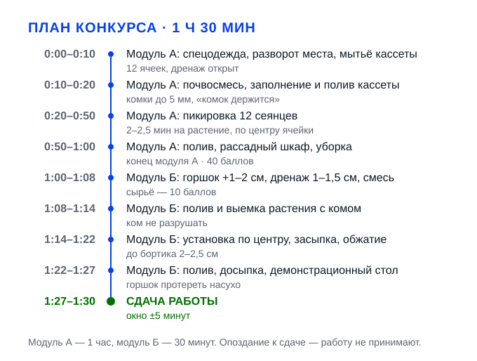
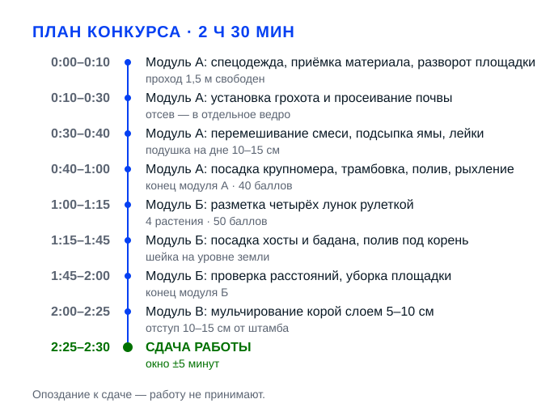
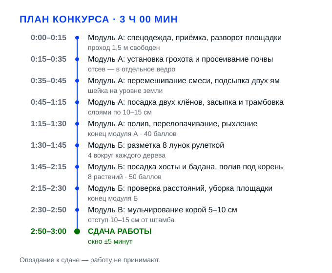

Садовник (Р)
Задания ниже — официальные файлы «Абилимпикс» (источник: abilympics-russia.ru), разложенные по категориям. Решения написаны по тексту задания, регламенту и критериям оценки; в них указано, что именно проверяет эксперт.
Школьник
14–16 лет, базовый уровень заданияВыдержка из официального конкурсного задания: страницы, относящиеся к категории «Школьник» (стр. 4–6 источника).
Пошаговое решение
Задание «Школьники» короткое по составу и плотное по времени: 1 час 30 минут, два модуля, 100 баллов. В модуле А за 1 час нужно распикировать 12 сеянцев сложноцветных культур — однолетних георгин, бархатцев или астр — по одному в каждую ячейку кассеты, ровно по центру; это 40 баллов. В модуле Б за 30 минут нужно перевалить комнатное растение — пеларгонию или хлорофитум — в горшок диаметром на 1–2 см больше исходного, не разрушив почвенный ком, и выставить его на демонстрационный стол; это 60 баллов при вдвое меньшем времени. Баллы внутри модулей одинаковы: организация и охрана труда — 5, экология и ресурсосбережение — 5, последовательность операций и параметров — 20, планирование — 10, а в модуле Б ещё 10 за подготовку сырья и 10 за контроль времени подачи. И помните пункт 2.4: не менее 30 % содержания меняют перед соревнованием, обычно вид или сорт растений, но не тему и не количество.

Задача 1. Развернуть рабочее место и подготовить инструментМодуль А · 10 баллов: организация 5 + экология 5
Модуль начинается не с растений, а с площадки, и это не формальность: 12 сеянцев нужно распикировать за час, поэтому каждая минута, потраченная на поиск колышка, тряпки или ведра, отнимается у последних ячеек, когда руки уже устали. Здесь же набираются две группы баллов, которые идут через весь модуль: 5 баллов за организацию рабочего процесса, охрану труда и технику безопасности и 5 баллов за сохранение окружающей среды и ресурсосбережение. Добрать их в конце нельзя — эксперт смотрит, как вы входите на площадку, как раскладываете инвентарь и куда ссыпаете отходы, с первой минуты и до сдачи работы.
Действие 1.1. Войти на площадку по правилам охраны труда
Шаг 1.1.1
Надеваем полный комплект спецодежды из раздела 3.1 конкурсного задания: халат или комбинезон с длинным рукавом, кепку или косынку и закрытую обувь на нескользящей подошве. Халат застёгиваем на все пуговицы, рукава оставляем длинными, но застёгиваем манжеты — так ткань не свисает и не смахивает почву с бортов кассеты. Кепку надеваем козырьком вперёд и убираем под неё все волосы, включая те, что у затылка и на висках; косынку завязываем узлом сзади. Обувь проверяем на сухость: у поливочной зоны плитка мокрая, и подошва на гладком полу скользит.
Спецодежда — часть критерия «Организация рабочего процесса, охрана труда и техника безопасности»: 5 баллов в модуле А и ещё 5 в модуле Б, то есть 10 из 100. Оценивают не наличие халата, а соответствие трём требованиям задания: длинный рукав, убранные волосы, безопасная закрытая обувь. Свободный рукав при пикировке цепляет край кассеты и выбивает из ячейки уже посаженный сеянец — это минус растение из 12 и минус баллы за последовательность.
Проверьте себя по трём признакам. Первый: волос не видно ни спереди, ни сзади — попросите соседа или волонтёра посмотреть со спины, самому это не видно. Второй: манжеты застёгнуты, рукав не спускается на ладонь. Третий: подошва сухая, не скользит на плитке — пройдите два шага у лейки и убедитесь, что нога не едет.
Самая частая ошибка — надеть кепку на макушку, оставив затылок открытым: спереди всё аккуратно, а сзади волосы выбиваются, и эксперт это фиксирует. Вторая — прийти в открытой обуви, рассчитывая надеть халат «потом»: время уходит из модуля, а балл за спецодежду уже снят. Третья — закатать рукава выше локтя: нарушение требования о длинном рукаве.
Эксперт осматривает участника до старта, в первые минуты модуля, и дальше отмечает, остаётся ли спецодежда в порядке: пятна почвы на груди и спущенный рукав к середине работы тоже считаются.
Шаг 1.1.2
Снимаем часы, кольца, браслеты и длинные серьги, проверяем ногти — коротко подстрижены, без лака и покрытия. Руки моем с мылом до запястий и вытираем одноразовым полотенцем, а не об халат. Длинные волосы дополнительно стягиваем резинкой и только потом убираем под кепку. Тонкие перчатки надеваем на этап работы с почвосмесью — замес, разбивание комков, заполнение кассеты, — а перед выборкой сеянцев снимаем: голыми пальцами лучше чувствуется усилие обжима корня, и меньше риск раздавить стебель.
Под украшениями остаются загрязнения, которые обычным мытьём не снимаются, а камень из кольца или звено браслета легко теряются в рыхлой почвосмеси и потом обнаруживаются в ячейке с растением. Для модуля, где оценивают санитарное состояние места, это прямое нарушение, а найденный в кассете предмет читается как небрежность всей работы. Перчатки на почве и голые руки на сеянцах — не компромисс, а нормальная технология питомников.
Осмотрите руки: украшений нет, ногти короткие, кожа сухая. Полотенце использованное сразу выброшено, а не положено на стол рядом с кассетой. Проверьте, что перчатки сняты до того, как вы взяли первый сеянец: в перчатке пальцы скользят по стеблю.
Оставить обручальное кольцо «оно не мешает» — на категории «Школьники» это проверяют на входе, и объяснение «я привык» не принимается. Вторая ошибка — работать в перчатках всю пикировку: стебель мнётся, потому что через перчатку не чувствуется усилие, и часть сеянцев гибнет уже к сдаче.
Эксперт смотрит на руки до старта и потом в процессе работы: чистота, отсутствие украшений, смена перчаток после почвы. Отдельно он отмечает, моется ли инвентарь после работы с землёй, — это идёт в 5 баллов за организацию процесса.
Шаг 1.1.3
Обходим рабочее место и снимаем риски до того, как сели за стол. Проверяем проход: по разделу 4 задания рабочее место занимает 3000×1900 мм, а ширина прохода между местами должна быть 1,5 м — значит, ведро, мешок с почвой и ящик с сеянцами не стоят в проходе, а лежат в своей зоне. Смотрим под ноги: нет луж, шланг и удлинитель не пересекают дорожку. Проверяем стол: инструмент не лежит на самом краю, нож и секатор — если они выданы — лежат лезвием от себя, а не поперёк столешницы.
Требования охраны труда в задании вынесены отдельной строкой критериев, и 5 баллов ставят именно за то, что участник видит риск и убирает его, а не наступает на него. Практическая сторона тоже важна: мокрый пол под столом — это падение с кассетой в руках, а упавшая кассета означает, что 12 распикированных растений придётся собирать заново, и времени на это в часовом модуле нет.
Пройдите по своему участку от стола до лейки и обратно, глядя только под ноги: путь должен быть сухим и свободным по всей длине. Потом посмотрите на стол сверху: всё, что может скатиться, лежит не ближе 10 см от края.
Поставить ведро с отсевом в проход «чтобы было под рукой» — его задевают, и содержимое оказывается на полу, а это и травмоопасно, и снимает баллы за экологию. Вторая ошибка — не заметить лужу у поливочной зоны и поставить туда ящик с сеянцами: картон размокает, ящик разъезжается.
Эксперт по технике безопасности проходит площадку перед стартом и фиксирует состояние проходов и пола, а в процессе смотрит, не появилось ли новых помех.
Действие 1.2. Разложить инвентарь по зонам
Шаг 1.2.1
Делим стол на три зоны и держим их до конца модуля. Сухая зона — по центру и справа: кассета, колышек, совок, сито. Влажная — слева у борта: лейка с ситечком, таз, тряпка. Отходы — отдельное ведро на полу справа, не под столом, чтобы не наклоняться за ним каждый раз. Ящик с общей массой сеянцев ставим слева, на расстоянии 15–20 см от кассеты: левая рука подаёт сеянец, правая работает колышком, и на каждое растение уходит два движения вместо четырёх.
Раскладка по зонам — это и есть «планирование и ведение рабочего процесса», 10 баллов в модуле А. Считается просто: 12 растений за 60 минут — это около 4 минут на растение вместе с подготовкой, и любое лишнее перемещение по столу крадёт эти минуты. Кроме того, зонирование не даёт смешать сухую почву с мокрой тряпкой и разнести грязь по столешнице, за которую тоже ставят баллы.
Сядьте на рабочее место и попробуйте, не вставая, дотянуться правой рукой до колышка, а левой — до ящика с сеянцами. Если приходится тянуться или поворачиваться корпусом, зона стоит не там. Ведро должно стоять так, чтобы в него попадал комок без прицеливания.
Сложить всё в одну кучу перед собой: колышек теряется под кассетой, тряпка лежит на сеянцах, и через десять минут стол превращается в грязную лужу. Вторая ошибка — поставить ящик с сеянцами справа, под рабочую руку: приходится каждый раз перекладывать колышек.
Эксперт обходит рабочие места в первые минуты модуля и отмечает, разделены ли зоны и достаёт ли участник до инструмента не вставая. На итоговой оценке это идёт в 10 баллов за планирование и ведение рабочего процесса.
Шаг 1.2.2
Проверяем и раскладываем инструмент: пикировальный колышек длиной 12–15 см и диаметром 6–8 мм (подойдёт и деревянный, и пластиковый, и обычный карандаш), совок или небольшая лопатка, сито с ячейкой 3–5 мм для разбивания комков, лейка с мелким ситечком-насадкой, ведро для отсева, тряпка, бирка и водостойкий маркер. Своего инвентаря привозить не нужно — в разделе 3.2 задания прямо указано «не требуется», всё выдаёт площадка, — поэтому проверять выданное надо на месте и сразу. Колышек не должен быть острым как игла: такой прорезает корень, а не раздвигает почву.
Пикировальный колышек задаёт геометрию лунки, а лунка задаёт, как ляжет корень. Тупой или слишком толстый колышек делает лунку шире корня, и сеянец потом болтается; слишком острый — рвёт корневые волоски. Сито нужно, если почвосмесь комковатая: комки крупнее 5 мм не дают корню сомкнуться с почвой, и растение после полива проседает. Всё это относится к критерию последовательности технологических операций на 20 баллов.
Проверьте каждый предмет в руке. Колышек: на ладони остаётся ровный след, кончик закруглён. Лейка: насадка держится, при наклоне вода идёт дождиком, а не струёй, из корпуса не подтекает. Сито: сетка целая, без прорывов. Маркер: пишет на пластике кассеты, а не стирается пальцем.
Взять первый попавшийся колышек и обнаружить, что он короче глубины ячейки: лунку приходится ковырять пальцем, и почва вокруг уплотняется так, что корню нечем дышать. Вторая ошибка — поливать из лейки без насадки: струя размывает ячейку и выбивает только что посаженный сеянец.
Эксперт смотрит, каким инструментом участник делает лунку и как поливает; несоответствие инструмента операции видно сразу и идёт в минус по последовательности.
Шаг 1.2.3
Ставим стол и стул под себя. Столешница — на уровне чуть ниже локтя, чтобы при работе кисти не поднимались выше плеч; стул поднимаем так, чтобы колени свободно уходили под стол, а стопы стояли на полу всей ступнёй. Свет должен падать спереди и слева, не давая тени от руки на ячейку: при пикировке вы смотрите в лунку глубиной 3–4 см, и в тени корень не видно. Если на площадке есть местная лампа, включаем её — по разделу 4 задания для участников с нарушением зрения предусмотрено освещение не менее 300 люкс.
Поза и свет — не эргономическая мелочь, а прямое влияние на качество: при тени от руки легко заглубить корневую шейку или согнуть корень, а при завышенном стуле к концу часа кисть перестаёт чувствовать усилие обжима. Обе ошибки видны на 12 растениях сразу, и обе стоят баллов в группе последовательности операций, где как раз проверяют правильность заглубления.
Положите ладонь на столешницу: локоть должен быть чуть выше поверхности, плечо не поднято. Посмотрите на ячейку — тень от руки не закрывает её дно. Через пять минут работы проверьте шею и поясницу: если начали тянуться, стол стоит слишком далеко.
Работать стоя в наклоне над низким столом: через полчаса спина устаёт, движения становятся резкими, и сеянцы рвутся. Вторая ошибка — сесть так, что свет от окна падает сзади: в ячейке темно, и глубина посадки получается разной от растения к растению.
Эксперт смотрит, как оборудовано место: высота стола, свет на ячейку, отсутствие тени от руки. Замечание делают, если участник весь модуль работает в наклоне или щурится, — это идёт в организацию процесса.
Действие 1.3. Подготовить кассету, бирку и порядок отходов
Шаг 1.3.1
Моем кассету тёплой водой с хозяйственным мылом и проходимся щёткой по каждой из 12 ячеек — изнутри, по углам и по дну. Затем ополаскиваем чистой водой и, если на площадке выдан раствор марганцовки или фитоспорина, опускаем кассету на 10–15 минут и снова промываем. После этого ставим сушиться дном вверх на решётку, а не на мокрый стол. Отдельно проверяем дренажные отверстия: в каждой ячейке их должно быть хотя бы одно, и оно должно быть открыто.
В прошлогодней кассете на стенках остаются соли и споры грибков, и молодой сеянец в такой ячейке загнивает у корневой шейки за два-три дня — на сдаче это выглядит как поникшие растения, хотя пикировка была сделана правильно. Закрытое дренажное отверстие хуже: вода стоит в ячейке, корень задыхается, и растение погибает уже к концу модуля. Мытьё кассеты — часть критерия ресурсосбережения и санитарии.
Поднимите кассету на свет: в ячейках не видно налёта и остатков земли, стенки чистые. Пролейте одну ячейку водой — она должна уйти через отверстие, а не стоять. Проведите пальцем по дну: трещин и проломов нет.
Сполоснуть кассету «на глаз» и оставить землю в углах — именно там серая гниль и начинается. Вторая ошибка — взять кассету с треснувшей ячейкой: при первом поливе она разваливается вместе с растением, и в сдаче не хватает одного из 12.
Эксперт осматривает кассету до заполнения: чистые ли ячейки, открыт ли дренаж, нет ли трещин. Мытьё кассеты он относит к подготовке вспомогательного сырья и к санитарии — обе группы входят в оценку модуля А.
Шаг 1.3.2
Подписываем кассету и бирку до того, как в ней появится почва. На торце кассеты водостойким маркером пишем культуру и дату, а на бирке — то же самое плюс фамилию и номер рабочего места. Бирку вставляем в первую ячейку у борта, этикеткой к зрителю, и следим, чтобы она не легла на сеянец. Если кассета без борта под подпись, бирку ставим в крайнюю ячейку, которую заполним последней, — так подпись не смоет поливом.
Культура в задании может смениться: по пункту 2.4 не менее 30 % содержания меняют перед соревнованием, и вместо бархатцев могут выдать астры. Подписанная кассета исключает путаницу при сдаче, а эксперт по бирке сверяет, то ли растение выращено. Кроме того, подпись — это элемент планирования: она показывает, что участник ведёт работу осознанно, а не «сажает, что дали».
Проведите пальцем по надписи через минуту — маркер не должен смазываться. Посмотрите на кассету с расстояния шага: надпись читается, бирка не закрывает ячейку и не мешает ставить кассету в шкаф. Если надпись поплыла на влажном пластике, обведите её заново и дайте высохнуть.
Подписать кассету шариковой ручкой по мокрому пластику — надпись стирается первым же поливом, и на сдаче приходится объяснять на словах. Вторая ошибка — воткнуть бирку в уже посаженную ячейку: колышек проходит рядом с корнем и рвёт его.
Эксперт при сдаче сверяет бирку с выданным заданием: культура, количество, номер места. Отсутствие подписи он трактует как небрежность в планировании, даже если растения выращены правильно и стоят ровно.
Шаг 1.3.3
Пишем план на час на листке и кладём его на край стола: 10 минут — вход, разворот рабочего места и мытьё кассеты, 10 минут — почвосмесь, заполнение и полив кассеты, 30 минут — пикировка 12 растений, то есть по 2–2,5 минуты на ячейку, 10 минут — полив, шкаф, уборка и сдача. В плане отмечаем контрольную точку: к 30-й минуте модуля должно быть распикировано не меньше шести растений. Отметки ставим карандашом прямо в списке, чтобы видеть отставание сразу.
Критерий «Планирование и ведение рабочего процесса» — 10 баллов, и проверяют его по факту: успел ли участник пройти все восемь операций модуля А за час. Половина неудач на этой компетенции — не плохая пикировка, а потерянное время: человек начинает с растений, а потом обнаруживает, что кассета не вымыта и почвосмесь не разрыхлена. Контрольная точка на шести растениях даёт запас на исправление.
Через 20 минут после старта посмотрите на часы и на кассету: если распикировано меньше четырёх ячеек, темп надо поднимать — сокращать не качество, а лишние движения. К 30-й минуте — шесть растений, к 45-й — девять, к 55-й — двенадцать.
Планировать «по ощущениям» и спохватиться на 50-й минуте, когда готово семь ячеек: оставшиеся пять делаются в спешке, с заглублённой шейкой и необжатым корнем, и именно они дают минус по последовательности. Вторая ошибка — отложить полив и уборку на последние минуты и не успеть поставить кассету в рассадный шкаф.
Эксперт отмечает время выполнения каждой операции и сравнивает его с часовым лимитом модуля А. Отставание видно по кассете: если к середине модуля занята треть ячеек, работа уже не укладывается в график.
Задача 2. Подготовить почвосмесь и заполнить кассетуМодуль А · 10 баллов: планирование и ведение процесса
Почвосмесь в этом модуле — не фон, а среда, в которой корень должен прижиться за час и не погибнуть за три дня после конкурса. От неё зависят сразу три вещи, за которые ставят баллы: однородность (комки крупнее 5 мм не дают корню контакта с почвой), влажность (в пересушенной ячейке корневые волоски рвутся при обжиме, в переувлажнённой — задыхаются) и плотность (слишком рыхлая почва оседает после полива и обнажает корневую шейку, слишком плотная не пропускает воздух). Десять баллов здесь дают за планирование и ведение процесса: видно, готовите вы среду осознанно или просто сыплете из мешка.
Действие 2.1. Разрыхлить смесь и довести её до рабочей влажности
Шаг 2.1.1
Высыпаем почвосмесь из мешка в таз или на лоток слоем не толще 10 см и разминаем комки руками в перчатках, растирая их между ладонями. Всё, что крупнее 5 мм и не разминается — куски глины, щепа, камни, корни сорняков, — выбираем в ведро для отсева, а не обратно в мешок. Если смесь торфяная и слежавшаяся, просеиваем её через сито с ячейкой 3–5 мм прямо в таз, а отсев выносим. Работаем на клеёнке: просыпанное сразу ссыпаем обратно, а не сметаем на пол.
Крупный комок в ячейке работает как клин: корень упирается в него и загибается вверх, а после полива вокруг комка образуется пустота, в которой корень сохнет. Именно поэтому в критериях отдельно стоит «последовательность технологических операций и технологических параметров» — 20 баллов модуля А, где смотрят и на подготовку смеси, и на её однородность. Отсев в отдельное ведро, а не в мешок, — ещё и ресурсосбережение: чистую смесь не выбрасываем.
Возьмите горсть и разотрите в ладони: на руке не должно оставаться твёрдых крупинок крупнее 3–5 мм. Просейте контрольную горсть через сито — на сетке остаётся не больше десятой части объёма. Смесь должна быть однородной по цвету, без светлых и тёмных пятен.
Сыпать смесь в кассету прямо из мешка, не разминая: в трёх-четырёх ячейках оказываются комки, растения в них сидят выше остальных, и ряд на сдаче выглядит неровным. Вторая ошибка — выбросить отсев в общий мусор вместе с плодородной частью.
Эксперт смотрит на смесь в тазу и в готовых ячейках: однородность видна и на глаз, и на ощупь, когда он проверяет посадку пальцем. Комки крупнее 5 мм он отмечает как нарушение параметра подготовки смеси.
Шаг 2.1.2
Доводим влажность до состояния «сжатый комок держится, но воды не отдаёт». Берём горсть смеси, сжимаем в кулаке и разжимаем: комок должен сохранить форму, не рассыпаться и не выделить воду. Если смесь сухая и пылит, добавляем воду тонкой струёй из лейки и перемешиваем — примерно 100–150 мл на каждые 2–3 литра смеси, порциями, а не всю сразу. Если смесь мокрая и липнет к руке, подмешиваем сухую смесь из мешка до тех пор, пока комок не перестанет мазаться.
Влажность определяет, выживет ли сеянец в первые сутки. В сухой смеси корневые волоски при обжиме ломаются, и растение неделю стоит на своих запасах, а потом гибнет. В переувлажнённой смеси при обжиме из ячейки выступает вода, почва заплывает, и корень задыхается. Оба случая эксперт видит по состоянию растений на сдаче, а параметр «влажность почвосмеси» входит в 20 баллов за технологические параметры.
Три пробы подряд: сжали — комок держится, разжали — рассыпается на 2–3 части, на ладони остаётся влажный след без капель. Если из комка потекла вода — смесь переувлажнена, если комок рассыпался в пыль — пересушена.
Залить смесь «чтобы наверняка хватило» и потом весь модуль работать с грязью: ячейки заплывают, лунка не держит форму, сеянец в ней падает набок. Вторая ошибка — не смачивать вовсе и поливать только после посадки: сухая смесь забирает воду из корня, и растение получает ожог.
Эксперт проверяет влажность пальцем в ячейке до посадки и после полива: слишком сухая смесь пылит, слишком мокрая мажет палец. Обе крайности он фиксирует в группе технологических параметров модуля.
Шаг 2.1.3
Перемешиваем подготовленную смесь до полной однородности — руками или совком, пересыпая из края в край не меньше двух-трёх раз. Затем проверяем температуру: смесь, которая хранилась на улице или в холодном помещении, должна согреться до 15–18 °C, поэтому её либо заносят заранее, либо держат в тепле площадки. Мёрзлую смесь не используем вовсе: комок, схваченный морозом, после оттаивания становится плотным и не пропускает воздух.
Холодная смесь тормозит корнеобразование: при 10–12 °C корень почти не растёт, и сеянец стоит в ячейке, не приживаясь, а за конкурсные сутки это критично. Однородность нужна ещё и потому, что торфяные смеси расслаиваются при хранении: сверху оказывается сухой торф, снизу — тяжёлая минеральная часть, и если не перемешать, верхние ячейки кассеты получат один состав, а нижние — другой.
Опустите тыльную сторону ладони в смесь — она не должна ощущаться холодной. Возьмите две горсти из разных мест таза и сравните на ощупь и по цвету: они должны быть одинаковыми. Комков и волокон не видно.
Заполнять кассету смесью прямо из холодного мешка: часть растений так и не трогается в рост, и к сдаче они выглядят вялыми. Вторая ошибка — перемешать только верхний слой и оставить плотный пласт на дне таза: последние ячейки заполняются тяжёлой смесью.
Эксперт проверяет смесь на ощупь и смотрит, из какого слоя участник берёт её для последних ячеек. Если верхние ячейки заполнены сухой смесью, а нижние сырой, это видно по поливу и по оседанию почвы.
Действие 2.2. Заполнить кассету, выровнять и утрамбовать почву
Шаг 2.2.1
Насыпаем смесь в ячейки совком или горстью, доверху и с небольшой горкой, начиная с дальнего ряда и двигаясь к себе, чтобы не задевать уже заполненные ячейки рукавом. Сыплем не в одну точку, а распределяем по всей площади ячейки: тогда внутри не образуется воздушный столб. Излишек, который остался на бортах, ссыпаем обратно в таз, а не смахиваем на пол.
Заполнение с горкой — единственный способ получить после уплотнения ровную поверхность во всех 12 ячейках: смесь садится на 10–15 % объёма, и если сыпать «ровно по борт», после уплотнения в ячейке останется ямка, в которой при поливе будет стоять вода. Ровный уровень — это и есть тот технологический параметр, по которому судят о качестве подготовки кассеты.
Посмотрите на кассету сбоку на уровне стола: горки должны быть одинаковыми во всех заполненных ячейках. Проверьте пальцем одну ячейку — под верхним слоем нет пустоты, палец встречает сопротивление по всей глубине.
Насыпать в каждую ячейку по-разному: где-то с горкой, где-то вровень — после уплотнения получится «лестница», и растения окажутся на разной высоте. Вторая ошибка — сыпать смесь на борта и потом сдувать её: часть попадает в соседние ячейки и уплотняет их неравномерно.
Эксперт оценивает ровность поверхности кассеты до посадки — это первый видимый признак качества подготовки. Горки разной высоты он читает как небрежное заполнение, даже если растения потом посажены правильно.
Шаг 2.2.2
Выравниваем поверхность ладонью или линейкой, снимая излишек по бортам, а потом уплотняем: приподнимаем кассету на 2–3 см над столом и два-три раза роняем её плашмя, ровно, без перекоса. После этого досыпаем смесь в просевшие ячейки и снова выравниваем. Пальцами в глубину не давим: нужно, чтобы почва пружинила под нажимом, а не превращалась в плотную пробку.
Постукивание даёт равномерную плотность во всех ячейках — ту самую, при которой корень получает и опору, и воздух. Пальцевое уплотнение почти всегда неравномерное: там, где нажали сильнее, получилась плотная зона, куда корень не проходит, а вода не впитывается. Плотность и однородность — прямые технологические параметры из 20-балльной группы.
Нажмите пальцем на поверхность в трёх разных ячейках: глубина следа одинаковая, около 2–3 мм, и палец не проваливается. Переверните кассету над тазом и постучите — смесь не должна высыпаться целыми кусками.
Утрамбовать ячейки большим пальцем «для надёжности»: почва становится плотной, при поливе вода скатывается по стенкам, а корень в такой ячейке растёт вбок. Вторая ошибка — не постучать вовсе: после первого полива смесь осядет на 1–1,5 см, и корневая шейка окажется выше уровня почвы.
Эксперт проверяет плотность пальцем и смотрит, не осела ли смесь после первого полива. Если ячейки просели на 1,5–2 см, значит, уплотнение было недостаточным, и это идёт в минус по параметрам.
Шаг 2.2.3
Проверяем уровень в каждой из 12 ячеек: до верхнего края бортика должно оставаться 0,5–1 см. Если где-то смеси больше, снимаем излишек ложкой и переносим в другую ячейку; если меньше — досыпаем и выравниваем. Заодно проходим по дну каждой ячейки пальцем снаружи, через дренажное отверстие: если чувствуется пустота, значит внутри воздушный карман, и такую ячейку надо перезаполнить.
Уровень «0,5–1 см до бортика» — не украшение, а рабочий параметр: при поливе вода не переливается через край и не соединяет ячейки, а значит, больное растение не заражает соседние. Кроме того, при одинаковом уровне во всех ячейках лунки получаются одинаковой глубины, и все 12 сеянцев сажаются на одну и ту же глубину — именно это и проверяют в критерии последовательности.
Приложите линейку к бортику: просвет 5–10 мм по всей длине кассеты, без «волн». Посмотрите на кассету с торца — линия поверхности ровная. Проверьте дренаж: в каждой ячейке отверстие открыто, продуйте одну — воздух должен проходить насквозь.
Заполнить ячейки выше бортика «чтобы корню было где расти»: при поливе вода перетекает через край, смывает смесь и соединяет ячейки в одну грязную лужу. Вторая ошибка — оставить воздушный карман у дна: после полива смесь проваливается, и сеянец уходит вниз вместе с ней.
Эксперт проверяет уровень линейкой или на глаз при боковом свете: перелив смеси через борт и «волны» он фиксирует как нарушение параметра. Отдельно смотрит, открыт ли дренаж в каждой ячейке.
Шаг 2.2.4
Проливаем кассету до посадки: вода 22–25 °C, из лейки с мелким ситечком, два-три прохода по кассете, пока из дренажных отверстий не покажутся первые капли. Ждём 5 минут, чтобы вода распределилась, и смотрим, не просели ли ячейки: просевшие досыпаем смесью и выравниваем. Если после полива на поверхности выступили тёмные пятна и вода стоит дольше минуты — смесь слишком плотная, ячейку лучше перезаполнить.
Полив до посадки делает две вещи: убирает воздушные пустоты, из-за которых сеянец после посадки проваливается, и задаёт ту влажность, при которой корень не травмируется при обжиме. Поливать после посадки «за компанию» нельзя: струя выбивает только что поставленный сеянец из лунки, и приходится поправлять его колышком, теряя время и качество.
Капли на дренаже появились, поверхность влажная и блестит, но лужиц нет. Через 5 минут уровень во всех ячейках одинаковый. Сожмите щепотку смеси с поверхности — держится комком, вода не течёт; если вода стоит, смесь плотная.
Полить кассету струёй из носика без насадки: смесь размывается, в ячейках образуются воронки, и глубина лунок становится разной. Вторая ошибка — не полить вовсе и сажать в сухую смесь: при первом поливе после посадки почва осядет на 1–2 см и обнажит корневую шейку.
Эксперт смотрит на поверхность кассеты перед посадкой: равномерно влажная, без воронок и луж — признак правильной подготовки. Сухие светлые пятна он читает как недолив, и это влияет на оценку параметров.
Задача 3. Распикировать 12 сеянцев по ячейкам кассетыМодуль А · 20 баллов: последовательность операций и параметров
Здесь набирается самая дорогая группа баллов модуля А — 20 баллов за последовательность технологических операций и технологических параметров. Проверяют ровно то, что перечислено в пункте 2.3.1 задания: сеянцы выбраны одинаковые по размеру, посажены по одному в ячейку и строго по центру, корневая шейка не заглублена, почва обжата, растения политы. Двенадцать ячеек — это двенадцать одинаковых повторений одного приёма, поэтому ошибка, которую вы сделали один раз, будет видна на всём ряду: если вы ставите сеянец слишком глубоко, глубоко будут стоять все двенадцать. Работайте размеренно: на одно растение отводится 2–2,5 минуты, и этого достаточно, чтобы сделать всё правильно.
Действие 3.1. Отобрать сеянцы и подготовить их к выборке
Шаг 3.1.1
За 1–2 часа до выборки, а если сеянцы стоят сухими — не позже чем за 30 минут, поливаем общую массу сеянцев в ящике тёплой водой 20–22 °C из лейки с ситечком, до полного смачивания кома, но без лужи на поверхности. Воду льём по стенке ящика, а не в центр, чтобы не прибить растения к почве. Если ящик стоит на поддоне, через 10 минут сливаем лишнюю воду из поддона.
Полив перед выборкой — не про растения, а про ком земли вокруг корня. В сухой почве ком рассыпается в руке, корневые волоски остаются в ящике, и сеянец переходит в кассету голым корнем, после чего неделю болеет. Во влажной почве ком держится и уносит с собой всю корневую систему. Это первый пункт технологической цепочки пикировки, и он входит в 20 баллов за последовательность.
Сожмите горсть почвы у стенки ящика: комок держится, вода не течёт. Сами сеянцы не полегли, листья не прибиты к земле, лужи на поверхности нет. Если вода стоит — подождите 10 минут, пока впитается, и проверьте ещё раз.
Полить за пять минут до выборки: вода не успевает распределиться, ком размокает, и при вынимании сеянец выходит с жидкой грязью вместо кома. Вторая ошибка — не полить вовсе и выдёргивать сеянцы из сухой смеси: корни рвутся, и из 12 растений приживаются пять-шесть.
Эксперт проверяет влажность ящика с сеянцами до начала пикировки: пересушенная или залитая почва отмечается как нарушение параметра. Он же смотрит, не прибиты ли листья к земле после полива.
Шаг 3.1.2
Выкладываем ящик с сеянцами на стол и отбираем 12 растений, одинаковых по размеру: высота над землёй 4–6 см, два-три настоящих листа кроме семядольных, стебель толщиной с соломинку, цвет тёмно-зелёный, без пятен. Отбраковываем вытянутые и полегшие, с искривлённым стеблем, с жёлтыми нижними листьями, с паутинкой или налётом. Отобранные перекладываем в отдельный лоток или на влажную ткань и держим в тени, накрыв от света, но не герметично.
В задании прямо сказано: выбрать из общей массы сеянцев одинаковые по размеру. Это не эстетика — одинаковые растения одинаково приживаются и одинаково выглядят на сдаче, а ряд из двенадцати разнокалиберных растений эксперт читает как невыполненное требование. Отбраковка больных сеянцев тоже обязательна: один сеянец с признаками грибка в общей кассете — это риск для всех двенадцати.
Поставьте отобранные растения в ряд на столе и посмотрите вдоль него: верхушки должны идти почти по одной линии, разница не больше 1 см. Пересчитайте — ровно 12. Осмотрите нижнюю сторону листьев: паутинки, налёта и точек быть не должно.
Брать первые попавшиеся сеянцы, включая вытянутые: они полегают после полива, и в кассете появляются «дыры». Вторая ошибка — отобрать больше 12 «на запас» и держать лишние на столе: корни подсыхают, а потом эти растения ставят в последние ячейки, и они гибнут первыми.
Эксперт смотрит на ряд в кассете и на однородность растений: разнокалиберность он фиксирует в группе последовательности, потому что выбор одинаковых сеянцев — отдельный пункт задания.
Шаг 3.1.3
Раскладываем отобранные сеянцы в порядке посадки: первый — ближний к вам угол кассеты, дальше по ряду. Каждый сеянец кладём на влажную ткань корнем в одну сторону, стеблем в другую, не сдавливая стебель. Держим их не больше 5–10 минут: за это время успевает высаживаться три-четыре растения, остальные ждут в тени под влажной салфеткой. Если работа затягивается, накрываем лоток влажной тканью целиком.
Корневые волоски на воздухе высыхают за 5–10 минут — это физиология, а не теория, и подсохший корень уже не срастается с почвой. Порядок «по ряду» экономит движения: вы не ищете следующий сеянец, а берёте его с той стороны, где он лежит, и не путаете, сколько уже посажено. И то и другое видно в критерии планирования и последовательности.
Проверьте ткань под сеянцами: она влажная, но вода с неё не капает, корни не побелели и не подсохли. Количество посаженных растений плюс лежащих на ткани в любой момент равно 12. Если ткань высохла, сбрызните её из лейки.
Разложить все 12 сеянцев сразу и работать сорок минут: последние приходят с высохшим корнем и в кассете не приживаются. Вторая ошибка — складывать сеянцы пучком, стебель к стеблю: они мнутся, и на сдаче видно помятые растения.
Эксперт подходит во время работы и смотрит, как хранятся вынутые сеянцы: подсушенные корни и смятые стебли — типичное замечание. Он же отмечает, в каком порядке участник берёт растения.
Действие 3.2. Сделать лунку и перенести сеянец в ячейку
Шаг 3.2.1
Берём колышек в правую руку как карандаш и делаем лунку строго по центру ячейки: вводим колышек вертикально, слегка покачивая, на глубину 3–4 см — так, чтобы поместился корень целиком. Диаметр лунки должен быть 1,5–2 см, чуть больше корневой системы. Затем чуть отводим колышек в сторону, оставляя в почве вертикальный канал, — так лунка не заплывает и стенки остаются ровными.
Центр ячейки — прямое требование пункта 2.3.1: растения должны находиться по центру каждой ячейки. Лунка по центру даёт корню одинаковое расстояние до всех стенок, а значит, одинаковый доступ к воде и питанию; смещённая лунка при поливе смывает почву к одной стороне, и растение клонится. Глубина 3–4 см — это длина корня сеянца в возрасте 2–3 настоящих листьев, при меньшей глубине корень ложится горизонтально.
Посмотрите на ячейку сверху: лунка стоит по центру, расстояние до стенок одинаковое, примерно по 1 см с каждой стороны. Опустите колышек в лунку до метки — глубина 3–4 см, стенки канала не осыпались. Проверьте две ячейки подряд: глубина должна совпадать.
Сделать лунку ближе к краю «где удобнее рукой»: при поливе вода уходит по стенке, и растение оказывается на сухом бугре. Вторая ошибка — проткнуть ячейку насквозь, до дренажного отверстия: вода уходит сразу, не смачивая ком, и корень сохнет.
Эксперт проверяет положение растений в кассете на сдаче и во время работы смотрит, как участник делает лунку; смещение от центра — типичная потеря баллов.
Шаг 3.2.2
Поддеваем сеянец снизу: вводим колышек или маленькую вилку на 3–4 см в стороне от стебля, примерно в 1,5 см, и легким рычажным движением приподнимаем ком вместе с корнем. Второй рукой придерживаем растение за семядольный лист, а не за стебель. Вынимаем с комом земли размером с грецкий орех; если ком рассыпался, аккуратно собираем корень в ладонь, не стряхивая остатки почвы.
Ком земли на корне — главный смысл пикировки: он сохраняет корневые волоски, через которые растение пьёт. Стебель у сеянца травянистый, и даже лёгкое сдавливание пережимает проводящие пучки — такое растение вянет через день. Правильный захват за семядольный лист безвреден: лист этот всё равно отомрёт, а стебель останется целым.
В руке сеянец с комом, корень не оголён, стебель не сплющен: посмотрите на него сбоку — он круглый. Лист, за который вы держали, цел. Почва с корня не осыпалась в ладонь, а если ком треснул, края прижаты и держатся.
Тянуть сеянец за стебель вверх: корень обрывается у корневой шейки, и растение остаётся без точки роста — такие сеянцы в кассете не приживаются вовсе. Вторая ошибка — вынимать с комом слишком большого размера: он не входит в лунку, и его приходится разламывать.
Эксперт следит за захватом при выборке: выдёргивание за стебель он видит сразу и считает грубой ошибкой технологии. Отдельно отмечает, сохранён ли ком земли на корне у первых растений.
Шаг 3.2.3
Перед посадкой у сеянцев со стержневым корнем — астры, однолетние георгины — прищипываем кончик главного корня примерно на треть длины, ногтем или ножницами, держа корень в воздухе не дольше нескольких секунд. У бархатцев корень обычно мочковатый, и прищипку делают только если он заметно длиннее лунки. Прищипку делаем над лотком, чтобы обрезки не попадали в кассету.
Прищипка кончика главного корня заставляет растение наращивать боковые корни, и ком в ячейке осваивается полностью — растение лучше держится и меньше страдает от пересушки. Без прищипки длинный стержневой корень в мелкой ячейке загибается крючком вверх, и такой сеянец приживается хуже. Это стандартный приём пикировки, и эксперт смотрит на него как на признак владения технологией.
Посмотрите на срез: он ровный, светлый, длина оставшегося корня 2,5–3 см — как раз под глубину лунки, корень не размочален. Обрезки не лежат в ячейках. Сравните длину корней у трёх сеянцев подряд — разница не больше 5 мм.
Отщипнуть половину корня «чтобы лучше влез»: растение теряет слишком много всасывающей поверхности и вянет к сдаче. Вторая ошибка — прищипывать корень уже в лунке: обрезок остаётся в почве и загнивает.
Эксперт обращает внимание, одинакова ли длина корней у посаженных растений: прищипка входит в технологическую цепочку пикировки, и её отсутствие видно по загнутым корням в ячейках.
Шаг 3.2.4
Опускаем сеянец в лунку, держа его за семядольный лист, и расправляем корень колышком: он должен идти вниз, а не загибаться вбок или вверх. Держим растение так, чтобы корневая шейка — место перехода стебля в корень — была на уровне поверхности почвы, а семядольные листья возвышались над бортиком на 1–1,5 см. Колышек при этом остаётся в почве рядом с корнем как опора, пока вы не обожмёте почву.
Глубина посадки — параметр, по которому чаще всего теряют баллы. Заглублённая корневая шейка при поливе постоянно мокрая и загнивает, а у астр и георгин это основная причина гибели сеянцев. Слишком высоко посаженный сеянец, наоборот, валится и сохнет, потому что корень оказывается на воздухе. Уровень шейки по поверхности — единственный правильный вариант для всех трёх культур задания.
Посмотрите на ячейку сбоку, на уровне стола: основание стебля совпадает с линией почвы, семядоли выше бортика. Корень уходит вниз, не видно изогнутой части. Растение не держится за колышек — если убрать колышек, оно стоит.
Заглубить сеянец «до первых листьев», чтобы он казался крепче: через день-два стебель у шейки чернеет, и растение гибнет. Вторая ошибка — оставить корень загнутым вверх: он выходит на поверхность и сохнет, а растение стоит, пока хватает запасов.
Эксперт проверяет уровень корневой шейки у нескольких растений, отгибая почву пальцем: это одна из самых весомых проверок модуля, заглубление стоит баллов сразу в двух группах критериев.
Действие 3.3. Обжать почву и проверить посадку
Шаг 3.3.1
Убираем колышек и обжимаем почву вокруг корня большим и указательным пальцами с двух сторон, средним усилием — примерно таким, с каким держите карандаш. Двигаемся от стенок ячейки к растению, а не наоборот, и не нажимаем на стебель. Если после обжима уровень почвы опустился ниже бортика больше чем на 1 см, досыпаем смеси и обжимаем ещё раз, начиная от стенки, чтобы не выдавить растение.
Обжим убирает воздушные полости между корнем и почвой: без него корневые волоски касаются пустоты, и растение не может пить, даже если почва мокрая. Направление «от стенки к корню» важно потому, что при обратном движении почва отходит от стенки и в ячейке образуется кольцевая щель, куда при поливе устремляется вся вода. Плотность и контакт корня с почвой — прямое содержание критерия технологических параметров.
Почва вокруг стебля не проваливается под пальцем, поверхность ровная, без трещин и щелей у стенок. Растение не качается, если слегка тронуть лист. Уровень до бортика 0,5–1 см. Проверьте две-три ячейки подряд: усилие обжима должно быть одинаковым.
Обжать сильно, «чтобы наверняка»: почва превращается в плотный комок, корень задыхается, и растение к сдаче выглядит вялым. Вторая ошибка — не обжать вовсе: после полива сеянец проваливается в ячейку и ложится на бок.
Эксперт проверяет плотность обжима пальцем и лёгким покачиванием растения: болтающийся сеянец — признак необжатой почвы, и он фиксирует это в группе технологических параметров.
Шаг 3.3.2
Выравниваем положение растения: стебель строго вертикально, листья не лежат на бортике и не затеняют соседнюю ячейку. Если сеянец наклонился, поправляем его колышком, подводя инструмент под ком снизу, а не вытягивая за листья. Проверяем, что растение стоит по центру ячейки — расстояние до стенок одинаковое, по 1–1,5 см. У крайних ячеек смотрим, не прижимает ли лист к бортику: он должен лежать свободно.
Требование «по центру каждой ячейки» проверяется визуально по всему ряду, и любое смещение сразу бросается в глаза. Кроме того, при посадке у стенки корень упирается в пластик и разворачивается вдоль него, а вода при поливе уходит по зазору между почвой и стенкой, оставляя ком сухим. Ровный ряд из 12 растений — это и есть визуальный итог модуля А.
Посмотрите на кассету сверху и с торца: двенадцать точек стоят по одной линии в центрах ячеек, наклона нет. Проверьте линейкой одну ячейку — зазор до стенок одинаковый с двух сторон. Проверьте крайние ячейки: по ним видно, не «поехал» ли весь ряд.
Поправлять растение, вытягивая его за листья: корень выходит из почвы, и обжим приходится делать заново. Вторая ошибка — оставить наклонный сеянец «он выпрямится»: не выпрямится, а при поливе упадёт на бортик.
Эксперт смотрит кассету сверху при сдаче: центровка и вертикальность видны без инструментов. Один наклонный сеянец он ещё прощает, ряд из наклонённых — нет.
Шаг 3.3.3
Проверяем посадку контрольным движением: двумя пальцами очень легко тянем сеянец за семядольный лист вверх, на пару миллиметров. Если чувствуется сопротивление и растение держится — обжим достаточный; если сеянец подаётся — обжимаем снова и проверяем ещё раз. Так проходим все посаженные ячейки, а не выборочно, начиная с первого растения: за ним ком осел больше всего.
Это единственный быстрый способ убедиться, что корень действительно в почве, а не лежит в пустой лунке: внешне обе посадки выглядят одинаково, а разница проявляется на следующий день, когда растение засыхает. Проверка занимает несколько секунд на ячейку и закрывает самый частый дефект пикировки — необжатый корень.
Все двенадцать растений держатся, ни одно не выходит из почвы. Уровень почвы во всех ячейках одинаковый, стебли не повреждены проверкой. Пройдите кассету в обратном порядке — так легче заметить ячейку, которую пропустили.
Проверять грубым рывком: корень выдёргивается, и приходится сажать заново, а сеянец уже травмирован. Вторая ошибка — не проверять вовсе и узнать о проблеме только на сдаче, когда исправлять поздно. Третья — проверить только что посаженные растения и не возвращаться к первым.
Эксперт при сдаче может легко потянуть растение за лист: если оно выходит из ячейки, фиксируется нарушение технологии пикировки. Проверку он делает выборочно, по двум-трём ячейкам.
Действие 3.4. Полить кассету, поставить в шкаф и убрать место
Шаг 3.4.1
Поливаем распикированные растения тёплой водой 22–25 °C из лейки с мелким ситечком или из спринцовки: по 20–30 мл на ячейку, у самого края ячейки, чтобы вода шла к корню, а не падала на листья. Льём в два приёма с паузой в минуту, до появления капель на дренаже. Если после полива почва просела и обнажила корневую шейку, досыпаем смеси и слегка обжимаем.
Полив после пикировки уплотняет почву вокруг корня и закрывает оставшиеся воздушные полости — это вторая половина обжима. Струя на листья недопустима: она сбивает сеянцы и разносит возможную инфекцию с растения на растение. Недолив опаснее перелива, потому что пересушенный сеянец гибнет за сутки, а переувлажнённый страдает медленнее.
На дренаже появились капли, поверхность в ячейках влажная и блестит, но луж нет. Растения стоят вертикально, ни одно не полегло. Корневая шейка на прежнем уровне — если обнажилась, значит, полив был слишком сильным.
Полить из ковша или из лейки без насадки: струя размывает ячейки, сеянцы падают, а почва вымывается на борта. Вторая ошибка — полить «до лужи» и уйти: вода стоит в ячейках, и корень задыхается. Третья — полить одной порцией, не проверив, дошла ли вода до дренажа.
Эксперт смотрит, чем и как участник поливает: размытые ячейки и полегшие сеянцы он видит сразу. Полив из ковша или струёй без насадки он относит к нарушению параметров.
Шаг 3.4.2
Ставим кассету в рассадный шкаф на полку с подсветкой, ровно, не под наклоном, биркой к проходу. Температура в шкафу должна быть 20–22 °C, световой день 12–14 часов; если лампа включена, ставим кассету так, чтобы свет падал сверху, а не сбоку — иначе сеянцы наклонятся к источнику за сутки. В первые сутки после пикировки, если шкаф стоит у окна с ярким солнцем, притеняем кассету на 1–2 дня лёгкой тканью. Дверцу закрываем не до щелчка, оставляя щель для воздуха.
Пункт 7 последовательности модуля А прямо требует поставить растения в рассадный шкаф. Условия в нём — не формальность: при 20–22 °C корень начинает работать через сутки, а при 15 °C приживание растягивается на неделю, и на сдаче разница между растениями видна. Боковой свет и наклонная установка дают кривые сеянцы — их потом не выправить.
Кассета стоит горизонтально, бирка читается, термометр в шкафу показывает 20–22 °C. Расстояние от лампы до растений одинаковое по всей кассете, щель для воздуха есть, но сквозняка нет. Через пять минут проверьте стенки: конденсат означает, что щель мала.
Поставить кассету в шкаф боком к свету: через сутки все двенадцать сеянцев наклонятся в одну сторону, и ряд потеряет вид. Вторая ошибка — закрыть шкаф герметично: влажность поднимается, и на почве появляется плесень.
Эксперт проверяет, поставлена ли кассета в шкаф и как она там стоит: наклон и боковой свет он отмечает. Отсутствие растений в шкафу на сдаче — незакрытый пункт последовательности.
Шаг 3.4.3
Убираем рабочее место до конца модуля А: остатки почвосмеси ссыпаем обратно в таз или мешок, а не в мусор; отсев и растительные остатки — в ведро для органики; колышек, совок, сито и лейку промываем тёплой водой, вытираем и кладём на место. Стол протираем влажной, а потом сухой тряпкой, пол под столом проверяем на сухость. Тряпку складываем в отведённое место, а не оставляем на столешнице.
За сохранение окружающей среды и ресурсосбережение в модуле А дают 5 баллов, и смотрят именно на обращение с остатками: чистую почвосмесь не выбрасывают, органику отделяют, воду расходуют по делу. Убранное место — ещё и условие перехода ко второму модулю: на перевалку отведено 30 минут, и искать чистый совок в грязной куче уже некогда.
Стол сухой и чистый, инструмент вымыт и лежит на месте, пол без земли, ведро с органикой закрыто. На столе не осталось ни одного комка почвы, мешок закрыт. Пройдите вдоль стола и посмотрите на пол: земля под столом — самая частая недоработка.
Смести землю со стола на пол «потом подмету»: баллы за экологию и организацию снимаются, а на мокром полу земля превращается в грязь, по которой ходят все. Вторая ошибка — выбросить остатки смеси в общий контейнер вместе с пластиком.
Эксперт осматривает рабочее место между модулями: чистота стола, разделение отходов, вымытый инструмент. Эти два пункта он оценивает в 5 баллов за экологию и 5 за организацию процесса.
Задача 4. Перевалить комнатное растение в новый горшокМодуль Б · 50 баллов: последовательность 20 + планирование 10 + сырьё 10 + время 10
Модуль Б дороже модуля А — 60 баллов из 100, — а времени на него дают вдвое меньше: 30 минут на одно растение. Внутри этих 60 баллов 20 дают за последовательность операций, 10 за планирование, 10 за подготовку вспомогательного сырья (почвосмесь, дренаж, горшок) и 10 за контроль времени подачи, то есть за то, что растение стоит на демонстрационном столе в срок. Ключевое слово модуля — перевалка, а не пересадка: почвенный ком не разрушают, корни не освобождают от старой земли. Проверяют три числа: горшок больше исходного на 1–2 см в диаметре, слой дренажа на дне, и 2–2,5 см свободного бортика от поверхности почвы до края. Эти три числа и решают большую часть оценки, а аккуратность исполнения добавляет остальное.
Действие 4.1. Подобрать горшок, дренаж и подготовить смесь
Шаг 4.1.1
Измеряем исходный горшок линейкой по внутреннему диаметру верхнего края — например, получилось 12 см — и подбираем из предложенных на площадке горшок диаметром 13–14 см, то есть на 1–2 см больше, и высотой на 2–3 см больше исходного. Проверяем выбранный: чистый, без трещин, с открытыми дренажными отверстиями на дне, устойчивый на столе. Ставим его рядом с растением и сравниваем на глаз: новый горшок должен быть заметно, но не кардинально больше — разница в ладонь уже ошибка.
Размер горшка — прямое требование пункта 2.3.1: он должен быть на 1–2 см больше исходного в диаметре. В слишком маленьком горшке ком не входит, и его приходится сжимать, разрушая; в слишком большом растение осваивает объём годами, а земля, не занятая корнями, закисает после поливов. Проверка размера входит в 10 баллов за подготовку вспомогательного сырья и в 20 за последовательность.
Приложите линейку: разница диаметров 1–2 см, не больше. Ком, который вы держите в руке, свободно входит в новый горшок с зазором 1–1,5 см по кругу. Дренажные отверстия продуваются — подуйте в них, воздух должен проходить.
Взять горшок «на вырост», на 4–5 см больше: вода застаивается в неосвоенной земле, и корни начинают гнить уже через неделю. Вторая ошибка — взять горшок того же диаметра: ком входит впритык, при засыпке почва не проходит в зазор, и растение стоит выше нужного уровня.
Эксперт проверяет размер горшка линейкой или на глаз при сравнении со старым: разница не 1–2 см, а больше — самая частая потеря баллов в модуле Б. Он же смотрит, устойчив ли горшок и открыт ли дренаж.
Шаг 4.1.2
Насыпаем на дно нового горшка керамзит фракции 5–10 мм слоем 1–1,5 см и разравниваем его, покачивая горшок из стороны в сторону. Крупные куски кладём вниз, мелкие сверху, чтобы слой не забивал дренажные отверстия. Керамзит с почвой не смешиваем: слой должен остаться отдельным, поэтому сверху его слегка присыпаем почвосмесью, а не вдавливаем. Керамзит берём сухой: мокрый слипается и перестаёт пропускать воздух.
Дренаж — обязательный пункт последовательности (пункт 6 модуля Б): тонкий слой керамзита на дне отводит избыток воды и не даёт корням стоять в мокрой земле. Толщина важна в обе стороны: слой меньше 1 см бесполезен, слой больше 2 см съедает объём, и после засыпки до бортика остаётся больше 2,5 см, что уже нарушение параметра. Керамзит, перемешанный с почвой, работает как отдельные включения и дренаж не обеспечивает.
Приложите линейку к стенке горшка изнутри: слой 10–15 мм, ровный. Наклоните пустой горшок — керамзит не перекатывается комком в одну сторону, значит, разложен ровно. Отверстия на дне не закрыты кусками.
Засыпать керамзит слоем 3–4 см «для надёжности»: объёма под корни остаётся мало, а до бортика после посадки выходит 4 см вместо 2–2,5. Вторая ошибка — насыпать дренаж, не разровняв: ком встаёт с наклоном, и растение клонится в сторону.
Эксперт смотрит на дно горшка до посадки и проверяет толщину дренажа линейкой: меньше 1 см он считает отсутствием дренажа, больше 2 см — нарушением высоты посадки.
Шаг 4.1.3
Готовим почвосмесь для комнатного растения: высыпаем в таз, разминаем комки, выбираем крупные включения и доводим влажность до того же состояния, что в модуле А, — сжатый комок держится, но воды не отдаёт. Проверяем температуру: 18–22 °C, то есть смесь не должна быть холодной на ощупь. Если смесь с улицы, заносим её заранее, до начала модуля, и держим в тепле площадки.
Смесь для перевалки должна быть чуть влажной, но не мокрой: сухая заберёт воду из кома и обожжёт корни, а мокрая при обжиме превратится в глину. Подготовка вспомогательного сырья — отдельные 10 баллов в модуле Б, и проверяют их именно по состоянию смеси: однородная, без комков, рабочей влажности. Холодная смесь вдобавок останавливает рост корней, а растение после перевалки и так в стрессе.
Сожмите горсть: комок держится, вода не течёт, на ладони влажный след. Комков крупнее 5 мм нет, смесь не холодная, в тазу нет мусора и корней сорняков. Возьмите пробы в трёх местах таза — они должны совпадать по цвету и влажности.
Брать смесь прямо из мокрого мешка, стоящего под дождём: при обжиме из неё выступает вода, и горшок получается тяжёлым и заплывшим. Вторая ошибка — готовить смесь уже после того, как растение вынуто из горшка: ком ждёт на весу, корни подсыхают.
Эксперт проверяет смесь на ощупь и смотрит, подготовлена ли она до начала посадки: это входит в 10 баллов за вспомогательное сырьё. Комки и мусор в смеси он отмечает отдельно.
Действие 4.2. Полить растение и вынуть его, не нарушив ком
Шаг 4.2.1
За 30–60 минут до перевалки поливаем растение в старом горшке: 100–150 мл воды 20–22 °C по краю, до появления капель в поддоне, и сливаем излишек из поддона. Если растение стоит в кашпо без отверстий, воду, которая осталась на дне, обязательно сливаем. За это время земляной ком схватывается и выходит из горшка целым. Лейку держим низко над почвой, чтобы не размыть поверхность кома.
Полив перед перевалкой — то же самое, что полив перед пикировкой, и в задании он вынесен отдельным пунктом. Во влажном коме земля держится корнями, а не рассыпается в руках; в сухом коме при вынимании осыпается до трети объёма, и корни остаются голыми. Слишком поздний полив хуже, чем отсутствие полива: мокрый ком тяжёлый и рвётся под собственным весом.
Ком влажный на ощупь через дренажное отверстие, но из него не течёт вода, поддон сухой. От полива прошло не меньше 30 минут: если полить позже, ком будет тяжёлым и при вынимании развалится. Поднимите горшок — он должен быть заметно тяжелее сухого.
Полить за минуту до вынимания: ком мокрый, тяжёлый, при вытаскивании разваливается, и перевалка превращается в пересадку с оголением корней. Вторая ошибка — не полить вовсе и вытряхивать сухой ком: он крошится, а растение после этого долго болеет.
Эксперт проверяет влажность кома при вынимании: сухой рассыпающийся ком — типичное замечание в этом модуле. Он же смотрит, слита ли вода из поддона до начала работы.
Шаг 4.2.2
Ставим горшок на ладонь левой руки, пропуская стебель между указательным и средним пальцами, и придерживаем ком сверху. Правой рукой накрываем горшок и переворачиваем его вверх дном над столом, затем два-три раза несильно постукиваем ребром правой ладони по дну и по стенкам — ком отходит от пластика. Снимаем горшок движением вверх, не отводя его в сторону и не раскачивая.
Правильный захват «стебель между пальцами» держит ком на весу и не даёт ему развалиться, а постукивание разрушает сцепление земли со стенкой. Если тянуть горшок вбок, край пластика срезает наружный слой корней — а именно там находятся всасывающие корни. Пункт 5 последовательности модуля Б прямо требует вынуть растение, не нарушая почвенный ком.
Ком вышел целиком, повторяет форму горшка, земля не осыпалась на стол. Корни по стенкам целые, не срезаны кромкой. Растение в ладони держится без поддержки второй рукой. Загляните в пустой горшок: если на дне осталась земля, значит, вы тянули, а не снимали его.
Тянуть растение за стебель, зажав горшок коленями: стебель выходит из кома, а корни остаются в горшке. Вторая ошибка — резать пластиковый горшок ножом: это допустимо только для мягких кашпо, жёсткий горшок режут лишь в крайнем случае, и эксперт это отмечает.
Эксперт наблюдает момент вынимания: сохранность кома — главный признак, по которому отличают перевалку от пересадки. Срезанные кромкой горшка корни он отмечает как потерю.
Шаг 4.2.3
Осматриваем ком, держа его на ладони: форма целая, земля не развалилась, корни по поверхности светлые, упругие. Если ком дал трещину, прижимаем края ладонями и держим несколько секунд, чтобы земля схватилась. Если на поверхности видны коричневые или чёрные мягкие корни, а также кислый запах, — не пытаемся это исправить самостоятельно, а показываем эксперту до посадки.
Осмотр кома — единственный момент, когда видно состояние корневой системы: после засыпки уже не видно ничего. Загнившие корни в новом горшке продолжат гнить, и растение погибнет через неделю — на сдаче это будет выглядеть как грубая ошибка участника. Показ эксперту фиксирует, что проблема была в исходном растении, а не в работе, и снимает с участника ответственность за дефект.
Ком целый, трещин нет, корни на поверхности светлые, без слизи и тёмных пятен. Запах земли обычный, без кислоты. Осмотрите ком с четырёх сторон, а не только сверху: гниль начинается у дна, и если есть сомнения — они уже показаны эксперту.
Скрыть треснувший ком и засыпать его землёй: после полива трещина расходится, и растение проваливается в горшке. Вторая ошибка — молча посадить растение с подгнившими корнями: через неделю его не станет, и виноватым окажется участник.
Эксперт подходит на этапе осмотра кома: если участник сам показал дефект корней, это оценивается как грамотное ведение процесса, а не как брак работы.
Шаг 4.2.4
Если корни образовали по дну и стенкам плотный войлочный слой, слегка разрыхляем только нижние витки пальцами, не разламывая ком и не срезая корни: перевалка не предполагает ни разрезания, ни отряхивания земли. Пересушенные и выступающие за пределы кома корешки подравниваем ножницами на 0,5–1 см, а не обламываем. После этого сразу ставим ком в подготовленный горшок, не держа его на воздухе.
Плотный войлок корней по дну не даёт корням выходить в новую землю, поэтому нижние витки и разрыхляют — но именно разрыхляют, а не режут: у перевалки ком остаётся целым, это её определение и главный критерий. Обломанные корни, оставленные без среза, загнивают в почве и тянут за собой гниль по всему кому.
Ком сохранил форму и объём, земля не осыпается, нижние корни разрыхлены, но не срезаны. Срезов больше, чем нужно, нет: ком выглядит как цельный блок с чуть разрыхлённым низом. Сравните ком с горшком — он должен входить свободно, с зазором по кругу.
Разрезать ком ножом на четыре части «чтобы корни пошли в новую землю»: это пересадка, а не перевалка, и по критерию последовательности теряется до половины баллов модуля. Вторая ошибка — отряхнуть старую землю с корней: растение останавливается в росте на месяц.
Эксперт осматривает ком перед установкой в горшок: целостность кома — главный признак правильной перевалки. Разрезанный на части ком он читает как пересадку и снижает балл.
Действие 4.3. Установить растение и засыпать пустоты
Шаг 4.3.1
Насыпаем в горшок поверх дренажа 2–3 см почвосмеси и разравниваем, слегка прижимая ладонью. Проверяем высоту: приложите ком рядом с горшком — верх кома должен оказаться на 2–2,5 см ниже края бортика. Если получается выше, снимаем часть смеси; если ниже — досыпаем. Только после этой проверки ставим ком в горшок. Смесь на дне прижимаем, но не утрамбовываем: она должна остаться рыхлой.
Пункт 7 последовательности требует насыпать 2–3 см смеси на дно, и это не случайное число: именно такой подстилающий слой вместе с дренажом выводит верх кома на нужную высоту. Если поставить ком на голый дренаж, после засыпки до бортика останется 4–5 см, и параметр 2–2,5 см нарушится. Проверять высоту до установки проще, чем поправлять после.
Слой смеси на дне 2–3 см, ровный. Верх кома, приложенного к горшку снаружи, на 2–2,5 см ниже края. Смесь не закрывает дренаж сплошным слоем: продавите её пальцем у отверстия — вода должна находить путь вниз.
Сыпать смесь «на глаз» и ставить ком без проверки: верх оказывается вровень с бортиком, и при поливе вода переливается через край. Вторая ошибка — насыпать смесь уже после установки кома, подсовывая её под низ: ком приподнимается и трескается.
Эксперт проверяет высоту посадки линейкой после полива: выход за пределы 2–2,5 см фиксируется как нарушение параметра. Слой смеси на дне он оценивает вместе с дренажом.
Шаг 4.3.2
Опускаем ком в горшок строго по центру: ось стебля должна совпадать с осью горшка, а зазор между комом и стенкой — одинаковый по кругу, 10–15 мм. Проверяем с двух сторон пальцами: если с одной стороны зазор шире, сдвигаем ком на несколько миллиметров, приподнимая его, а не волоча по дну. Ком ставим, а не вдавливаем: давить на него нельзя. Держим ком двумя руками с боков, а не за стебель.
Центровка — не только красота: при смещённом коме с одной стороны остаётся широкая полость, которую засыпают рыхлой землёй, и после первого полива растение клонится в эту сторону. Кроме того, при смещении кома зазор с другой стороны сужается до нуля, и почву туда не заложить — корни остаются на воздухе. Центровка входит в 20 баллов за последовательность.
Посмотрите на горшок сверху: растение в геометрическом центре, зазоры одинаковые с четырёх сторон. Стебель вертикален, ком не выступает над краем и не провален. Сравните зазоры с двух противоположных сторон — разница не больше 2–3 мм.
Поставить ком с краю и засыпать одну широкую полость: растение наклоняется к свободной стороне, и к сдаче стоит криво. Вторая ошибка — вдавливать ком в горшок с усилием: он трескается, и вся работа по сохранению кома пропадает.
Эксперт смотрит на горшок сверху при сдаче: смещение кома от центра видно сразу, потому что зазоры становятся разными. Он же проверяет вертикальность стебля и устойчивость горшка.
Шаг 4.3.3
Засыпаем пустоты по кругу небольшими порциями по 1–2 см: смесь берём совком или горстью и подаём в зазор, а колышком или пальцем проталкиваем её вниз, к стенке и к кому. Двигаемся по кругу, а не в одну точку, и после каждой порции слегка прижимаем. Корневую шейку не засыпаем: она остаётся на уровне поверхности почвы или на 0,5 см ниже, но не больше.
Пустоты вокруг кома — главная причина, по которой растение после перевалки проваливается и сохнет: вода уходит в полость, не смачивая ком. Засыпка порциями с проталкиванием заполняет зазор полностью. Заглублённая корневая шейка у пеларгонии и хлорофитума приводит к загниванию стебля — это самая частая причина гибели комнатных растений после перевалки, и эксперт проверяет её обязательно.
Проведите пальцем по кругу у стенки: пустот и провалов нет. Уровень почвы одинаковый по всему кругу. Корневая шейка видна, она не засыпана землёй. Ком не шевелится, если слегка нажать на почву у стенки.
Засыпать зазор одной большой порцией сверху: смесь зависает вверху, внизу остаётся полость, и после полива почва проваливается на 2–3 см. Вторая ошибка — засыпать стебель до первых листьев «чтобы держался крепче»: шейка гниёт.
Эксперт проверяет уровень корневой шейки и наличие пустот, отгибая почву пальцем у стенки: это одна из ключевых проверок модуля Б, заглублённая шейка стоит баллов сразу в двух группах.
Шаг 4.3.4
Утрамбовываем почву ладонями и пальцами по кругу, от края горшка к центру, средним усилием, как при обжиме после пикировки. Не давим на ком сверху всей ладонью и не стучим горшком о стол. После уплотнения измеряем линейкой: от поверхности почвы до верхнего края бортика должно остаться 2–2,5 см. Пальцы ставьте у стенки, а не на стебель: у стенки пустоты остаются чаще.
Уплотнение убирает воздушные полости и ставит растение на место; направление «от края к центру» не даёт почве отойти от стенки. Число 2–2,5 см — прямое требование пункта 10 последовательности: этот запас нужен для полива, чтобы вода не переливалась через край и впитывалась, а не стекала по внешней стенке. Именно это число эксперт измеряет линейкой.
Линейка, поставленная вертикально у стенки, показывает 20–25 мм. Поверхность ровная, без бугров и ям, растение сидит плотно и не болтается при лёгком покачивании горшка. После полива проверьте ещё раз: свежая смесь садится, и борт увеличивается.
Утрамбовать сильно, до «каменного» состояния: корням не хватает воздуха, и растение останавливается в росте. Вторая ошибка — не уплотнить вовсе: после полива почва садится на 1–2 см, и до бортика остаётся 4 см вместо 2–2,5, что фиксируется как нарушение параметра.
Эксперт измеряет свободный борт линейкой на сдаче: отклонение больше 0,5 см он считает ошибкой. Плотность он проверяет нажатием пальца у стенки, а не в центре горшка, и смотрит, не выступила ли вода на поверхность.
Действие 4.4. Полить, досыпать почву и выставить растение
Шаг 4.4.1
Поливаем по краю горшка, по кругу, водой 20–22 °C: 150–200 мл на горшок диаметром 13–14 см, в два-три приёма, пока из дренажных отверстий не пойдут капли. Воду льём на почву, а не на листья и не в центр к стеблю. Через 5–10 минут сливаем воду из поддона, если она там собралась. Носик лейки держим у самого бортика, чтобы вода шла по кругу, а не била в одно место.
Полив после перевалки смачивает новую смесь и соединяет её с комом, без чего корни не пойдут в новый объём. Вода на листьях у пеларгонии вызывает пятна и грибковые заболевания, а вода в центре размывает почву у корневой шейки. Слитая из поддона вода — часть ресурсосбережения: застоявшаяся вода в поддоне губит корни не меньше, чем пересушка.
Капли на дренаже появились, поверхность влажная по всему кругу, в поддоне воды нет. Листья сухие, пятен на них нет, уровень почвы не изменился больше чем на 5 мм. Проверьте, не вымыло ли землю у стенки: воронка означает, что лили слишком быстро.
Полить в центр, под стебель: вода размывает почву и обнажает корневую шейку, а у пеларгонии это прямой путь к чёрной ножке. Вторая ошибка — оставить воду в поддоне «пусть пьёт»: корни задыхаются, и через несколько дней растение вянет.
Эксперт смотрит на полив: попадание воды на листья и воду, оставленную в поддоне, он отмечает отдельно. Перелив, при котором почва вымыта на бортик, он относит к нарушению параметров.
Шаг 4.4.2
Через 10 минут после полива проверяем уровень: если почва осела и до бортика стало больше 2,5 см, досыпаем смеси до нормы, разравниваем и слегка прижимаем ладонью, не утрамбовывая мокрую землю. Если почва, наоборот, поднялась или выступила на бортик, аккуратно снимаем излишек ложкой. Корневую шейку после досыпки проверяем снова. Досыпаем понемногу, по 1 см, разравнивая каждую порцию.
Пункт 12 последовательности прямо требует досыпать почву, если она осела: свежая смесь после первого полива садится на 5–15 мм, и без досыпки запас до бортика выходит за 2,5 см. Досыпать надо именно после полива, а не до него, потому что до полива неизвестно, насколько сядет смесь. Мокрая земля не утрамбовывается — иначе она заплывает и после высыхания становится плотной.
Линейка показывает 2–2,5 см по всему кругу, поверхность ровная, без ям у стенки, горшок не переполнен. Отогните почву пальцем у стебля: корневая шейка на уровне почвы и не засыпана. Проверьте уровень в двух противоположных точках — он должен совпадать.
Досыпать «с горкой» до самого бортика: при следующем поливе вода пойдёт через край, а параметр 2–2,5 см будет нарушен в обратную сторону. Вторая ошибка — досыпать мокрую землю и прихлопывать её: образуется корка, которая не пропускает воздух.
Эксперт измеряет борт после полива: досыпка — отдельный пункт последовательности, и её отсутствие видно по осевшей почве. Мокрую утрамбованную землю он отмечает как уплотнение.
Шаг 4.4.3
Протираем горшок снаружи влажной, а потом сухой тряпкой — по стенкам и по дну, чтобы не осталось подтёков и следов земли. С листьев снимаем капли, если они есть, углом сухой салфетки. Ставим растение на демонстрационный стол на отмеченное место, этикеткой или биркой к зрителю, и проверяем, что горшок стоит устойчиво. Горшок берите двумя руками за дно, а не за край: пластик тонкий и ломается.
Выставление на демонстрационный стол — финальный пункт модуля Б, и с этого момента работа считается сданной: 10 баллов за контроль времени подачи начисляют именно за то, что растение стоит на месте в срок. Грязный горшок и капли на листьях портят впечатление от аккуратной в остальном работы, а мокрое дно оставляет кольцо на столе, которое эксперт увидит.
Горшок чистый и сухой снаружи, стоит по метке, не качается. Листья сухие, без разводов, расстояние до соседних работ такое, что растения не соприкасаются. Бирку видно с той стороны, откуда подходит эксперт.
Поставить горшок мокрым: на столе остаётся грязное кольцо, и работа выглядит незаконченной. Вторая ошибка — выставить растение раньше времени, до полива и досыпки: тогда все последующие операции делаются на демонстрационном столе, и это видно эксперту.
Эксперт оценивает работу на демонстрационном столе: чистоту горшка, устойчивость, сухость листьев и время выставления. Грязный горшок он считает незаконченной работой.
Задача 5. Убрать площадку, проверить результат и сдать работуМодуль Б · 10 баллов: организация 5 + экология 5
Финальные минуты конкурса почти ничего не стоят в технологии, но именно на них теряют баллы, которые были уже в кармане: 5 баллов за организацию рабочего процесса, охрану труда и технику безопасности и 5 баллов за сохранение окружающей среды и ресурсосбережение в модуле Б начисляют по состоянию площадки после работы. Здесь же проходит последняя проверка по чек-листу, и здесь фиксируется время сдачи: 1 час 30 минут на оба модуля, при этом модуль А занимает час, а модуль Б — тридцать минут. Работа, сданная после сигнала, не принимается, поэтому уборку начинают не в последнюю минуту, а за три-четыре минуты до конца.
Действие 5.1. Убрать рабочее место и разделить отходы
Шаг 5.1.1
Собираем рассыпанную землю со стола и с пола совком, а не тряпкой: сухую почву сначала сметаем в совок, потом протираем поверхность влажной тряпкой и вытираем насухо. Промываем тёплой водой колышек, совок, сито, лейку и таз, вытираем и раскладываем по местам. Пустой мешок из-под смеси складываем и убираем туда, где он лежал. Тряпку после уборки прополаскиваем и вешаем, а не оставляем лежать на раковине.
Организация рабочего процесса — 5 баллов в каждом модуле, и на сдаче оценивают не только растения, но и площадку. Сухая земля, размазанная мокрой тряпкой, превращается в грязные разводы, которые видны на белом столе; кроме того, мокрый пол — риск падения для следующего участника и прямое нарушение требований охраны труда, за которое балл снимают.
Стол сухой и чистый, пол без земли и луж, инструмент вымыт и лежит на месте, мешок закрыт и убран. Проведите ладонью по столешнице — на руке не остаётся ни песка, ни влаги. Загляните в углы стола: там чаще всего остаётся земля.
Смахнуть землю со стола на пол и считать уборку законченной: на полу грязь, по которой ходят, и минус баллы за организацию и безопасность. Вторая ошибка — вымыть инструмент, но оставить его мокрым в тазу: через полчаса на нём налёт, а эксперт смотрит состояние инвентаря.
Эксперт проходит площадку после сдачи: чистота стола и пола входит в 5 баллов за организацию. Землю на полу и мокрые разводы он отмечает как нарушение и техники безопасности.
Шаг 5.1.2
Разделяем отходы по трём ёмкостям: растительные остатки, обрезки корней и использованная земля — в ведро для органики; пластик, бумага и упаковка — в контейнер для вторсырья; вода после мытья инструмента — в слив, а не на пол и не в ведро с землёй. Остатки чистой почвосмеси ссыпаем обратно в мешок или таз, а не выбрасываем. Кран закрываем сразу после мытья.
Сохранение окружающей среды и ресурсосбережение — отдельные 5 баллов, и оценивают их по конкретным действиям: разделены ли отходы, не выброшена ли пригодная почвосмесь, закрыт ли кран. Смешанные отходы не перерабатываются, а органика в общем контейнере портит вторсырьё. Вода — тоже ресурс: открытый кран на площадке виден и фиксируется.
В ведре для органики нет пластика и бумаги, во вторсырье нет земли и растений, мешок с остатками смеси закрыт. Кран закрыт, раковина пустая, в поддоне воды нет. Открытый мешок читается как незаконченная уборка.
Ссыпать всё в один контейнер «всё равно увезут»: баллы за экологию снимаются полностью, потому что это отдельный критерий. Вторая ошибка — выбросить остатки смеси в мусор: чистая почвосмесь пригодна к использованию, и её выброс читается как нерациональное расходование материала.
Эксперт проверяет содержимое ёмкостей после сдачи: разделение отходов — самый наглядный признак ресурсосбережения. Выброшенную чистую смесь он отмечает как перерасход материала.
Шаг 5.1.3
Возвращаем инвентарь и посуду на места по схеме площадки: кассету с растениями — в рассадный шкаф на свою полку, горшок — на демонстрационный стол по метке, лейку, таз и ведро — в зону хранения. Кассету не оставляем на краю стола и не ставим под лампу вплотную. Проверяем, что ничего не осталось на полу и на подоконнике. Ведро должно быть вымыто и стоять на месте, а не под столом.
Пункт 8 модуля А и пункт 13 модуля Б требуют убрать рабочее место, а пункт 7 модуля А — поставить кассету в рассадный шкаф. Кассета, оставленная на краю стола, может упасть от случайного движения, и тогда все 12 растений, за которые уже набраны баллы, оказываются на полу. Порядок на площадке входит в оценку организации, которую ставят после сдачи.
На столе не осталось ничего, кроме того, что предусмотрено схемой. Кассета стоит в шкафу ровно, бирка видна, расстояние до светильника одинаковое по всей полке. Горшок на метке демонстрационного стола, пол свободен, проход 1,5 м не заставлен.
Оставить кассету на краю стола «чтобы эксперт увидел»: её задевают при уборке, и часть растений гибнет. Вторая ошибка — поставить горшок не на метку, а на свободное место: эксперт ищет работу по метке и может не найти её вовремя.
Эксперт сверяет расположение работ со схемой площадки: работа не на своём месте может быть не оценена вовсе. Кассету он ищет в рассадном шкафу, горшок — на метке демонстрационного стола.
Действие 5.2. Проверить результат по чек-листу и сдать работу
Шаг 5.2.1
Проходим по чек-листу, глядя на работу глазами эксперта. В модуле А: двенадцать ячеек заняты, в каждой одно растение, все стоят по центру и вертикально, корневая шейка на уровне почвы, почва влажная и обжата, поверхность ровная, кассета подписана и стоит в шкафу. В модуле Б: горшок больше исходного на 1–2 см, дренаж на дне, до бортика 2–2,5 см, ком целый, шейка не заглублена, листья сухие, горшок чистый и стоит на метке.
Каждый пункт чек-листа — это конкретная строка критериев: последовательность операций (20 баллов в каждом модуле), технологические параметры, подготовка вспомогательного сырья (10 баллов в модуле Б). Проверка занимает две-три минуты, а исправление одной найденной ошибки — например, досыпка почвы до 2–2,5 см — возвращает баллы, которые иначе были бы потеряны безвозвратно.
Пересчитайте растения: их 12, и все живые, ни одно не полегло. Измерьте линейкой два числа — свободный борт в горшке и диаметр горшка. Проверьте, что кассета в шкафу, а горшок на метке. Если хоть один пункт не сходится, исправляйте сразу.
Сдать работу, не пересчитав растения: нехватка одного сеянца обнаруживается на оценке, и модуль теряет баллы за количество, хотя растение можно было досадить. Вторая ошибка — не измерить борт в горшке и отдать работу с 4 см вместо 2–2,5.
Эксперт проходит по работам с тем же чек-листом: расхождения по количеству растений и по размерам он фиксирует сразу, без обсуждения и без возможности исправить после сдачи.
Шаг 5.2.2
Поднимаем руку и приглашаем эксперта, когда работа готова и убрана, но не позже чем за две-три минуты до сигнала. Говорим коротко и по делу: какая культура распикирована, сколько растений, какое комнатное растение перевалено и в горшок какого диаметра. На вопросы отвечаем тем же тоном: что делали, в каком порядке, какие размеры получились. После сдачи отходим от стола и не трогаем работу.
Сдача — это фиксация времени: 10 баллов за контроль времени подачи в модуле Б начисляют за то, что работа предъявлена в срок, а не «когда-нибудь». Короткий и точный доклад показывает, что участник понимает, что именно он сделал, и это идёт в оценку планирования и ведения процесса. Трогать работу после сдачи нельзя: любое движение после предъявления считается попыткой исправления.
Эксперт подошёл и зафиксировал сдачу, время записано. Вы назвали культуру, количество растений и диаметр горшка без запинки. Работа стоит нетронутой, руки свободны, инструмент не в руках. Если эксперт задаёт вопрос, отвечайте коротко и по делу, без оправданий.
Ждать сигнала и сдавать в последнюю секунду: любая заминка — и работа считается не сданной в срок. Вторая ошибка — после сдачи поправить лист или повернуть горшок: это фиксируется как вмешательство в оценённую работу.
Эксперт фиксирует время предъявления и слушает доклад: уверенные ответы по культуре и размерам он учитывает в оценке планирования, растерянность снижает её.
Шаг 5.2.3
Сверяем фактическое время с планом: 1 час на модуль А и 30 минут на модуль Б, всего 1 час 30 минут от старта. Если модуль А закончен раньше часа, остаток времени не переносится автоматически — модуль Б всё равно укладывается в тридцать минут, и лишние минуты лучше потратить на проверку кома и центровки. Записываем для себя, на какую операцию ушло больше времени, чтобы в следующий раз перестроить план.
Контроль времени — отдельные 10 баллов, и на этой компетенции он решает больше, чем кажется: 12 растений за час — это 5 минут на растение вместе с подготовкой, а перевалка за 30 минут включает 14 операций. Участники, которые не следят за временем, чаще всего теряют баллы не на качестве, а на незакрытых пунктах: не полито, не поставлено в шкаф, не выставлено на стол.
Сравните время с планом из задачи 1: отклонение по каждому модулю не больше 5 минут, все пункты последовательности закрыты и в модуле А, и в модуле Б. Запишите фактические интервалы — по ним видно, какая операция съела время.
Потратить остаток времени модуля А на «доработку» одного растения и войти в модуль Б без запаса: перевалка в спешке — это разрушенный ком и неверный размер горшка. Вторая ошибка — не планировать время вовсе и узнать о нехватке минут на последней операции.
Эксперт отмечает время по каждому модулю: работа, сданная в срок и без незакрытых операций, получает полный балл за контроль времени подачи. Опоздание он не компенсирует качеством.
Студент
учащиеся колледжей и техникумовВыдержка из официального конкурсного задания: страницы, относящиеся к категории «Студент» (стр. 4–6 источника).
Пошаговое решение
Задание для студентов по компетенции «Садовник» состоит из трёх модулей и длится два часа тридцать минут: час на почво-смесь и посадку крупномера краснолистного клёна, час на декорирование приствольного круга четырьмя многолетниками и тридцать минут на мульчирование корой. Оценивают сто баллов — сорок за модуль А, пятьдесят за модуль Б, десять за модуль В, и в каждом модуле отдельно считаются организация и охрана труда, ресурсосбережение, последовательность операций, планирование, подготовка сырья и контроль времени. Работа идёт ручным инструментом, поэтому выигрывают не быстрые, а те, кто выстроил порядок операций. Учтите две особенности: в пункте 2.1.2 упомянута липа, а таблица модулей и раздел 2.3.2 говорят о клёне, так что ориентируйтесь на таблицу; перед стартом вносят не менее тридцати процентов изменений — меняются виды и сорта, но не количество растений.

Задача 1. Развернуть площадку и приготовить почво-смесьМодуль А · 40 баллов · 1 час
Модуль А начинается не с лопаты, а с площадки: пока инструмент разложен по зонам, мешки с почвой проверены, а грохот устойчиво стоит на контейнере, дальше всё идёт спокойно и по времени. На приготовление смеси и подготовку посадочного места отведён час из двух с половиной, и внутри него двадцать баллов дают именно за последовательность технологических операций — за то, что просеивание, смешивание и подсыпка идут в правильном порядке. Здесь же набираются баллы за организацию и охрану труда, ресурсосбережение и планирование, поэтому спешка в начале стоит дороже, чем кажется.
Действие 1.1. Развернуть рабочее место и принять материал
Шаг 1.1.1
Надеваем халат или комбинезон с длинным рукавом, головной убор — кепку или косынку, обувь закрытую на нескользящей подошве, на руки рабочие перчатки. Рукава застёгиваем или подворачиваем так, чтобы манжета не свисала на кисть: в перчатке она мешает брать совок и цепляется за борт контейнера. Косынку повязываем полностью убирая волосы, а не «на макушку», потому что наклоняться над грохотом вы будете десятки раз, и прядь всё равно окажется в просеянной смеси. Обувь проверяем на сухость подошвы — площадка поливается, и первый же полив делает плитку скользкой.
Спецодежда и обувь в конкурсном задании вынесены отдельным требованием, и критерий «Организация рабочего процесса, охрана труда и техника безопасности» стоит 5 баллов: эксперт фиксирует комплект до старта, а потом смотрит, остаётся ли он на вас в течение всего модуля. Получить их можно за две минуты, а потерять за снятую «потому что жарко» куртку. Перчатки — не формальность: с мокрыми руками черенок лопаты выскальзывает.
Проверьте себя по трём признакам: волосы убраны полностью, манжеты не свисают ниже запястья, подошва сухая и нескользящая. Попросите соседа или волонтёра посмотреть со спины — сзади вылезшие волосы видно лучше, чем спереди. Если перчатки промокли или порвались, меняйте сразу, а не дотягивайте до конца модуля.
Типичная ошибка — прийти в футболке и спортивных кроссовках, рассчитывая надеть халат «как только начнём»: старт уже дан, время пошло, а балл за спецодежду снят. Вторая — работать без головного убора, потому что «так удобнее»: это прямое нарушение требований охраны труда, и оно фиксируется отдельной строкой в оценочном листе.
Эксперт по охране труда смотрит комплект в первые минуты модуля, а дальше отмечает, не сняты ли перчатки при работе с почвой и не остаётся ли халат расстёгнутым к середине работы.
Шаг 1.1.2
Размечаем площадку на три зоны: контейнер для смешивания с грохотом — у посадочной ямы, ведро для крупного отсева — справа от контейнера на расстоянии шага, лейки с водой и инвентарь — слева, вне линии переноски ведра. Лопату, совок, тяпку и грабли кладём ручками к проходу, рабочей частью к грунту, чтобы не переступать через черенки. Рулетку, секатор и перчатки на смену убираем в одну точку, которую вы запомнили, — искать их посреди модуля дороже, чем положить сразу.
Порядок зон — это десять баллов за планирование: эксперт видит, продумана ли логистика или участник каждый раз обегает контейнер с ведром. Между рабочими местами по требованиям к оснащению должен оставаться проход шириной 1,5 м, и его нельзя заставлять мешками: по этой полосе ходят эксперты и другие участники. Отдельное ведро под отсев нужно, чтобы крупные комочки не возвращались в смесь: иначе работа грохота обнуляется.
Проход между зонами свободен на ширину шага, ведро для отсева стоит так, что до него можно дотянуться, не переступая через грохот, лейки не мешают переноске. Пройдите по своей площадке из угла в угол: если приходится обходить мешок или переступать черенок — переставьте сейчас, а не в середине просеивания.
Частая ошибка — поставить контейнер так, что грохот оказывается спиной к яме: каждое ведро смеси приходится нести вокруг. Вторая — свалить весь инвентарь в одну кучу у борта: черенок лопаты оказывается под ногами, и первое же неловкое движение роняет лейку.
Эксперт оценивает расстановку зон в начале модуля и отдельно смотрит, свободен ли проход, когда вы уже работаете с ведром. Второй раз он проходит по площадке между модулями и отмечает, не превратился ли проход в склад мешков.
Шаг 1.1.3
Осматриваем инструмент до первого движения: у лопаты и тяпки черенок должен сидеть в проушине плотно, без качки и трещин у основания; у грохота сетка целая, без разошедшихся ячеек и проволочных «усов»; у леек носик и ручка целые, без трещин по шву; ведра без пробоин и с ровным дном, чтобы не перекашивались под весом смеси. Проверяем, что грохот по размеру садится на борта контейнера и не проваливается внутрь, а совок входит в ведро с почвой, не застревая.
Правила охраны труда и исправность инвентаря — часть пяти баллов за организацию: работать треснувшим черенком запрещено, и эксперт вправе остановить работу. Практическая сторона важнее: лопнувший черенок под мокрой смесью — это падение и ушиб, а провалившийся грохот придётся вытаскивать с землёй, теряя пять-семь минут из часа. Замена инструмента после старта идёт только через эксперта, поэтому всё, что вызывает сомнение, меняем до начала.
Проверьте качание черенка рукой, проведите ладонью по сетке грохота — заусенцы и разрывы чувствуются сразу, поставьте грохот на контейнер и нажмите на борта: он должен держаться, а не проседать. Ведро поднимите с небольшим количеством земли: дно не должно «играть».
Работать грохотом с разорванной сеткой: крупные комочки проходят вместе с мелкой фракцией, и смысл просеивания теряется полностью — двадцать баллов за последовательность операций снимаются по факту. Вторая ошибка — взять ведро с треснувшим дном: смесь высыпается по дороге к яме, и подсыпать оказывается нечем.
Эксперт осматривает инвентарь на старте и в процессе: треснувший черенок или порванная сетка фиксируются как нарушение требований охраны труда. Он же смотрит, кладёте ли вы лопату рабочей частью вниз, а не оставляете её на проходе.
Шаг 1.1.4
Принимаем материал по количеству и состоянию: мешки с почвенной смесью, мешки с древесной корой, четыре многолетних растения в транспортировочных кашпо (хоста и бадан) и крупномер краснолистного клёна. Пересчитываем растения, ощупываем корневые комы через стенку кашпо — ком должен быть плотным, влажным и не рассыпаться, — осматриваем штамб клёна на предмет задиров коры и проверяем, что мешки с корой не намокли и не заплесневели. Всё, что не сходится по количеству или качеству, показываем эксперту сразу и запоминаем, что именно он ответил.
Приёмка — единственный момент, когда недостающее ещё можно получить: после старта замена идёт только через главного эксперта. По конкурсному заданию результат модуля Б — четыре высаженных многолетних растения, и если в кашпо окажется три, вы физически не сможете выполнить результат, сколько бы баллов ни набрали за технику. В вариативной части меняют виды и сорта, но не количество, поэтому счёт «один, два, три, четыре» — первое, что нужно сделать.
Четыре кашпо стоят перед вами и вы можете назвать, где хоста, а где бадан; комы плотные и влажные; штамб без повреждений; мешки с корой сухие. Если растение выглядит вялым, а ком сухой — это повод сказать эксперту до старта, потому что после посадки вялое растение уже не восстановится за час.
Не пересчитать растения и обнаружить нехватку в середине модуля Б, когда три лунки уже выкопаны: четвёртую закрывать нечем, а результат модуля формально не выполнен. Вторая ошибка — принять кашпо с пересохшим, рассыпающимся комом и молча посадить: такое растение выпадет, и его состояние спишут на вашу работу.
Эксперт присутствует при приёмке и фиксирует обращения: спокойный, точный вопрос «в кашпо три растения вместо четырёх» ценится выше, чем молчание и потом претензия.
Действие 1.2. Просеять почву через грохот
Шаг 1.2.1
Ставим грохот на контейнер для смешивания так, чтобы его борта легли на кромку контейнера и грохот не качался при нагрузке. Проверяем рукой: нажимаем на сетку в центре и по углам — конструкция должна стоять мёртво, без перекоса. Если грохот меньше контейнера и проваливается, подкладываем поперёк две доски или ставим его на второй, меньший контейнер, но не держим на весу и не подпираем коленом. Убеждаемся, что под сеткой есть свободный объём не меньше трети контейнера — просеянной смеси нужно куда-то падать.
Устойчивый грохот — это безопасность и производительность: сорвавшийся под весом четырёх лопат грохот утягивает ведро и рассыпает просеянное, а на восстановление уходит весь выигрыш по времени. Пять баллов за организацию эксперт ставит в том числе за правильную установку оборудования, а не за его наличие. Свободный объём под сеткой нужен потому, что смесь идёт плотной массой: без него сетка забивается и просеивание встаёт.
Нажмите на грохот двумя руками с усилием, как будто уже насыпали землю: никакого качания и щелчков быть не должно. Проверьте зазор между сеткой и дном контейнера — ладонь проходит свободно. Если грохот «звенит» при нажатии, значит, лежит на одной кромке, и его нужно переставить.
Держать грохот на весу вдвоём или подпирать его ведром — первое сильное движение опрокидывает конструкцию. Вторая ошибка — поставить грохот на контейнер, в котором уже лежит земля: просеянному некуда падать, сетка мгновенно забивается, и вы начинаете тыкать в неё совком.
Эксперт подходит к контейнеру в начале просеивания и смотрит на устойчивость грохота: это первое, что видно со стороны. Грохот, стоящий на одной кромке и «звенящий» под рукой, он отмечает как ошибку установки оборудования.
Шаг 1.2.2
Разрезаем мешок с почвенной смесью аккуратно: секатором или ножом делаем разрез по верхнему шву на длину ладони, отгибаем края и только потом наклоняем мешок над грохотом. Режем от себя, лезвие держим ниже уровня груди и не тянем мешок на себя в момент разреза. Если мешок тяжёлый, подкатываем его к контейнеру, встаём сбоку и поднимаем за дальний угол, чтобы смесь ссыпалась на сетку, а не мимо.
Правильный разрез экономит смесь: рваный мешок, вскрытый «с угла», осыпается на площадку, а каждая горсть на полу — минус по критерию сохранения окружающей среды, за который дают 5 баллов. Резать от себя и держать лезвие ниже груди — прямое требование охраны труда при работе с ножом, и эксперт смотрит на хват. Наклонять мешок можно только после разреза: неразрезанный рвётся по шву, и половина смеси уходит на грунт.
После разреза мешок стоит устойчиво, смесь не высыпается мимо, на площадке под мешком сухо. Проверьте, что разрез идёт по шву, а не поперёк полотна: по шву мешок раскрывается ровно и потом его удобно поднимать за края.
Вспарывать мешок движением ножа на себя: при заклинивании лезвие идёт в сторону руки, и это уже травма, а не штраф. Вторая ошибка — резать мешок на весу, когда он поднят: смесь вываливается разом и забивает сетку грохота одним комом.
Эксперт по охране труда фиксирует работу с ножом и секатором: направление реза и положение второй руки видны сразу. Он же смотрит, куда вы убираете лезвие после разреза — в чехол или открытым на борт контейнера.
Шаг 1.2.3
Просеиваем порциями: две-три лопаты смеси на сетку, затем покачиваем грохот ладонями за борта — короткими движениями вперёд-назад, без подбрасывания. Крупные комочки, корни, камни и щепу снимаем рукой в перчатке и отправляем в ведро для отсева, а не в контейнер и не на землю. Порция за порцией проходим весь объём мешка, не засыпая сетку выше двух-трёх сантиметров: толстый слой не просеивается, а выдавливается вниз комьями.
Просеивание до мелкой фракции — первая технологическая операция модуля, и именно она даёт однородность смеси, за которую потом ставят баллы по критерию последовательности на 20 баллов. Мелкая фракция плотнее облегает корни и не даёт пустот, из-за которых саженец проседает после полива. Порционный режим нужен физически: слой выше трёх сантиметров не проходит через ячейку, вы только вбиваете его в сетку и теряете время на прочистку.
Готовая смесь в контейнере однородная, без комков крупнее лесного ореха, сетка чистая и не «замылена» влажной землёй. Проверьте горсть: если при сжатии в кулаке смесь рассыпается, а не слипается в ком, фракция и влажность в норме.
Сыпать сразу полмешка и давить сверху лопатой: сетка забивается, просеянное идёт комьями, и операция формально выполнена, а фактически нет. Вторая ошибка — выбрасывать отсев на площадку: это нарушение по ресурсосбережению и грязь, которую придётся убирать в конце модуля.
Эксперт смотрит на фракцию в контейнере и на ведро отсева: если отсева нет вообще, значит, просеивание было формальным. Отмечает он и темп: при порционной работе результат к середине модуля уже виден, а не появляется рывком в конце.
Шаг 1.2.4
Когда весь объём прошёл через сетку, снимаем грохот с контейнера вдвоём или за оба борта, держа его горизонтально, и относим в сторону, к ведру с отсевом. Стряхиваем остатки с сетки над ведром, а не над контейнером, чтобы крупная фракция не вернулась в готовую смесь. Грохот ставим на ребро у борта площадки, сеткой к стене, чтобы в него не сыпалась земля и никто не наступил на сетку.
Снятый грохот освобождает контейнер для перемешивания — следующая операция по заданию идёт именно в нём, и если грохот остался на бортах, мешать придётся вокруг него, теряя однородность. Убранный в сторону инструмент — это ещё и безопасность: лежащий на проходе грохот с проволочной сеткой цепляет обувь. Отсев, убранный в ведро, сохраняет площадку чистой, а чистота входит в пять баллов за сохранение окружающей среды.
Сетка грохота пустая, контейнер открыт сверху полностью, ведро с отсевом стоит отдельно и не перемешано с просеянной смесью. Проверьте край контейнера: на нём не должно остаться земли, которая потом ссыплется в готовую смесь.
Стряхивать грохот над контейнером «чтобы не терять землю» — крупные комки и корни возвращаются в просеянное, и вся операция теряет смысл. Вторая ошибка — оставить грохот на бортах и мешать смесь под ним: нижний слой остаётся нетронутым, и в яму уходит неоднородная масса.
Эксперт проверяет, свободен ли контейнер, и заглядывает в ведро отсева: разделение фракций должно быть видно. Отдельно он отмечает, убран ли грохот с прохода: сетка на дороге считается нарушением по охране труда.
Действие 1.3. Смешать смесь, подсыпать яму и подготовить полив
Шаг 1.3.1
Перемешиваем просеянную смесь в контейнере совком и руками в перчатках: перелопачиваем от дальнего борта к ближнему, затем от левого к правому, так чтобы нижние слои поднимались наверх. Достаточно трёх-четырёх проходов, пока цвет и структура не станут одинаковыми по всему объёму. Если по заданию в контейнер заложены две разные смеси, перемешиваем именно до однородности, а не «до тех пор, пока видно полосы».
Однородность — это и есть та самая технологическая операция, за которую дают часть двадцати баллов: в неоднородной смеси один участок ямы оказывается плотным и питательным, другой — песчаным и сухим, и корни растут только в половине кома. Перемешивание в контейнере, а не в яме, нужно потому, что в яме вы уже не поднимете нижний слой, не повредив стенки. Три-четыре прохода — оптимум: дальше смесь только уплотняется и теряет воздух.
Возьмите две горсти из разных углов контейнера: на глаз и на ощупь они должны быть одинаковыми — тот же цвет, та же влажность, та же крупность. Если в одном углу смесь темнее и липнет к перчатке, перемешивание не закончено.
Мешать «по верхам», не поднимая нижний слой: сверху смесь однородная, а в яму уйдёт то, что лежало на дне. Вторая ошибка — мешать лопатой в полный рост, разбрасывая смесь по площадке: потери и грязь, за которые снимают баллы за ресурсосбережение.
Эксперт может попросить показать смесь из глубины контейнера — именно так проверяется, мешали вы или только разровняли. Он же смотрит на руки: перемешивание совком в перчатках читается как работа по технологии.
Шаг 1.3.2
Нагружаем смесь в ведро совком, заполняя его на две трети, и переносим к посадочной яме. Сначала присыпаем дно ямы слоем десять-пятнадцать сантиметров и разравниваем его рукой в перчатке, чтобы получилась подушка без пустот. Ведро с остатком ставим рядом с ямой, а не в проходе, и держим его наполненным до конца посадки: подсыпать придётся несколько раз.
Подушка из смеси на дне ямы нужна, чтобы ком лёг на рыхлое и питательное основание, а не на плотный материнский грунт: иначе корни упрутся в твёрдое дно, а саженец после полива просядет в пустоту. По заданию требуется именно «присыпать ею подготовленную посадочную яму», и это отдельная операция в перечне на 20 баллов за последовательность. Ведро на две трети: полное весит около двадцати килограммов и нести его тяжело.
Слой на дне ровный, без горки с одной стороны и провала с другой, толщина проверяется ладонью или черенком лопаты — от десяти до пятнадцати сантиметров. Ведро стоит устойчиво, в него не попадает земля со стенок ямы.
Насыпать смесь только по краю ямы, оставив центр на грунте: ком повисает и после полива проваливается. Вторая ошибка — поставить ведро в проход между рабочими местами, где его задевают и опрокидывают.
Эксперт подходит к яме до посадки и смотрит на подушку: её наличие и ровность видно без измерений. Заодно он проверяет, не засыпаны ли стенки: смесь должна лежать на дне, а не сползать по краям ямы.
Шаг 1.3.3
Готовим лейки: набираем воду, проверяем, что носик не забит и вода идёт ровной струёй, а не льётся через край. Лейки ставим в стороне от контейнера с землёй, но в пределах шага от ямы, чтобы не бегать за водой в момент полива. Для крупномера нужно два-три полных лейки, поэтому набираем сразу весь объём и ставим их в тени или у борта, где их не перевернут.
Полив идёт сразу после засыпки, и если воды нет под рукой, земля схватывается коркой, а вы теряете пять-семь минут на дорогу к бочке — из часа модуля это заметная доля. Операция «подготовить лейки с водой и убрать их в сторону» прямо прописана в задании, то есть проверяется как отдельный шаг. Проверенный носик нужен потому, что забитая сетка превращает полив в лужу у штамба, а сильная струя размывает утрамбованную землю.
Все лейки полные, струя из носика ровная и не бьёт в одну точку, на площадке сухо. Поднимите лейку и наклоните над ведром: если вода идёт только через край, носик забит и его надо прочистить. Если из носика идёт ровный веер, а не одна струя, лейка готова.
Набрать одну лейку и рассчитывать, что «потом долью»: на полив крупномера уходит двадцать-тридцать литров, и одной лейкой вы будете бегать вместо того, чтобы доводить посадку. Вторая ошибка — поставить лейки рядом с контейнером, где в них летит просеянная земля.
Эксперт отмечает, подготовлен ли полив до посадки: по перечню операций лейки готовятся раньше, чем сажают дерево. Если воду начинают искать, когда саженец уже в яме, это фиксируется как нарушение последовательности.
Шаг 1.3.4
Осматриваем посадочную яму до установки растения: стенки не должны быть заглажены лопатой до блеска, дно рыхлое, размер ямы такой, что корневой ком входит свободно, с зазором пять-десять сантиметров по кругу. Если стенки заглажены, делаем по ним насечки черенком или тяпкой на глубину пять-семь сантиметров. Убираем из ямы корни сорняков, камни и строительный мусор, а вынутый грунт откладываем в сторону, а не в проход.
Гладкая стенка ямы работает как стенка горшка: корни в неё не проходят и начинают закручиваться по кругу, а вода при поливе стекает вдоль стенки, не смачивая ком. Насечки и рыхлое дно — базовая агротехника, и на конкурсе это видно по тому, как быстро уходит вода при поливе. Свободный зазор нужен, чтобы вокруг кома осталось место для приготовленной смеси, а не только для трамбовки.
Опустите руку в яму: стенки шероховатые, дно податливое, посторонних включений нет. Прикиньте ком по ширине кашпо — между ним и стенкой должен проходить кулак. Проверьте, что край ямы не осыпается под ногой: рыхлый бортик обваливается при установке кома.
Сажать в яму с заглаженными стенками и комом впритык: корни не выходят за пределы кома, вода уходит по стенке, и дерево стоит, пока хватает влаги из полива. Вторая ошибка — оставить вынутый грунт горкой у края: при первом же движении он осыпается обратно в яму.
Эксперт заглядывает в яму до посадки: насечки на стенках и отсутствие мусора видны за секунду. Он же смотрит, куда отложен вынутый грунт: аккуратная горка в стороне и куча на краю ямы выглядят по-разному.
Задача 2. Высадить крупномер краснолистного клёнаМодуль А · 40 баллов · 1 час
Результат модуля А сформулирован коротко: одно высаженное дерево краснолистного клёна в приготовленную земляную смесь. За этой формулировкой стоит цепочка из шести операций — вынуть крупномер из транспортировочного кашпо, расправить спрессованные корни, поставить ровно, засыпать слоями с трамбовкой, сильно пролить и разрыхлить. Ошибка в любом звене видна не сразу, а через двадцать минут, когда дерево наклоняется или ком проваливается в пустоту; поэтому трамбовку и полив делают с запасом по времени, а не в последние минуты модуля.
Действие 2.1. Подготовить корневую систему крупномера
Шаг 2.1.1
Кладём кашпо с крупномером на бок и придерживаем ком рукой через стенку, а второй рукой тянем кашпо за борт вниз, снимая его с кома, как стакан с песочной пасхи. Тянуть за штамб нельзя ни в какую сторону: корневая шейка не выдерживает веса мокрого кома. Если кашпо не сходит, разрезаем его секатором по боковой стенке сверху вниз и разворачиваем на две половины. Ком при этом держим на весу ладонями снизу, не сжимая по бокам.
Спрессованный ком — это главный риск всей посадки: корни в нём закручены по форме кашпо, и если выдернуть растение за ствол, ком разорвётся вместе с всасывающими корнями. Оценка за последовательность операций в модуле А составляет 20 баллов, и операция «вытащить крупномер из транспортировочного кашпо» стоит в перечне отдельным пунктом. Разрезание кашпо, если оно не сходит, — не хитрость, а норма: пластик дешевле, чем потерянные корни.
Ком вышел целиком, не рассыпался, стенки кашпо не тянут за собой землю. Осмотрите ком с боков: он должен держать форму, а не осыпаться на подстилку. Если по стенкам видны проросшие наружу корни, значит, кашпо надо было резать сразу.
Тянуть за штамб, упираясь ногой в кашпо: кора у корневой шейки сдирается полосой, и это уже повреждение посадочного материала, за которое снимают баллы. Вторая ошибка — вытряхивать ком, переворачивая кашпо вверх дном: ком разбивается о грунт, и расправлять потом нечего.
Эксперт стоит рядом в момент извлечения: смотрит, держат ли ком снизу и не тащат ли растение за ствол. Заодно фиксирует, цела ли кора у корневой шейки, — задир остаётся на всей работе и на оценке результата.
Шаг 2.1.2
Осматриваем ком, пока он на весу или стоит на подстилке: плотность, влажность, цвет корней. Живые корни светлые и упругие, мёртвые — тёмные, сухие, легко ломаются. Секатором срезаем размочаленные и явно повреждённые корни до здоровой ткани, а также длинные корни, закрученные кольцом по дну кашпо: кольцо оставлять нельзя, оно потом душит само себя. Срез делаем косым, длиной не больше трёх-четырёх сантиметров, не увлекаясь.
Подрезанные и раскрученные корни дают новые всасывающие окончания и идут в стороны, а не по кругу. Кольцевые корни на дне кашпо — типичная проблема крупномеров, выращенных в контейнере: через два-три года они срастаются и работают как удавка. Осмотр кома входит в операцию подготовки растения, и на нём эксперт видит, понимает ли участник, что он делает, или просто переносит растение из кашпо в яму.
На срезе корень светлый, без тёмной середины и запаха гнили; ком влажный, но не мокрый, из него не течёт вода. Проверьте ногтем небольшой корешок: живой снимается с трудом, мёртвый отходит вместе с кожицей.
Сажать ком с закрученным в кольцо корнем: через сезон такое дерево останавливается в росте, и претензия будет к вашей посадке. Вторая ошибка — резать корни «для стимуляции» на половину объёма: растение теряет всасывающую способность и после посадки долго болеет.
Эксперт смотрит на срез: аккуратный косой срез секатором и отсутствие размочаленных корней видны сразу, в отличие от «отломал руками». Он же проверяет, не срезано ли лишнего: объём кома должен остаться прежним.
Шаг 2.1.3
Расправляем спрессованную корневую систему руками в перчатках: разрыхляем ком по периметру и снизу на глубину три-пять сантиметров, разводя корни в стороны, а не выламывая землю кусками. Центральную часть кома не разрушаем — там корневая шейка и основные корни. Если ком спрессован в монолит, помогаем себе деревянным колышком или черенком совка, действуя от края к центру и не поддевая ком снизу.
Спрессованный ком работает как губка в оболочке: вода скатывается по поверхности в зазор, внутри ком остаётся сухим, и растение гибнет при формально выполненном поливе. Разрыхление по периметру нужно, чтобы корни получили контакт с приготовленной смесью — именно за это дают баллы по критерию последовательности операций. Центр кома не трогают: при полном разрушении растение теряет контакт с почвой и требует другого режима полива.
Ком разрыхлён по бокам и снизу, корни видны и направлены в стороны, центр держит форму. Сожмите ком сбоку: он должен подаваться, а не стоять монолитом. Проверьте, что ни один корень не заломлен под острым углом.
Разрыхлить ком целиком, развалив его на части: корневая шейка оказывается без опоры, и посадить дерево ровно уже не получится. Вторая ошибка — оставить ком как есть, «чтобы не повредить»: тогда корни так и остаются в границах старого кашпо.
Эксперт осматривает ком перед установкой в яму: разрыхлённый по периметру ком видно по неровной, «растрёпанной» поверхности. Ком, повторяющий форму кашпо, он отмечает как нерасправленную корневую систему.
Шаг 2.1.4
Прикидываем растение к яме до установки: опускаем ком в яму и смотрим, насколько корневая шейка выше или ниже уровня земли. Ком должен встать так, чтобы после осадки шейка оказалась ровно на уровне поверхности, поэтому сейчас она должна быть на два-три сантиметра выше края ямы. Если яма глубже — досыпаем смесь и утрамбовываем подушку, если мельче — выбираем лишнее со дна. Заодно проверяем, что ком входит свободно и не упирается в стенки.
Заглублённая корневая шейка — самая частая причина гибели посаженного дерева: кора под землёй преет, и растение погибает за два-три сезона. Завышенная посадка даёт обратный эффект — корни оголяются после первого полива. Припуск на осадку в два-три сантиметра нужен потому, что рыхлая смесь под весом кома и воды садится, и без запаса шейка уйдёт под землю. Эта примерка входит в подготовительные операции модуля и экономит десять минут переделки.
Корневая шейка — место перехода ствола в корень, у клёна это заметное утолщение, — стоит выше края ямы на два-три сантиметра. Ком не зажат стенками, зазор по кругу одинаковый. Проверьте рукой: между комом и стенкой должен проходить кулак.
Опустить ком в яму и сразу засыпать, не примерив уровень: потом обнаруживается, что шейка ушла на пять сантиметров, и приходится вынимать дерево обратно. Вторая ошибка — выставить уровень «на глаз» по краю кома, не учитывая, что ком после полива осядет.
Эксперт подходит к яме в момент примерки: видно, проверяет участник уровень или ставит растение наугад. Ему достаточно одного взгляда на шейку относительно края ямы, чтобы понять, есть ли припуск на осадку.
Действие 2.2. Установить саженец и засыпать яму
Шаг 2.2.1
Опускаем ком в яму строго по центру и выставляем штамб вертикально. Проверяем вертикальность с двух сторон, повёрнутых на девяносто градусов: встаём лицом к дереву, отходим на два шага и смотрим на штамб относительно вертикали борта площадки или угла постройки, затем повторяем с перпендикулярного направления. Красивую сторону кроны разворачиваем к зрителю, к демонстрационной линии, потому что работу смотрят и оценивают с этой стороны.
Вертикальность — это и эстетика, и агротехника: наклонное дерево при трамбовке и поливе заваливается ещё сильнее, а исправлять наклон после засыпки можно только подкапыванием. В модуле А за посадку и внешний вид результата дают основную часть из 40 баллов, а наклон читается сразу, без всяких измерений. Разворот кроны к зрителю — требование к результату: одно высаженное дерево предъявляется как работа, а не как «как получилось».
Штамб вертикален по двум перпендикулярам, ком стоит по центру ямы с одинаковым зазором, крона обращена лицевой стороной к линии осмотра. Приложите черенок лопаты к штамбу и посмотрите на просвет — он должен быть одинаковым сверху и снизу.
Выставлять вертикаль только с одной стороны: наклон в перпендикулярной плоскости остаётся незамеченным и обнаруживается уже на засыпанном дереве. Вторая ошибка — поставить ком не по центру, вплотную к одной стенке: с одной стороны остаётся широкая пустота, которая после полива превращается в провал.
Эксперт обходит дерево кругом: наклон виден с третьего-четвёртого шага, а не в упор. Он же отмечает, развёрнута ли крона к линии осмотра: этот параметр входит в оценку результата, а не только в эстетику.
Шаг 2.2.2
Засыпаем яму приготовленной смесью слоями по десять-пятнадцать сантиметров, каждый слой утрамбовываем руками или ногой, ставя стопу плоско, у самой стенки ямы, и двигаясь по кругу к штамбу. Совком или лопатой смесь подаём в зазор, а не сыплем сверху на ком: между комом и стенкой не должно оставаться воздушных карманов. У самой корневой шейки уплотняем только пальцами, без нажима ногой, и следим, чтобы смесь не попала на шейку выше её уровня.
Послойная трамбовка с шагом десять-пятнадцать сантиметров — то, что называется «плотно утрамбовав почву вокруг дерева» в конкурсном задании, и это прямо оцениваемая операция. Если засыпать яму сразу на всю глубину, нижние слои остаются рыхлыми, и после первого полива дерево садится вместе с землёй. Трамбовка от стенки к штамбу выгоняет воздух вверх. Уплотнять ногой у самой шейки нельзя: там корни идут горизонтально, и их легко передавить.
Каждый слой при нажатии не проваливается и не «хлюпает», поверхность ровная, без воронок. Поставьте ладонь на засыпанную землю и надавите: должно остаться неглубокое углубление, а не яма. Проверьте зазор рукой — его быть не должно.
Засыпать яму разом и утрамбовать сверху: нижняя часть остаётся с пустотами, и дерево после полива наклоняется. Вторая ошибка — увлечься трамбовкой и забить землю в монолит: корням нечем дышать, вода не проходит, растение стоит в «бетоне».
Эксперт смотрит на послойность: подойдя в середине засыпки, он видит, трамбуете вы каждый слой или только верхний. Отдельно фиксируется, не уплотняете ли землю у самой шейки ногой — корни там идут горизонтально.
Шаг 2.2.3
Контролируем уровень корневой шейки по ходу засыпки, а не после: как только смесь дошла до нижней трети кома, проверяем, не поднялся ли саженец и не ушёл ли вниз. Засыпку заканчиваем так, чтобы поверхность смеси была на уровне окружающего грунта или на один-два сантиметра выше, а корневая шейка осталась открытой. По краю приствольного круга формируем валик высотой пять-семь сантиметров и диаметром на десять-пятнадцать сантиметров больше ямы — он будет удерживать воду при поливе.
Валик по краю — не украшение, а рабочая деталь: без него двадцать-тридцать литров воды при сильном поливе растекаются по площадке, не дойдя до корней, и весь полив превращается в лужу в стороне. Уровень шейки проверяют в процессе, потому что после окончательной засыпки исправлять уже поздно — придётся раскапывать. Открытая шейка — условие дыхания коры и одна из деталей, по которым эксперт отличает аккуратную посадку от формальной.
Валик замкнут по кругу, одинаковой высоты, без разрывов; внутри валика поверхность ровная, шейка видна и не засыпана. Налейте немного воды — она должна остаться внутри валика, а не уйти за его пределы.
Оставить приствольный круг плоским: вода уходит в стороны, полив не достигает кома. Вторая ошибка — засыпать корневую шейку «с горкой»: кора под смесью преет, и дерево начинает болеть уже в первый сезон.
Эксперт проверяет валик и уровень шейки после засыпки: это две вещи, которые видны с любой точки площадки. Разрыв в кольце валика он отмечает как незаконченную операцию, а не как мелкий дефект.
Шаг 2.2.4
Проверяем посадку на пустоты до полива: берёмся за штамб двумя руками у основания и очень аккуратно покачиваем в разные стороны на пару сантиметров. Ком должен сидеть плотно, без «чавканья» и без ощущения, что он ходит в пустоте. Если чувствуется провал с какой-то стороны, досыпаем смесь в зазор, проталкивая её пальцами, и снова уплотняем. Заодно убираем с приствольного круга остатки земли и случайный мусор.
Покачивание — простой и честный тест на пустоты: если ком ходит, значит, между ним и стенкой остался воздух, и после полива дерево просядет на несколько сантиметров, а иногда и наклонится. Досыпка в зазор сейчас занимает минуту, а переделка после полива — десять минут и потеря аккуратности. В модуле А последовательность операций стоит 20 баллов, и проверка результата перед поливом входит в неё, а не считается «лишним движением».
Ком стоит неподвижно, штамб возвращается в исходное положение после лёгкого покачивания, приствольный круг чистый. Нажмите на землю вокруг кома ладонью по кругу: нигде не должно быть мягких провалов. Внимательнее проверяйте сторону, с которой засыпали последней.
Пропустить проверку и полить: вода размывает рыхлые участки, дерево садится с наклоном, и выправить его уже нельзя без подкапывания. Вторая ошибка — раскачивать штамб сильно, «чтобы проверить наверняка»: так разрываются мелкие корни, и проверка сама становится повреждением.
Эксперт подходит в момент проверки: аккуратное покачивание двумя руками у основания читается как понимание технологии. Он же смотрит на реакцию: если ком ходит, а участник начинает поливать, ошибка фиксируется.
Действие 2.3. Пролить, разрыхлить и сдать площадку
Шаг 2.3.1
Поливаем сильно, как требует задание: выливаем в приствольный круг двадцать-тридцать литров, то есть два-три полных лейки, в два-три приёма с перерывом в две-три минуты, чтобы вода успевала впитываться, а не стояла лужей. Льём по внутренней стороне валика, направляя струю на землю, а не на штамб, и постепенно смещаемся по кругу, чтобы промокло равномерно. Носик держим низко — так вода не размывает поверхность.
Сильный полив после посадки выполняет две задачи: осаживает землю вокруг кома, убирая остаточные пустоты, и даёт корням запас влаги на первые дни. В конкурсном задании операция названа «сильно пролить почву вокруг штамба дерева», то есть оценивается именно объём и равномерность, а не факт касания водой. Полив в несколько приёмов нужен потому, что сухая смесь впитывает медленно: вылитая разом вода уходит по стенке ямы мимо кома.
Вода впиталась, луж внутри валика не осталось, поверхность вокруг штамба потемнела и просела равномерно. Продавите землю пальцем на глубину пять-семь сантиметров в двух-трёх точках: она должна быть влажной по всей глубине, а не только сверху.
Вылить одну лейку и считать полив выполненным: ком остаётся сухим внутри, и через день дерево вянет, хотя «поливали». Вторая ошибка — лить воду прямо на штамб и корневую шейку: размывается земля у основания и оголяются корни.
Эксперт смотрит на объём: по числу принесённых леек и по тому, насколько промок круг, видно, выполнен сильный полив или обозначен. Он же отмечает, куда направлена струя, — вода на штамбе считается ошибкой.
Шаг 2.3.2
После полива проверяем просадку: ком мог уйти вниз на два-три сантиметра, а вместе с ним опустилась и корневая шейка. Если шейка оказалась ниже уровня земли, аккуратно поднимаем растение, подсыпая смесь под ком, но проще и правильнее — сразу досыпать смесь в образовавшееся углубление вокруг штамба, выравнивая поверхность до нужного уровня. Досыпанное слегка уплотняем пальцами, не наступая на приствольный круг.
Осадка после первого полива — нормальный процесс, и её нужно компенсировать сразу, иначе в приствольном круге остаётся воронка, в которой собирается вода и выпревают корни. Досыпка смеси после полива — часть операции «трамбовка приготовленной землёй посадочных ям», за которую в модуле А дают баллы. Если этого не сделать, поверхность вокруг дерева выглядит незаконченной, а результат модуля предъявляется именно в таком виде.
Поверхность приствольного круга ровная, воронки вокруг штамба нет, шейка на прежнем уровне — на два-три сантиметра выше или вровень с землёй. Валик сохранился после полива и не размылся. Проверьте уровень шейки пальцем, а не на глаз: разница в два сантиметра не видна, но именно она решает.
Оставить воронку «пусть сама зарастёт»: вода стоит у штамба, кора преет, а на предъявлении результата видна неаккуратная посадка. Вторая ошибка — досыпать смесь на мокрую землю и не уплотнить: первый же полив снова размывает досыпанное.
Эксперт осматривает круг после полива: ровная поверхность и сохранённый валик — признаки доведённой до конца операции. Воронку у штамба он отмечает отдельно: она видна и на предъявлении результата.
Шаг 2.3.3
Рыхлим поверхность приствольного круга тяпкой или совком на глубину три-пять сантиметров, начиная от валика и двигаясь к штамбу, но не доходя до него пять-семь сантиметров. Держим инструмент под острым углом к поверхности и не переворачиваем пласт, а разбиваем корку. Заодно восстанавливаем валик, если он поплыл от полива, и убираем с круга комки и сорняки.
После сильного полива поверхность заплывает и покрывается коркой, через которую воздух не проходит, а вода скатывается. Рыхление восстанавливает воздухообмен и закрывает влагу — это операция из перечня модуля А, и она оценивается в составе двадцати баллов за последовательность. К штамбу не подходят близко, потому что там горизонтальные корни на глубине пяти-десяти сантиметров, и тяпка их перерезает.
Поверхность рыхлая, без корки, глубина обработки три-пять сантиметров, валик целый, штамб не задет. Проведите пальцем: земля должна рассыпаться, а не отходить пластом. Проверьте глубину черенком совка: он должен входить без усилия на три-четыре сантиметра и останавливаться.
Рыхлить глубоко и вплотную к штамбу: перерезанные корни и повреждённая шейка, за которые снимают баллы по качеству результата. Вторая ошибка — разрыхлить и оставить комья на круге: поверхность выглядит необработанной.
Эксперт проверяет приствольный круг в конце модуля: корка или рыхлая поверхность — разница видна сразу. Он же смотрит на расстояние от штамба: свежие следы тяпки ближе пяти сантиметров означают повреждение корней.
Шаг 2.3.4
Убираем площадку после модуля А: остатки смеси ссыпаем в мешок или контейнер, отсев оставляем в ведре, пустые мешки складываем и убираем с прохода, грохот относим к месту хранения, лопату и тяпку очищаем от земли и ставим на место. Разлитую воду подтираем, землю, рассыпанную по площадке, подметаем. Инвентарь для модуля Б — лопатку, лейку, рулетку и перчатки — оставляем в одной зоне, чтобы не искать.
Уборка между модулями — не формальность: за сохранение окружающей среды и ресурсосбережение в модуле А дают 5 баллов, и они складываются из того, сколько смеси ушло на грунт и осталась ли площадка проходимой. Кроме того, модуль Б начинается сразу, и если контейнер занят, а лейка стоит под мешками, вы теряете первые минуты часа, отведённого на декорирование. Чистая площадка ещё и защищает от падения: мокрая земля на плитке скользит не хуже воды.
Проход свободен, на площадке нет рассыпанной земли и луж, инвентарь очищен и убран, остатки смеси в таре, а не на грунте. Посмотрите на площадку от входа: должно остаться ощущение законченного этапа. Отдельно проверьте, что грохот стоит на ребре у борта, а не лежит на проходе.
Оставить мешки и грохот на проходе «до конца конкурса»: это нарушение требований охраны труда и минус баллы за организацию. Вторая ошибка — выбросить остатки смеси на газон: по критерию ресурсосбережения это прямое нарушение.
Эксперт проходит по площадке между модулями и фиксирует состояние рабочего места: порядок в этот момент влияет на оценку организации процесса. Показательны мелочи — пустые мешки на проходе, земля на плитке, брошенный совок.
Задача 3. Задекорировать приствольный круг хостой и баданомМодуль Б · 50 баллов · 1 час
Модуль Б — самый дорогой в задании: 50 баллов из 100, и результат здесь формулируется как четыре высаженных многолетних растения по выбору. Значит, оценивают не только то, что растения оказались в земле, но и как расставлены лунки, на каком уровне сидит корневая шейка, целы ли листья после полива и сохранились ли расстояния, которые вы отмеряли рулеткой. Внутри модуля отдельными строками стоят подготовка вспомогательного сырья и контроль времени подачи — по 5 баллов каждая, то есть аккуратность и соблюдение темпа ценятся наравне с технологией посадки.
Действие 3.1. Разметить и подготовить четыре лунки
Шаг 3.1.1
Освобождаем приствольный круг от лишнего: не использованную в модуле А почво-смесь нагружаем в ведро и отставляем в сторону, к зоне хранения, чтобы она не мешала разметке и не была затоптана. Ведро ставим так, чтобы до него можно было дотянуться, не переступая лунки, но и не на проходе. Рядом раскладываем инвентарь для модуля Б: лопатку, лейку, рулетку, совок, секатор и перчатки — каждый предмет на своё место, а не кучей.
Операция «нагрузить не использованную смесь в ведро и отставить в сторону» прописана в задании отдельно, и это не уборка ради уборки: смесь понадобится для подсыпки лунок и должна быть под рукой, но не под ногами. Критерий «подготовка вспомогательного сырья» в модуле Б стоит 5 баллов, и порядок с материалом — его часть. Разложенный инвентарь экономит минуты: на четыре лунки и посадки уходит весь час, и поиск рулетки посреди работы дорого стоит.
Ведро со смесью стоит устойчиво и не на проходе, приствольный круг свободен для разметки, весь инвентарь на виду. Проверьте, что в ведре действительно смесь, а не отсев: для подсыпки нужна просеянная фракция.
Оставить смесь в контейнере у ямы: она мешает обходить дерево с рулеткой, а в контейнер потом попадает земля из лунок. Вторая ошибка — отставить ведро далеко, за пределы площадки: за ним придётся идти через всю территорию, и подсыпать будет нечем.
Эксперт отмечает, свободен ли приствольный круг к началу разметки: заставленный круг читается как непродуманный этап. Он же смотрит, где стоит ведро со смесью — на проходе или в рабочей зоне.
Шаг 3.1.2
Размечаем четыре точки под лунки рулеткой, а не на глаз. Отмеряем от штамба одинаковое расстояние — в пределах пятидесяти-семидесяти сантиметров, чтобы растения не прижимались к стволу, — и откладываем его в четырёх направлениях, сдвигая точки так, чтобы круг читался равномерно. Расстояния между соседними лунками тоже делаем равными: проверяем рулеткой по хорде и при необходимости сдвигаем точку на пять-десять сантиметров. Точки помечаем колышками или следами совка, чтобы не потерять при копке.
Рулетка упомянута в задании прямо: «используя для замера расстояний друг от друга рулетку», — равномерность расстановки проверяется. Равные промежутки нужны и агротехнически: хоста и бадан нарастают в стороны, и при неравной посадке через сезон одни растения задушат другие. Отступ от штамба в пятьдесят-семьдесят сантиметров оставляет место для мульчирования в модуле В, где нужно сохранить свободные десять-пятнадцать сантиметров у ствола.
Все четыре точки на одинаковом расстоянии от штамба, хорды между соседними точками равны с точностью до пяти сантиметров, метки видны. Пройдите вокруг дерева и посмотрите на разметку целиком: она должна читаться как круг, а не как случайные пятна.
Размечать на глаз: две лунки оказываются вплотную, а между двумя другими остаётся метр пустоты, и композиция выглядит случайной. Вторая ошибка — поставить точки слишком близко к штамбу, тогда в модуле В не останется места для коры с нужным отступом.
Эксперт подходит в момент разметки: рулетка в руках и равные промежутки отличают продуманную работу от импровизации. Он может попросить назвать расстояние от штамба, и ответ по памяти показывает, что разметка осмысленная.
Шаг 3.1.3
Копаем лунки лопаткой по меткам: ширина и глубина — в полтора-два раза больше корневого кома, то есть примерно двадцать на двадцать сантиметров для кашпо среднего размера. Пласт вынимаем и складываем в сторону, на подстилку или в ведро, а не на приствольный круг. Стенки и дно разрыхляем, делаем насечки, чтобы корни не упирались в гладкую стенку. Выкопанные лунки не оставляем открытыми надолго — до посадки их лучше держать прикрытыми или сразу пролить.
Лунка в полтора-два раза больше кома даёт корням рыхлую зону, в которую они пойдут в первый сезон; в тесной растение стоит без развития. Вынутый грунт, сложенный на круг, при первом поливе сползает обратно и засыпает посадки, поэтому его убирают сразу. Насечки на стенках — та же логика, что и в посадочной яме крупномера: гладкая стенка работает как стенка горшка. Всё это входит в 20 баллов за последовательность операций модуля Б.
Лунки одинаковой глубины, стенки шероховатые, вокруг каждой лунки есть место для подсыпки, вынутый грунт не лежит на приствольном круге. Приложите кашпо к лунке: оно должно входить свободно, с зазором в палец по кругу.
Копать лунку впритык по размеру кашпо: ком входит с усилием, корни сдавливаются, и растение после посадки стоит без роста. Вторая ошибка — разбросать вынутый грунт по кругу: он засыпает соседние лунки и портит вид декоративной посадки.
Эксперт смотрит глубину и ширину лунок: одинаковые, с запасом по размеру кома, они показывают, что участник понимает, зачем копает. Он же проверяет, куда делся вынутый грунт: подстилка в стороне считается нормой.
Шаг 3.1.4
Проливаем каждую лунку водой из лейки до посадки: по одному-двум литрам, чтобы вода ушла в стенки и на дно, а не осталась на поверхности. Льём спокойно, без сильной струи, ждём, пока вода впитается, и только потом переходим к следующей лунке. Если вода стоит и не уходит, значит, дно переуплотнено — прокалываем его совком на глубину пять-семь сантиметров.
Предпосадочный полив — операция из перечня модуля Б, и он нужен, чтобы сухие стенки лунки не оттягивали влагу из свежего кома. В сухую лунку корни после посадки оказываются в воздушной прослойке, и растение приживается медленно. Проверка впитывания заодно показывает, нет ли под дном плотного слоя, — это дешевле обнаружить до посадки, чем увидеть лужу вокруг растения после полива.
Вода впиталась в течение минуты-двух, лунка влажная по стенкам и на дне, лужи не осталось. Проверьте пальцем глубину промачивания — не меньше пяти-семи сантиметров. Если вода стоит дольше двух-трёх минут, дно уплотнено, и его надо проколоть совком.
Пролить лунки «символически», по пол-литра: вода не доходит до дна, и эффекта нет. Вторая ошибка — залить лунку до краёв и сажать в грязь: ком разваливается, а земля вокруг превращается в жижу, которую потом невозможно утрамбовать.
Эксперт отмечает, пролиты ли лунки до посадки: по перечню операций это отдельный шаг, и он выполняется раньше, чем растения вынуты из кашпо. Вода, налитая уже после посадки, означает нарушенную последовательность.
Действие 3.2. Высадить хосту и бадан
Шаг 3.2.1
Берём кашпо с растением, кладём на бок и снимаем его, придерживая ком ладонью снизу, — так же, как работали с крупномером, только масштаб меньше. Если ком не выходит, разрезаем кашпо секатором по стенке. Ком осматриваем: он должен быть влажным и плотным, корни светлыми. Спрессованные по стенкам корни расправляем пальцами, разрыхляя ком по периметру на два-три сантиметра, а закрученные кольцом подрезаем секатором.
У хосты и бадана корневая система поверхностная, и спрессованный ком — главная причина, по которой растение не трогается в рост: корни остаются в границах старого объёма, а вода скатывается по его поверхности. Операция «расправить спрессованную корневую систему» есть в перечне модуля Б отдельным пунктом и повторяется для каждого из четырёх растений. Подрезать кольцевые корни нужно потому, что у бадана они особенно склонны закручиваться.
Ком разрыхлён по периметру, корни направлены в стороны, центральная часть держит форму, шейка не повреждена. Сожмите ком — он должен подаваться, как влажный грунт, а не как камень. Проверьте, что ни один корень не заломлен под острым углом и не торчит вверх.
Вытряхнуть растение из кашпо, ударив им о землю: ком разбивается, и расправлять уже нечего. Вторая ошибка — поставить растение в лунку с нерасправленным комом: оно простоит сезон без прироста, и на оценку это повлияет через внешний вид посадки.
Эксперт наблюдает за подготовкой каждого растения: разрыхлённый ком видно по неровной поверхности, а «целый кирпич» — сразу. Он же следит, чтобы кашпо не лежали на земле вверх корнями, пока вы заняты другим.
Шаг 3.2.2
Ставим растение в лунку по центру, так чтобы корневая шейка оказалась на уровне поверхности земли, а не ниже. У хосты шейку видно как место выхода листьев, у бадана — как основание розетки; точку роста не заглубляем ни в коем случае. Листья разворачиваем так, чтобы розетка смотрела наружу от дерева, а не в ствол: тогда посадка читается как декоративная композиция, а не как ряд одинаковых кустиков. Придерживаем растение рукой на нужной высоте, пока засыпаем.
Уровень посадки — главный агротехнический параметр для многолетников: заглублённая точка роста выпревает, а у хосты это приводит к гибели куста в первую же зиму. Разворот розеток наружу — требование к декоративности: по заданию приствольный круг декорируется, то есть оценивается вид, а не только факт посадки. Пятьдесят баллов модуля Б включают последовательность операций на 20 баллов, и правильная установка растения — её центральная часть.
Шейка на уровне земли или на сантиметр выше, растение стоит вертикально, розетка развёрнута наружу. Приложите ладонь плашмя к земле рядом: уровень шейки должен совпадать с уровнем ладони. Проверьте, что ком не выступает над землёй больше чем на сантиметр.
Заглубить растение «чтобы держалось крепче»: точка роста оказывается под землёй, и куст выпревает. Вторая ошибка — поставить хосту слишком высоко, тогда после полива корни оголяются и куст валится набок.
Эксперт проверяет уровень у каждого растения: пальцем у основания видно, заглублена шейка или нет. Он же смотрит на разворот розетки — листья, направленные в ствол, он отмечает как ошибку композиции.
Шаг 3.2.3
Засыпаем лунку приготовленной смесью, подгребая её совком или рукой в перчатке к кому со всех сторон, и уплотняем ладонями по кругу, а не пальцами в одну точку. У самой шейки оставляем смесь чуть рыхлее, чтобы не передавить основание розетки. Досыпаем до уровня окружающей земли, разравниваем и слегка прихлопываем, чтобы не осталось воронки, в которой будет собираться вода.
Уплотнение ладонями по кругу выгоняет воздух из зазора между комом и стенкой лунки, не сминая корни: пальцами в одну точку вы продавливаете ямку, а кулаком рискуете сломать шейку. Ровная поверхность без воронки нужна потому, что вода должна уходить в зону корней, а не стоять у основания розетки. Это та же логика, что и с крупномером, и она входит в оцениваемую последовательность операций модуля Б.
Земля вокруг растения плотная, без пустот и воронок, шейка на нужном уровне, листья не засыпаны. Нажмите ладонью рядом с растением — поверхность не должна проваливаться. Проверьте ладонью по кругу лунки, а не в одной точке: воронка остаётся со стороны досыпки.
Утрамбовать сильно, «чтобы ветром не вывернуло»: у хосты при этом пережимаются поверхностные корни, и куст останавливается в росте. Вторая ошибка — засыпать точку роста вместе с черешками листьев. Третья частая ошибка — комки земли в лунке: под ними остаются пустоты, и растение проседает.
Эксперт осматривает посадку после засыпки: отсутствие воронки и незасыпанная шейка видны сразу у всех четырёх растений. Присыпанные землёй розетки он просит очистить до окончания модуля.
Шаг 3.2.4
После посадки всех четырёх растений берём рулетку и проверяем расстояния между ними и от штамба — те же, что отмеряли при разметке. Если одна лунка «уехала», растение пересаживаем сразу, пока земля не утрамбована поливом. Заодно оцениваем композицию целиком: хосты крупнее, бадан ниже и шире, поэтому их лучше чередовать, а не ставить два одинаковых растения рядом. Поправляем разворот розеток, чтобы листья смотрели наружу.
Проверка рулеткой после посадки — это и есть «контроль времени подачи, оценивание» и часть подготовки к предъявлению результата: эксперт обойдёт круг и увидит либо равные промежутки, либо случайную расстановку. Чередование хосты и бадана даёт ярусность — высокие плотные листья хосты и низкие кожистые розетки бадана, и приствольный круг выглядит спроектированным. Пересадить растение до полива легко, после — уже переделка с потерей времени.
Расстояния совпадают с разметкой с точностью до пяти сантиметров, растения чередуются по высоте, все розетки развёрнуты наружу. Отойдите на три шага и посмотрите на круг: он должен читаться как законченная композиция.
Не проверять расстояния и оставить одну лунку вплотную к другой: композиция выглядит небрежной, а через сезон растения начнут мешать друг другу. Вторая ошибка — пересаживать растения после полива, когда земля уже схватилась: ком рвётся, и растение теряет приживаемость.
Эксперт обходит круг с рулеткой или на глаз: равномерность и чередование растений — первое, что оценивается в декоративной части модуля. Найденная вне ритма лунка ставит вопрос к разметке, а не к посадке.
Действие 3.3. Полить посадки, проверить результат и убрать площадку
Шаг 3.3.1
Поливаем каждое растение под корень, аккуратно, не попадая водой на листья: носик лейки держим низко, у самой земли, и направляем струю в основание розетки, а не сверху. На растение — один-два литра, в зависимости от размера куста, с перерывом, чтобы вода успела впитаться. Если вода скатывается с поверхности, значит, земля уплотнена или ком не разрыхлён, и нужно проколоть поверхность совком.
Полив под корень требуется потому, что вода на листьях хосты оставляет известковые пятна и разводы, а на широких листьях задерживается и испаряется, не доходя до корней; у бадана вода в розетке может вызвать загнивание точки роста. В конкурсном задании операция названа прямо: «аккуратно полить почву вокруг растений, не попадая водой на листья». Декоративность посадки оценивается визуально, и подтёки на листьях снижают впечатление от работы.
Земля вокруг каждого растения влажная на глубину пять-семь сантиметров, листья сухие и чистые, луж нет. Проверьте пальцем у основания куста: влажно должно быть под розеткой, а не только по краю лунки.
Полить сверху, «как из душа»: вода в розетках, разводы на листьях и размытая земля вокруг шейки. Вторая ошибка — лить по краю лунки, не смачивая ком: растение стоит в сухой земле при формально выполненном поливе.
Эксперт смотрит на листья после полива: сухие чистые листья и влажная земля у основания — признак аккуратной работы. Разводы и капли на листьях хосты он фиксирует как нарушение требований полива.
Шаг 3.3.2
Проверяем осадку после полива: земля вокруг растений проседает на один-два сантиметра, и у основания появляется углубление. Досыпаем приготовленную смесь из ведра, разравниваем и слегка уплотняем ладонью, следя, чтобы шейка осталась на прежнем уровне. Одновременно поправляем валики, если они размылись, и убираем с круга комки земли и случайный мусор.
Осадка — нормальный результат первого полива, но оставленное углубление превращается в ловушку для воды: у основания розетки стоит влага, и растение выпревает. Досыпка смеси — часть операции по засыпке и трамбовке, за которую в модуле Б дают баллы по последовательности. Выравнивание поверхности заодно готовит круг к мульчированию корой: укладывать кору на неровную землю с воронками нельзя, слой получится разной толщины.
Поверхность вокруг всех четырёх растений ровная, без воронок, шейки на прежнем уровне, листья не засыпаны. Проведите ладонью по кругу: не должно быть провалов и горок. Проверьте каждое из четырёх растений отдельно: углубление у одного легко пропустить.
Оставить углубления «пусть земля сама осядет»: у растений собирается вода, а при мульчировании кора проваливается в ямки. Вторая ошибка — досыпать смесь с горкой, закрывая основание розетки. Сухая смесь на мокрой земле без уплотнения снова размывается первым же поливом.
Эксперт проверяет круг перед мульчированием: ровная поверхность — условие для укладки коры слоем пять-десять сантиметров. Оставленные воронки он отмечает как незаконченную операцию модуля Б.
Шаг 3.3.3
Проверяем результат модуля Б по чек-листу, который держим в голове: четыре растения на месте, расстояния равные, шейки не заглублены, листья чистые, земля влажная, круг ровный. Считаем растения вслух и называем, где хоста, а где бадан. Если что-то не сходится — исправляем сейчас, пока не начался модуль В, потому что после укладки коры переделывать будет намного сложнее.
Пятьдесят баллов модуля Б складываются из организации, ресурсосбережения, последовательности на 20 баллов, планирования на 10, подготовки сырья и контроля времени — по 5. Проверка по чек-листу перед сдачей этапа — это и есть планирование: эксперт видит, умеет ли участник оценивать свою работу, а не надеяться, что «и так сойдёт». Количество растений — формальный результат модуля, и его отсутствие обнуляет этап независимо от качества посадки.
Четыре растения высажены, два вида чередуются, расстояния равные, шейки открыты, поверхность ровная, на круге нет мусора и остатков земли. Обойдите круг один раз и мысленно поставьте себя на место эксперта.
Пропустить проверку и перейти к мульчированию: заглублённую шейку под корой уже не увидеть, а дефект останется. Вторая ошибка — считать растения «примерно» и обнаружить, что одно кашпо осталось невысаженным.
Эксперт оценивает модуль Б после завершения: сначала смотрит количество растений, потом качество посадки и вид круга. Заглублённое или перекошенное растение он находит при обходе, даже если участник этого не заметил.
Шаг 3.3.4
Убираем площадку перед модулем В: пустые кашпо складываем и убираем с круга, секатор и лопатку очищаем от земли и кладём на место, ведро со смесью оставляем под рукой для возможной подсыпки, лейку ставим в зоне полива. С приствольного круга сметаем землю и растительные остатки, чтобы кора легла на чистую поверхность. Размечаем для себя, где лежат мешки с древесной корой, — модуль В начинается сразу и длится всего тридцать минут.
Тридцать минут модуля В — самый короткий отрезок, и любая подготовка, не сделанная заранее, съедает из него пятую часть. Кора укладывается на чистую ровную поверхность: если под ней остались комья земли и обрезки, слой получается неравномерным, а по заданию он должен быть ровным и рыхлым. Убранные кашпо — это чистота площадки, за которую дают баллы по сохранению окружающей среды, и безопасность: пластик на проходе подворачивается под ногой.
Круг чистый, кашпо убраны, инвентарь на местах, мешки с корой найдены и стоят в доступном месте, ведро со смесью под рукой. Проверьте, что у вас освободилось место для ведра с корой рядом с кругом. Проверьте, что мешки с корой сухие и стоят так, чтобы до них можно было дотянуться.
Оставить кашпо и обрезки на круге: кора ляжет поверх мусора, и слой будет неровным, а претензия — к вашей работе. Вторая ошибка — начать модуль В с поиска мешков с корой, теряя пять-семь минут из тридцати.
Эксперт фиксирует состояние площадки на границе модулей: порядок и готовность к следующему этапу входят в оценку организации процесса. Он же отмечает, нашлись ли мешки с корой до начала модуля В или поиск съел время.
Задача 4. Замульчировать пустоты корой и сдать работуМодуль В · 10 баллов · 30 минут
Модуль В короткий — тридцать минут и всего 10 баллов, но именно на нём чаще всего теряют то, что набрали раньше: корой, уложенной до самого ствола, можно испортить впечатление от аккуратной посадки. По заданию слой должен быть пять-десять сантиметров, рыхлым, не утрамбованным, а у штамба нужно оставить свободными десять-пятнадцать сантиметров для воздухообмена. Здесь же сдаётся вся работа, и пять баллов за планирование ставится за то, успели ли вы закончить до окна сдачи и в каком виде предъявили результат.
Действие 4.1. Подготовить кору и разложить её по зонам
Шаг 4.1.1
Вскрываем мешок с древесной корой так же, как мешок с почвой: разрез по шву на длину ладони, лезвие от себя и ниже уровня груди. Разворачиваем края и осматриваем содержимое: кора должна быть сухой, без плесени, без белого налёта и без явной трухи, фракция — кусочки примерно от двух до пяти сантиметров. Если в мешке попали крупные щепы или посторонний мусор, выбираем их сразу и откладываем в сторону, чтобы они не легли в слой.
Кора — декоративная и одновременно функциональная часть работы: она закрывает пустоты, сохраняет влагу и не даёт расти сорнякам. Плесневелая или мокрая кора в слое начинает преть, и это видно и по виду, и по запаху, а претензия будет к тому, кто её уложил. Крупные щепы портят равномерность слоя: по заданию он должен быть ровным, поэтому отбор фракции — часть подготовки материала, за которую в модуле В дают баллы.
Кора сухая, однородная по фракции, без плесени и мусора, разрез ровный и мешок раскрыт так, что из него удобно брать. Понюхайте: запах должен быть древесным, без кислого оттенка. Если мешок стоял под дождём, верхний слой лучше отложить, а не укладывать в слой.
Резать мешок на весу и высыпать кору на землю: часть уходит в грязь, а собрать её обратно уже не получится. Вторая ошибка — не осмотреть кору и уложить плесневелые куски: слой выглядит неопрятно, и это снимает баллы по качеству результата.
Эксперт может подойти в момент вскрытия мешка и посмотреть, что внутри: фракция и состояние коры видны сразу. Он же фиксирует, отложен ли мусор в сторону или оставлен в мешке вместе с корой.
Шаг 4.1.2
Нагружаем кору в ведро совком или руками в перчатках, заполняя его примерно на две трети, чтобы ведро можно было нести одной рукой. По дороге разминаем слипшиеся куски — слой должен быть рыхлым, а не спрессованным комком. Ведро ставим у края приствольного круга, а не в центре: так его удобно перемещать по кругу по мере укладки. Перчатки не снимаем: в коре бывают занозы, а с мокрыми руками куски слипаются в комья.
Ведро на две трети — рабочая норма: полное ведро коры весит немного, но его неудобно нести и наклонять, и часть материала оказывается на земле. Разминание слипшихся кусков нужно потому, что задание требует рыхлого слоя: спрессованные комки не пропускают воздух, и смысл мульчирования теряется. Ведро у края круга, а не в центре, — простая логистика, которая экономит минуты в тридцатиминутном модуле.
Ведро наполнено ровно, кора в нём рассыпчатая, без крупных слипшихся комьев. Поднимите ведро одной рукой — оно должно держаться уверенно, без напряжения. Проверьте, что в ведре нет земли и мусора с площадки.
Набрать полное ведро и тащить его, наклонив: кора высыпается на дорожку, и потом её приходится подметать вместо укладки. Вторая ошибка — брать кору из мешка горстями и носить в руках: на слой пять-десять сантиметров по всему кругу уйдёт втрое больше времени.
Эксперт отмечает организацию подачи материала: ведро и порядок в зоне хранения коры входят в оценку подготовки сырья. Ему видно и то, насколько экономно вы расходуете кору: рассыпанное по дорожке считается потерей материала.
Шаг 4.1.3
Готовим инструмент для укладки: совок или небольшую лопатку, ручные грабли, перчатки. Определяем внешнюю границу мульчирования — по краю приствольного круга, не выходя на газон и дорожку, — и внутреннюю: десять-пятнадцать сантиметров от штамба, которые остаются открытыми. Прикидываем, сколько ведер понадобится на весь круг, исходя из слоя пять-десять сантиметров.
Границы заданы в самом задании, и они не декоративные: открытая зона у штамба нужна для воздухообмена, иначе кора у основания ствола держит влагу и вызывает гниение коры. Внешняя граница важна потому, что кора, рассыпанная за пределы круга, — это и грязь на площадке, и минус баллы за сохранение окружающей среды. Прикидка по ведрам — элемент планирования на 5 баллов: без неё вы либо бегаете за корой дважды, либо оставляете недосыпанный участок.
Границы видны и понятны: внутренняя — на расстоянии ладони с растопыренными пальцами от ствола, внешняя — по кромке круга. Инструмент под рукой, перчатки на руках. Проверьте, что внутренняя граница видна на земле — колышком или бороздкой.
Начать укладку, не определив внутреннюю границу: кора оказывается вплотную к стволу, и это прямое нарушение требований задания. Вторая ошибка — работать без совка, разбрасывая кору руками: слой получается неравномерным.
Эксперт смотрит на границы в начале укладки: расстояние от штамба — первое, что он проверит и потом. Если кора пошла от ствола, ошибку уже не исправить без снятия всего слоя.
Шаг 4.1.4
Раскладываем кору небольшими кучами по кругу — три-четыре кучи на равных расстояниях, — и только потом разравниваем их в слой. Так не приходится таскать ведро вокруг дерева и обходить уже уложенные участки. Кучи ставим между растениями, а не на них, и не ближе десяти сантиметров к розеткам хосты и бадана. Если коры в ведре не хватило на все кучи, досыпаем сразу, а не в середине разравнивания.
Предварительная раскладка кучами — приём, который экономит в коротком модуле пять-семь минут: разравнивать из кучи быстрее, чем сыпать из ведра горстями. Кучи между растениями, а не на них, потому что кора на розетке хосты ломает черешки, а у бадана забивает точку роста. Всё это относится к планированию и ведению рабочего процесса — 5 баллов в модуле В, и именно по таким деталям видно, продумана работа или нет.
Кучи распределены равномерно, ни одна не стоит на растении, ведро освободилось или почти освободилось. Обойдите круг: расстояние от каждой кучи до ближайшего растения должно быть не меньше десяти сантиметров.
Свалить всю кору одной горой в одном месте: разравнивать придётся в одну сторону, и слой на противоположной стороне останется тонким. Вторая ошибка — поставить кучу на розетку: растение придавлено, и его вид уже испорчен.
Эксперт наблюдает за раскладкой: равномерно расставленные кучи читаются как продуманный порядок работы. Он же отмечает, не стоит ли куча на растении: придавленная хоста заметна сразу.
Действие 4.2. Уложить кору слоем 5–10 сантиметров
Шаг 4.2.1
Начинаем укладку от внешней границы круга и двигаемся к центру, разравнивая кору ладонями и граблями. Слой формируем ровный, без горок и провалов, и всё время держим в голове внутреннюю границу: до штамба остаётся открытая полоса десять-пятнадцать сантиметров. Кору укладываем свободно, не прихлопывая, чтобы она лежала рыхло и пропускала воздух. Грабли держим плашмя, зубьями вверх, чтобы не цеплять уже уложенные куски.
Укладка от края к центру нужна потому, что так вы не наступаете на уложенный слой. Открытая полоса у штамба — требование задания: она даёт воздухообмен и предотвращает гниение коры. Рыхлая укладка — по той же причине: утрамбованная кора превращается в плотный мат, через который не проходят ни воздух, ни вода, и мульчирование вредит вместо пользы. В модуле В за последовательность дают 5 баллов, и ровность, отступ и рыхлость — её основа.
Слой ровный по всей площади, у штамба открытая полоса нужной ширины, кора лежит свободно. Проверьте ширину полосы ладонью: от ствола до первого кусочка коры должно проходить четыре-пять пальцев. Проверьте, что кора не лежит у ствола даже отдельными кусочками.
Засыпать корой до самого ствола: кора держит влагу у основания, кора дерева преет, и это самая частая ошибка в этом модуле. Вторая ошибка — утрамбовывать слой ладонями: он становится плотным и перестаёт работать как мульча.
Эксперт первым делом проверяет расстояние от штамба: это самый заметный параметр модуля В. Затем он смотрит на ровность слоя — горки и провалы он отмечает как нарушение требования равномерности.
Шаг 4.2.2
Обходим посадки: вокруг каждой хосты и каждого бадана оставляем свободную зону пять-десять сантиметров, а кору подводим к растениям, но не наваливаем на розетки и черешки. Работаем руками в перчатках: пальцами удобнее подсунуть кору под листья, не сломав их. Если лист всё же придавлен, аккуратно освобождаем его, приподнимая кору, а не вытягивая лист.
Кора, насыпанная на розетку, ломает черешки и забивает точку роста, а у бадана, который растёт плотной розеткой, она ещё и задерживает воду в центре — растение начинает гнить. Свободная зона вокруг растения — это продолжение той же логики, что и открытая полоса у штамба: воздухообмен важнее декоративной плотности. Декоративность при этом не страдает: аккуратно обойдённые растения читаются как продуманная композиция, а не как засыпанная площадка.
Вокруг всех четырёх растений есть свободная зона, листья не придавлены и не засыпаны, черешки целые. Пройдите по кругу и проверьте каждое растение отдельно: четыре из четырёх должны быть обойдены. Проверьте, что листья не присыпаны корой и не прижаты: приподнимите их и подсуньте кору под ними.
Засыпать растения корой «для плотности»: розетки забиты, листья сломаны, и это видно на предъявлении результата. Вторая ошибка — оставить вокруг растений слишком широкие проплешины: слой выглядит недоделанным, а пустоты по заданию должны быть замульчированы.
Эксперт осматривает каждое растение: целые листья и свободная зона вокруг — признаки аккуратной укладки. Он же проверяет, не засыпаны ли черешки: у бадана это сразу видно по приподнятым листьям.
Шаг 4.2.3
Проверяем толщину слоя в нескольких точках — минимум в четырёх, по разным сторонам круга: погружаем палец или черенок совка до земли и смотрим отметку. Слой должен быть от пяти до десяти сантиметров, одинаковый на всём круге. Где тоньше — досыпаем, где толще — снимаем лишнее и перекладываем на другой участок, а не убираем в мешок. Отметку на черенке совка делаем ногтем, чтобы не искать линейку в середине работы.
Толщина пять-десять сантиметров задана в конкурсном задании, и это не примерная цифра: тонкий слой не работает как мульча — сорняки прорастают, влага испаряется, — а толстый перекрывает доступ воздуха к корням. Измерение в четырёх точках нужно потому, что на глаз слой кажется ровным, а у края он обычно тоньше: кору разравнивают от кучи и не доводят до границы. Перекладывание лишнего вместо выноса — экономия материала, за которую дают баллы.
В четырёх точках толщина в пределах пяти-десяти сантиметров, разница между точками не больше двух-трёх сантиметров. Слой не продавливается до земли при нажатии ладонью, но и не пружинит как матрас. Проверьте толщину у внешнего края круга отдельно: там слой чаще всего тоньше нормы.
Уложить слой «примерно» и не проверять: у края получается два сантиметра, у ствола — двенадцать, и оба варианта не соответствуют заданию. Вторая ошибка — утрамбовать слой ногой, чтобы он выглядел ровнее: кора спрессовывается, и требование рыхлости нарушено.
Эксперт может измерить слой линейкой или на глаз: пять-десять сантиметров видно без инструмента, но ошибку вдвое видно тоже. Проверяет он не одну точку, а несколько, обходя круг.
Шаг 4.2.4
Заканчиваем укладку по внешней границе: подрезаем край круга лопаткой по ровной линии, чтобы кора не выходила на газон и дорожку, и подметаем рассыпанное. Проверяем, что нигде не осталось пустот — участков открытой земли между растениями и деревом, ведь по заданию мульчируются именно пустоты. Кора должна закрывать всю площадь круга, кроме открытой полосы у штамба и зон вокруг растений.
Ровный внешний край — это декоративная часть работы, и по нему видно, доведена ли укладка до конца: кора, рассыпанная за границу, выглядит как небрежность и одновременно нарушает требование сохранения окружающей среды. Пустоты по заданию должны быть замульчированы полностью, поэтому проверка на проплешины — не формальность, а прямое соответствие формулировке результата модуля В. Подметание занимает минуту и сохраняет баллы за чистоту площадки.
Внешний край ровный, кора не выходит за границу круга, открытой земли между растениями нет, площадка подметена. Посмотрите на круг сверху: он должен выглядеть как единое покрытие с аккуратными окнами вокруг растений.
Оставить рассыпанную кору на дорожке: её затопчут, и площадка будет выглядеть грязной. Вторая ошибка — не замульчировать участки между растениями, оставив их открытыми: результат модуля выполнен не полностью.
Эксперт осматривает круг целиком после укладки: ровный край и отсутствие проплешин оцениваются в первую очередь. Кора, вышедшая на газон, фиксируется отдельно как нарушение по сохранению окружающей среды.
Действие 4.3. Проверить работу, убрать площадку и сдать результат
Шаг 4.3.1
Делаем финальный обход всей работы: дерево стоит вертикально, шейка открыта, приствольный круг ровный; четыре растения на месте, расстояния равные, шейки не заглублены, листья чистые; кора лежит слоем пять-десять сантиметров, у штамба и вокруг растений оставлены свободные зоны. Смотрим с трёх точек — от входа на площадку, сбоку и со стороны демонстрационной линии, потому что с разных сторон видны разные дефекты.
Финальный обход — это последняя возможность исправить то, что видно эксперту: наклон дерева заметен только с определённой точки, а неровный слой коры читается именно сбоку. Оценка складывается из 40 баллов модуля А, 50 модуля Б и 10 модуля В, и любой из этих блоков можно потерять на деталях, которые видно только при обходе. Три точки обзора нужны потому, что площадка смотрится по-разному, и то, что кажется ровным спереди, сбоку выглядит иначе.
Все элементы на месте и соответствуют заданию, дефектов не видно ни с одной из трёх точек. Если что-то нашлось — исправляйте сразу: до сдачи остаются минуты, но их хватает на подсыпку и выравнивание. Проверьте, что слой коры не сдвинулся, пока вы обходили круг.
Ограничиться взглядом с одной точки: наклон или проплешина остаются незамеченными. Вторая ошибка — начать переделывать то, что в порядке, и не успеть к окну сдачи. Исправляя дефект в спешке, легко сдвинуть слой коры и получить новый.
Эксперт обходит работу по кругу перед оценкой: он смотрит с тех же трёх точек, что и вы. Если дефект нашёлся на обходе, исправлять его уже поздно, поэтому обход нужен до сдачи, а не после.
Шаг 4.3.2
Убираем площадку: пустые мешки складываем и убираем, совок, лопатку, грабли и лейку очищаем от земли и ставим на места, ведро освобождаем и ставим к остальному инвентарю. Остатки коры и смеси ссыпаем в мешок, а не оставляем на земле. Подметаем площадку, особенно линию, по которой носили материал, и убираем воду, если она разлилась. Тряпку для стола держим отдельно от той, которой вытирали инвентарь.
Уборка входит сразу в несколько критериев: сохранение окружающей среды и ресурсосбережение, организация рабочего процесса, охрана труда. Остатки материала на земле — это прямой минус по ресурсосбережению, а мокрая плитка на проходе — риск падения, который фиксируется отдельно. Кроме того, чистая площадка — это то, что эксперт видит в момент сдачи, и она работает на впечатление от всей работы сильнее, чем кажется.
Площадка чистая, инвентарь очищен и убран, мешки и остатки материала убраны, проход свободен и сухой. Пройдите по площадке от входа до приствольного круга: под ногами ничего не должно валяться. Проверьте, что вода не осталась в приствольном круге: лужа на мульче означает избыточный полив.
Оставить мешки и инструмент «до объявления результатов»: уборка входит в оцениваемые критерии и фиксируется в момент сдачи. Вторая ошибка — сметать мусор на газон или в кусты: это нарушение по сохранению окружающей среды.
Эксперт осматривает площадку при сдаче работы: чистота и порядок читаются без измерений и влияют на итоговый балл. Он же проверяет, весь ли инвентарь на месте: недостающая лейка — это вопрос к организации.
Шаг 4.3.3
Сдаём работу в окно времени, обозначенное в плане конкурса: подходим к эксперту, называем, что сделано, и показываем результат — дерево, четыре растения, слой коры. Говорим коротко и по делу: где посажен крупномер, какие многолетники и в каком порядке, каким слоем уложена кора и какой отступ оставлен у штамба. Если эксперт задаёт вопрос, отвечаем по существу и называем цифры из задания — пять-десять сантиметров слоя, десять-пятнадцать сантиметров отступа.
Сдача в окно — отдельный критерий: в модуле Б за контроль времени подачи дают 5 баллов, и опоздание к сдаче означает, что работу могут не принять вовсе, независимо от качества. Короткий и точный рассказ о своей работе показывает, что участник понимает технологию, а не выполнял операции механически: эксперты это отмечают. Называть цифры из задания важно потому, что они подтверждают соответствие результата лучше, чем слово «нормально».
Работа предъявлена в пределах окна, результат виден и проверяем, на вопросы дан ответ. Убедитесь, что эксперт зафиксировал сдачу: если неясно, спросите прямо. Проверьте, что эксперт стоит рядом с вашей работой, а не у соседней площадки.
Дотягивать последний штрих до конца окна и сдавать на границе: любая заминка превращается в опоздание. Вторая ошибка — сдать молча, не показав результат, и потом выяснять, что эксперт смотрел не тот участок.
Эксперт принимает работу и задаёт один-два вопроса по технологии: например, почему оставлен отступ у штамба или каким слоем уложена кора. Ответ по существу подтверждает, что результат получен осознанно.
Шаг 4.3.4
Отдельно держим в голове вариативную часть: перед соревнованием в задание вносят не менее тридцати процентов изменений, и меняются виды и сорта растений, но не количество. Поэтому, увидев на площадке вместо хосты другой многолетник, действуем по той же схеме: осматриваем ком, расправляем корни, сажаем на уровне шейки, поливаем под корень, обходим корой. Если меняется вид крупномера, порядок операций остаётся тем же — подготовка смеси, посадка, трамбовка, полив, рыхление.
Понимание схемы важнее запоминания растения: тридцать процентов изменений — гарантированная часть задания, и участник, знающий последовательность операций, а не только названия культур, справляется без потерь. Количество растений не меняется: четыре лунки остаются ориентиром, а слой коры пять-десять сантиметров и отступ десять-пятнадцать сантиметров сохраняются при любой замене вида. Это же понимание помогает отвечать на вопросы эксперта.
Вы можете, не подглядывая в задание, назвать последовательность операций для любого модуля и цифры, которые в нём заданы. Если на площадке оказалось незнакомое растение, схема работы всё равно выполнима от начала до конца.
Заучить только названия растений и растеряться при замене вида: в вариативной части это стоит всего модуля. Вторая ошибка — менять количество посадок «под новое растение», хотя задание запрещает менять количество.
Эксперт оценивает именно последовательность и параметры, а не знакомство с конкретным сортом: схема, выполненная на незнакомом растении, получает те же баллы.
Специалист
работающие профессионалыВыдержка из официального конкурсного задания: страницы, относящиеся к категории «Специалист» (стр. 4–8 источника).
Пошаговое решение
Разбор конкурсного задания регионального чемпионата «Абилимпикс» 2026 по компетенции «Садовник (Р)» для категории «Специалисты»: три часа, три модуля и 100 баллов. Модуль А — почво-смесь, посадка двух крупномеров краснолистного клёна и трамбовка ям, 1 час 30 минут и 40 баллов. Модуль Б — декорирование приствольных кругов хостой и баданом, восемь растений, час и 50 баллов. Модуль В — мульчирование пустот корой слоем 5–10 см с отступом 10–15 см от штамба, 30 минут и 10 баллов. Задание вариативное: перед стартом вносят не менее 30 % изменений, виды и сорта могут смениться, а тема и количество растений — нет, поэтому приёмка до старта важнее заученного порядка. У специалистов добавлено перелопачивание грунта тяпкой, а объектов вдвое больше. Организация, охрана труда и ресурсосбережение идут отдельными строками в каждом модуле, поэтому порядок на площадке стоит не меньше посадки.

Задача 1. Организовать площадку и подготовить инвентарьМодуль А · 10 баллов
Модуль А начинается не с лопаты, а с осмотра: пока на площадке не разложены зоны, не проверен инструмент и не приняты растения, работать придётся вслепую. Десять баллов этой задачи — две строки таблицы критериев: организация рабочего процесса, охрана труда и техника безопасности плюс сохранение окружающей среды и ресурсосбережение, по 5 баллов каждая. Их дают за то, что видно с первого взгляда: чистая спецодежда, целый инструмент, ничего не рассыпано. На 1 час 30 минут модуля А приходится два дерева, и любая минута, потерянная на поиск рулетки или замену черенка, вычитается из времени посадки.
Действие 1.1. Войти на площадку по правилам охраны труда
Шаг 1.1.1
Надеваем то, что требует раздел 3.1 конкурсного задания: халат или комбинезон с длинным рукавом, кепку либо косынку и закрытую обувь на нескользящей подошве. Рукав застёгиваем у запястья или подворачиваем выше локтя, потому что висящий рукав цепляется за борт контейнера и за черенок лопаты. Кепку сажаем так, чтобы волосы были убраны полностью, включая затылок: площадка открытая, работаем наклонившись над ямой, и прядь перед глазами — это потерянный контроль над движением инструмента. Шнурки завязываем и заправляем, подошву проверяем на сухость.
Спецодежда и обувь — первая строка критерия «Организация рабочего процесса, охрана труда и техника безопасности», который стоит по 5 баллов в модулях А и Б, то есть 10 из 100. Эксперт по технике безопасности фиксирует внешний вид до старта, а не в конце работы, поэтому «надену, когда начну копать» здесь не работает. Открытая обувь на мокром после полива грунте — не формальность, а реальный риск падения с лопатой в руках.
Отойдите на два шага и посмотрите на себя сверху вниз: рукава не ниже локтя, кепка держит волосы, обувь закрытая и сухая, на одежде нет свисающих лямок. Попросите волонтёра взглянуть со спины — затылок остаётся открытым чаще всего.
Прийти в футболке и открытых кроссовках, рассчитывая, что «главное — посадить дерево»: балл за организацию снимают до старта, а к середине модуля обувь превращается в грязь по щиколотку. Вторая ошибка — кепка на макушке: спереди аккуратно, сзади волосы падают в посадочную яму.
Эксперт по ТБ обходит площадку за пять минут до старта и отмечает комплектность спецодежды, а затем следит, остаётся ли она застёгнутой и чистой по ходу модулей.
Шаг 1.1.2
Обходим площадку по периметру и смотрим под ноги: лужи, ямы от кольев, торчащие корни, брошенные обрезки досок. Проход между рабочими местами по требованиям к оснащению — не меньше 1,5 м, и его нельзя занимать мешками. Затем проверяем инструмент по трём признакам: черенок целый и без трещин у основания, рабочая часть без сколов, крепление черенка к лопате или тяпке не шатается. Грохот осматриваем на просвет — сетка не порвана, борта не погнуты. Лейки проверяем на трещины и на то, держит ли разбрызгиватель.
Критерий «Организация рабочего процесса, охрана труда и техника безопасности» оценивает именно готовность к работе, а не старание в процессе: неисправный инструмент — это нарушение, которое видно сразу. Практическая сторона важнее баллов: треснувший черенок ломается на третьем-четвёртом движении, и замена через эксперта съедает 10–15 минут из 90 минут модуля А, то есть почти четверть времени на одно дерево.
Каждый инструмент прошёл проверку по трём признакам, грохот просвечен на свет, лейка набрана и не течёт по шву. Всё, что вызывает сомнение, отложено в сторону и показано эксперту до старта — после старта замену не дают.
Взять лопату «на вид нормальную», не проверив место входа черенка в лоток: именно там он и лопается под нагрузкой. Вторая ошибка — молча отложить неисправный инструмент и работать тем, что осталось: эксперт считает, что участник согласился с комплектом.
Эксперт проходит по площадке перед стартом и смотрит, проверяет ли участник инвентарь руками или просто перекладывает его с места на место. Проверку инструмента он ведёт отдельной строкой своего чек-листа и отмечает её до старта.
Шаг 1.1.3
Надеваем рабочие перчатки, а если они мешают чувствовать влажность смеси — снимаем только на время пробы грунта в кулаке и надеваем снова. Острые предметы в карманах не держим: секатор уходит в чехол и лежит на краю стола рабочей частью от себя, нож для вскрытия мешков — там же, лезвием вниз. Проверяем, где аптечка и где кран с водой, и запоминаем, как открывается вентиль: медленно, без рывков, иначе струя бьёт в лицо и размывает грунт у ямы.
Пункт 6.2 требований охраны труда прямо запрещает держать в карманах одежды острые предметы, а раздел 6.3 требует переносить режущий инструмент в закрытом виде. На площадке с открытым грунтом это не бюрократия: упавший из кармана секатор при наклоне над ямой достаётся рукой вслепую. Кроме того, порядок в мелочах читается экспертом как часть критерия организации.
Перчатки на руках, секатор в чехле, нож лезвием вниз и в стороне от зоны, где вы работаете корпусом. Вы знаете, где аптечка и как звучит сигнал оповещения — это спрашивают на инструктаже перед стартом.
Положить секатор открытым на борт контейнера: при перемешивании смеси он уходит в почву, и потом его ищут руками в торфе. Вторая ошибка — работать без перчаток с торфяной смесью: руки скользят, а мелкие порезы от коры и щепы потом мешают держать инструмент.
Эксперт по ТБ смотрит на рабочее место до старта: лежит ли режущий инструмент закрытым, нет ли его в карманах, есть ли перчатки. Открытый секатор, лежащий на борту контейнера, он тоже отмечает — как нарушение.
Действие 1.2. Разложить инвентарь по рабочим зонам
Шаг 1.2.1
Собираем площадку в три зоны. В центре — контейнер для смешивания, к нему подходим с любой стороны. Слева от контейнера кладём мешки с почвой, разрезать их будем там же, чтобы не таскать по площадке. Справа ставим пустое ведро под крупные комочки и совок. Дальше от контейнера, по ходу движения, остаются две посадочные ямы: к ним не должно быть пути через зону смешивания, иначе каждый проход будет осыпать смесь в яму раньше времени.
Критерий «Планирование и ведение рабочего процесса» в модуле А стоит 10 баллов и оценивается по тому, насколько рационально организовано движение. Логика простая: от мешка до грохота, от грохота до ведра, от контейнера до ямы — три коротких перехода. Если зоны перепутаны, за 90 минут модуля набегает несколько лишних десятков метров с полным ведром.
Проверьте себя просто: встаньте в центре и посмотрите по сторонам — мешок, грохот, ведро и обе ямы должны быть видны без поворота корпуса. Путь с полным ведром до ямы не пересекает место, где вы стоите при просеивании.
Сложить всё в одну кучу у контейнера: совок падает в смесь, ведро с комочками стоит на дороге, и через полчаса площадка выглядит как после разгрузки. Вторая ошибка — поставить контейнер так, что к нему можно подойти только с одной стороны, и перемешивать приходится через борт, стоя на коленях.
Эксперт обходит площадку в первые минуты модуля и отмечает, разложены ли зоны или участник начинает работать «из кучи»: по расположению мешков и вёдер видно, планировал он движение или нет.
Шаг 1.2.2
Наливаем воду в две лейки и ставим их в тени или у края площадки, но так, чтобы не мешали проходу. Первая лейка — с широким разбрызгивателем, ею будем проливать посадочные ямы и лунки: нужен сильный, но не размывающий поток. Вторая — с мелким ситом для полива многолетников, потому что по заданию поливать надо под корень, не попадая водой на листья. Обе набираем заранее и проверяем, что носик не подтекает и ручка держит вес.
Подготовка леек — отдельный пункт последовательности в модуле А: «подготовить лейки с водой для полива дерева и убрать их в сторону». Вода нужна дважды и в разных режимах, а набирать лейку в момент, когда дерево уже стоит в яме, — это потеря двух-трёх минут и лишний риск размыть только что утрамбованную смесь. Разные разбрызгиватели — часть критерия «Последовательность технологических операций» на 20 баллов.
Обе лейки полные, разбрызгиватели на месте, вода не льётся из шва, лейки стоят так, что до них не надо переступать через ямы. Если вода на площадке только из одного крана, проверьте, что шланг не лежит поперёк прохода.
Поливать дерево из ведра: поток выбивает смесь из ямы и обнажает корни, а на утрамбованной поверхности появляется воронка. Вторая ошибка — поливать хосту и бадан общей струёй: вода ложится на листья, а по заданию её туда попадать не должно.
Эксперт смотрит на полив в момент его выполнения: льётся ли вода под корень, не размывается ли почва, не залиты ли листья. Полные лейки и разные разбрызгиватели он отмечает как подготовку, сделанную заранее.
Шаг 1.2.3
Раскладываем мелкий инвентарь по карманам рабочего стола или на подставку: совок, рулетка, тяпка, мерная рейка или колышек с делениями, секатор в чехле, шпагат. Рулетку проверяем сразу — вытягиваем ленту на два метра и отпускаем: она должна вернуться в корпус, а не остаться лежать змеёй. Тяпку ставим рабочей частью к себе, а не поперёк прохода. Всё, что нужно в модуле Б, лежит отдельной кучкой, чтобы не искать в конце модуля А.
Рулетка — не вспомогательная мелочь: по заданию расстояние между лунками замеряется именно ею, и от точности разметки зависит, читается композиция как симметричная или нет. Модуль Б стоит 50 баллов, и там есть отдельная строка «Подготовка вспомогательного сырья» на 5 баллов, а разметка — её начало. Проверенная заранее рулетка и подписанные зоны экономят время в тот момент, когда его нет.
Рулетка работает и возвращает ленту, тяпка стоит устойчиво, секатор закрыт. На столе нет ничего лишнего, что придётся убирать под локоть в тесноте. Если лента идёт туго, механизм смазывают или берут другую рулетку до старта модуля.
Взять рулетку, не проверив механизм: лента зажёвана, и на разметке восьми лунок теряется пять минут, а расстояния получаются на глаз. Вторая ошибка — оставить мелкий инвентарь в куче с почвой, где он забивается торфом.
Эксперт обращает внимание, пользуется ли участник рулеткой осознанно и лежит ли мелкий инвентарь так, что его берут не глядя: разложенный инструмент читается как часть критерия планирования, а куча в углу — как его отсутствие.
Действие 1.3. Принять материалы, растения и кору
Шаг 1.3.1
Считаем мешки с почвой и проверяем каждый на ощупь и на вес: упаковка целая, шов не разошёлся, смесь не сырая и не схвачена морозом. Горсть из вскрытого мешка сжимаем в кулаке: комок должен держать форму, но при разминании рассыпаться, а вода между пальцами выступать не должна. Если мешок тяжёлый и вода течёт — смесь переувлажнена, и об этом надо сказать до старта, потому что потом добавить сухой компонент будет нечем.
Приёмка — единственный момент, когда недостачу или брак исправляют без потери баллов. По условиям регионального чемпионата перед днём соревнования в задание вносят не менее 30 % изменений, и виды либо сорта растений могут оказаться другими: значит, проверять надо не «как на тренировке», а по факту. Кроме того, критерий «Сохранение окружающей среды, ресурсосбережение» на 5 баллов начинается с того, что материал не разбросан и не потерян.
Все мешки пересчитаны и совпадают с тем, что обещано в задании, вскрытый мешок даёт рассыпчатую влажную смесь без луж на дне. Расхождение записано и показано эксперту до старта, а не через сорок минут.
Начать просеивать первый попавшийся мешок, не пересчитав остальные: к моменту посадки второго дерева смесь заканчивается, и яму приходится засыпать тем, что осталось, вместе с комочками. Вторая ошибка — промолчать про мокрый мешок и трамбовать «плывущую» смесь.
Эксперт наблюдает приёмку со стороны и сверяет количество мешков со своим списком: проверяет ли участник консистенцию руками или сразу берётся за лопату. Вопрос о браке, заданный до старта, считается нормой, а после старта — нарушением.
Шаг 1.3.2
Принимаем два крупномера краснолистного клёна. Ставим кашпо рядом и сравниваем растения между собой: высота штамба, диаметр кроны, толщина стволика должны быть близкими, иначе посадка будет выглядеть как два разных заказа. Проверяем ком: он не развалился в кашпо, земля не отстала от стенок и не высыпалась при перевозке. Смотрим корневую шейку — место перехода ствола в корни должно просматриваться, а не быть засыпанным на десять сантиметров.
Результат модуля А по заданию — два высаженных дерева в приготовленную земляную смесь, и оба оцениваются вместе, поэтому разнокалиберная пара сразу читается как небрежность. Корневая шейка — ключевая точка: если она заглублена, дерево через сезон гибнет от выпревания, и на конкурсе это отмечают как технологическую ошибку в критерии на 20 баллов.
Два кашпо стоят рядом, стволики на одной высоте от земли, кроны сопоставимы. Ком плотный, не осыпается, шейка видна. Если один саженец заметно слабее — говорите эксперту до старта, а не после посадки.
Взять первый попавшийся саженец, не сравнив пару: одно дерево на 20 см выше другого, и на фотографии результата это видно сразу. Вторая ошибка — привезти растение с развалившимся комом и пытаться собрать его руками у ямы.
Эксперт подходит к кашпо вместе с участником и смотрит, осмотрел ли он ком, сравнил ли саженцы между собой и нашёл ли корневую шейку до того, как взял лопату. Эти три действия он отмечает отдельно.
Шаг 1.3.3
Принимаем восемь многолетников: по четыре на каждое дерево, хосты и баданы. Считаем кашпо вслух, чтобы не сбиться, и проверяем, что растения не пересушены: листья упругие, не желтеют с края, земляной ком влажный, но не залитый. Кору принимаем отдельно — мешки целые, кора сухая, без плесени, трухи и мусора, фракция примерно одного размера, потому что мелкая труха слеживается и не даёт того воздухообмена, ради которого её кладут.
Восемь растений — это ровно то количество, которое требует задание, и в модуле Б за них дают 50 баллов, включая 5 баллов за подготовку вспомогательного сырья. Пересушенный бадан после посадки не восстанавливается за оставшийся час, а кора с плесенью — прямой путь к загниванию приствольного круга, что противоречит самой формулировке задания про воздухообмен.
Восемь кашпо пересчитаны и стоят в тени, ком влажный, листья упругие. Мешки с корой сухие на ощупь, пригоршня коры не слипается в комок и не пахнет сыростью. Проверьте, не нагревается ли земля в кашпо: на солнце ком пересыхает за час.
Оставить кашпо на солнце на все три часа: к модулю Б листья хост повисают, и посадка выглядит как реанимация. Вторая ошибка — принять кору с трухой и уложить её плотным слоем, получив корку, которая не пропускает воздух.
Эксперт осматривает растения до старта модуля Б и фиксирует, в каком состоянии они были приняты: поникшие листья хост или сухой ком бадана потом объясняют плохой вид посадки, и участнику важно, чтобы это было отмечено заранее.
Задача 2. Приготовить почво-смесь для посадки клёнаМодуль А · 20 баллов
Смесь готовится из того, что лежит в мешках, и проходит через грохот: сначала просеиваем, потом перемешиваем, и только потом набираем в ведро. Двадцать баллов за это дают по строке «Последовательность технологических операций и технологических параметров» — самой дорогой в модуле А. Ошибка здесь не видна сразу: она проявится через двадцать минут, когда после полива яма просядет, а корневая шейка уйдёт под землю. Поэтому просеивание и перемешивание делаются до конца, а не «примерно», и на них уходит примерно четверть времени модуля.
Действие 2.1. Установить грохот и подготовить контейнер
Шаг 2.1.1
Ставим грохот в контейнер для смешивания земляных смесей так, чтобы его борта легли на края контейнера и держались на них, а не проваливались внутрь. Проверяем руками: нажимаем ладонью в центр сетки — грохот не должен играть и перекашиваться. Если контейнер прямоугольный, грохот разворачиваем длинной стороной вдоль длинной, иначе он садится на два борта и висит углом. Сетку осматриваем на просвет: порванная ячейка пропустит ровно тот комок, ради которого всё и делается.
Установка грохота — второй пункт последовательности в модуле А, и он идёт раньше просеивания не случайно. Грохот, севший на борт криво, при первом же совке смеси соскальзывает, и часть почвы уходит мимо контейнера на площадку. Это одновременно потеря материала и нарушение критерия «Сохранение окружающей среды, ресурсосбережение» на 5 баллов: просыпанный торф на открытой площадке считается загрязнением рабочей зоны.
Нажатие ладонью не смещает грохот, борта лежат на краях контейнера по всей длине, просвета между сеткой и бортом нет. Сетка целая, ячейка одинаковая по всей площади. Грохот, который приходится придерживать рукой при каждом совке, снимают и ставят заново.
Поставить грохот на контейнер «примерно», не проверив посадку: он садится на один борт, второй висит, и при загрузке совок срывает его в смесь. Вторая ошибка — работать на грохоте с порванной сеткой, считая, что «и так просеется»: крупные комки проходят в контейнер и потом всплывают пустотами при трамбовке.
Эксперт смотрит на установку грохота в самом начале модуля: это первый признак того, читал ли участник последовательность или импровизирует. Смещённый грохот виден по перекошенному борту и по щели между сеткой и краем.
Шаг 2.1.2
Контейнер ставим на ровное место — не на край бордюра и не на траву, где ножки уходят в грунт. Проверяем, что он не качается: слегка надавливаем на борт, и если контейнер играет, подсыпаем под ножку землю или переставляем. Высота борта должна быть удобной для работы совком стоя, без наклона в пояснице: за 90 минут модуля вы нагнётесь над контейнером не один десяток раз, и лишние десять сантиметров глубины превращаются в усталость к посадке второго дерева.
Критерий «Планирование и ведение рабочего процесса» на 10 баллов оценивает устойчивость и удобство организации. Качающийся контейнер с двумя мешками смеси внутри — это риск опрокинуть всю работу одним движением совка, а наклонная площадка добавляет к этому перекос самого контейнера, из-за которого смесь собирается в одном углу и не перемешивается равномерно.
Контейнер стоит устойчиво, при нажатии на борт не смещается, верхний край на высоте бедра или чуть ниже. Площадка под ним сухая, без луж и ям. Под контейнером не должно быть травы и камней: они дают перекос, который видно по уровню смеси.
Оставить контейнер на уклоне: при перемешивании смесь сползает к одной стенке, и часть её выходит через край. Вторая ошибка — поставить контейнер так, что подойти можно только с одной стороны, и перемешивать, стоя на коленях в грязи.
Эксперт отмечает устойчивость контейнера и удобство работы: стоит ли он ровно, можно ли подойти с двух сторон, не приходится ли участнику работать на коленях. Это прямые признаки критерия планирования на 10 баллов.
Шаг 2.1.3
Кладём рядом пустое ведро под крупные комочки и посторонние включения и ставим в него совок ручкой вверх, чтобы не искать. Второе ведро оставляем под готовую смесь: набирать её будем уже после перемешивания, и оно должно стоять на пути к яме, а не за спиной. Перчатки надеваем перед первым мешком — торф смазывает ладони, и совок начинает проворачиваться в руке.
Пункт 3 последовательности требует удалять крупные комочки именно в ведро, а не в сторону: это и есть та часть критерия «Сохранение окружающей среды, ресурсосбережение», за которую дают 5 баллов. Крупные комочки, отброшенные на землю, потом разносятся подошвами по всей площадке и попадают в приствольные круги, где их видно на фоне мульчи. Пустое ведро наготове экономит движение: не надо каждый раз искать, куда деть очередную горсть мусора.
Ведро для комочков стоит справа от контейнера, совок в нём, ведро под готовую смесь — на линии к яме. Перчатки на руках, мусор из предыдущей работы убран. Совок в ведре для отсева лежит ручкой вверх — так его берут, не наклоняясь.
Складывать комочки на борт контейнера «пока не наберётся»: при первом же движении они падают обратно в просеянную смесь. Вторая ошибка — набирать готовую смесь в то же ведро, где лежали комки, не вытряхнув его.
Эксперт смотрит, куда уходит отсев, и не появляется ли он потом в приствольном круге или на дорожке. Ведро под комочки, стоящее на месте с самого начала, он отмечает как признак продуманной организации.
Действие 2.2. Просеять почву и убрать крупные фракции
Шаг 2.2.1
Вскрываем мешок по верхнему шву ножом, держа лезвие плашмя и не заглубляя его больше чем на сантиметр: внутри могут быть плотные комки, и нож, вошедший глубоко, рвёт упаковку по боку. Разрез ведём от угла к углу, потом отгибаем края мешка наружу и подворачиваем их вниз, чтобы стенка держала форму и не осыпалась в смесь. Мешок ставим наклонно, подперев вторым мешком или бортом контейнера, — так совком брать удобнее и не приходится наклоняться в мешок по локоть.
Ровный разрез — это про потери: порванный по боку мешок начинает сыпаться на площадку при каждом заходе совком, и к концу просеивания вокруг контейнера образуется тёмное пятно. Критерий «Сохранение окружающей среды, ресурсосбережение» на 5 баллов оценивает именно это, а критерий последовательности — соблюдение порядка операций: сначала вскрытие, потом просеивание, а не наоборот.
Разрез идёт по шву, край ровный, мешок стоит устойчиво и не заваливается на бок. На площадке вокруг нет просыпанной почвы, стенки мешка не разорваны ниже уровня смеси. Край мешка, отвёрнутый наружу, держит форму и не осыпается в смесь при каждом заходе совком.
Вспороть мешок одним движением от угла: смесь выходит через бок и половина работы оказывается на земле. Вторая ошибка — резать мешок, поставив его на борт контейнера: он соскальзывает в момент разреза, и содержимое уходит вниз.
Эксперт фиксирует аккуратность вскрытия: по ровному шву и по отсутствию тёмного пятна вокруг контейнера видно, как участник обращается с материалом. Разорванный по боку мешок он отмечает сразу, не дожидаясь конца модуля.
Шаг 2.2.2
Набираем совком порцию примерно в полтора литра и высыпаем её на сетку грохота ровным слоем, а не горкой в центр: горка продавливает сетку и забивает ячейку мокрым торфом. Дальше работаем короткими возвратно-поступательными движениями по сетке, сдвигая смесь от центра к краям; комочки, которые не проходят, разминаем пальцами в перчатке прямо на сетке. Грохот не трясём над контейнером рывками — при рывке смесь летит через край и на площадку.
Просеивание до мелких фракций — третий пункт последовательности, и это не косметика. Крупный комок в смеси — это полость, которая при трамбовке не заполняется, а после полива схлопывается: яма просаживается на несколько сантиметров, и вокруг штамба образуется воронка. Кроме того, в комках остаются корни сорняков, которые потом всходят в приствольном круге, а это уже минус по критерию качества работы.
Смесь в контейнере однородная, без комков крупнее ногтя, сетка не забита, просветы ячейки видны. Проведите ладонью по слою: поверхность должна быть рыхлой и ровной, без бугров мокрого торфа. Проверьте сетку после каждого мешка: мокрый торф забивает ячейку, и её прочищают рукой.
Сыпать смесь горкой в центр грохота: мокрый торф забивает ячейку, просеивание останавливается, и участник начинает давить совком, продавливая комки вместе с сеткой. Вторая ошибка — трясти грохот над самым бортом: смесь уходит через край, и объёма не хватает на вторую яму.
Эксперт смотрит на темп и на однородность: медленное просеивание с разминанием комков читается лучше, чем быстрое с проталкиванием. Забитую сетку он видит по блеску мокрого торфа, который не проходит через ячейку.
Шаг 2.2.3
Всё, что осталось на сетке, снимаем рукой в перчатке в ведро для отсева: крупные комки, камни, куски корней, обрывки плёнки и шнурков от упаковки. Отдельно смотрим на корни сорных трав — их нельзя просто размять и оставить в смеси, потому что пырей и осот всходят даже из куска корневища. Ведро с отсевом держим до конца модуля и сдаём вместе с остальным мусором, а не высыпаем за площадку.
Удаление крупных фракций прямо названо в последовательности задания, и там же указано, куда их девать — в ведро. Сорняки в почво-смеси — это не абстрактная угроза: приствольный круг, замульчированный корой, всходы всё равно пробьют, и через две недели декоративная композиция зарастёт. Критерий «Сохранение окружающей среды, ресурсосбережение» учитывает и то, что отсев не выброшен на газон.
На сетке не остаётся ничего крупнее ячейки, ведро с отсевом заполнено примерно на треть, в контейнере нет ни камней, ни обрывков упаковки. Рука, опущенная в смесь, не натыкается на твёрдое. Встряхните горсть смеси над ладонью: пыли быть не должно, только мелкие частицы.
Разминать корни сорняков и оставлять их в смеси: через неделю приствольный круг зеленеет пыреем, и вся работа по декорированию теряет смысл. Вторая ошибка — выбрасывать отсев за контейнер, на грунт площадки: это фиксируется как нарушение по экологии.
Эксперт проверяет контейнер рукой, а не глазами: запускает пальцы в смесь и смотрит, нет ли твёрдых включений. Отдельно он смотрит в ведро с отсевом — там должны быть комки и корни, а не почва, выброшенная «для порядка».
Действие 2.3. Перемешать смесь и оценить её готовность
Шаг 2.3.1
Снимаем грохот двумя руками за противоположные борта, слегка покачивая из стороны в сторону, чтобы остаток смеси ссыпался в контейнер, а не на пол. Поднимаем вертикально, не волоча по борту, и ставим в сторону — на подставку или на край стола, но не на землю, где сетка забивается песком. Если грохот сразу не снимается, не дёргаем: он мог сесть на борт под весом смеси, и тогда его ведут вверх короткими толчками.
Четвёртый пункт последовательности — вытащить грохот и убрать его в сторону — существует ровно для того, чтобы смесь можно было перемешать в полном объёме. Грохот, оставленный на контейнере, делит его на отсеки, и перемешивание идёт только в той части, куда достаёт совок. Кроме того, снятый грохот освобождает борта, и набирать смесь в ведро становится удобно.
Грохот снят, смесь в контейнере лежит одним слоем, борта свободны. Остаток сетки не просыпан на площадку, грохот стоит устойчиво и не мешает проходу. Сетка грохота после снятия остаётся чистой, иначе её придётся прочищать перед вторым деревом.
Оставить грохот на контейнере и перемешивать под ним: верхний слой смешан, нижний — нет, и в яму идёт то, что оказалось внизу. Вторая ошибка — положить грохот на землю: сетка забивается, и второе просеивание (если оно понадобится) идёт вдвое медленнее.
Эксперт смотрит, освобождён ли контейнер перед перемешиванием: это видимый признак того, что участник идёт по последовательности. Грохот, оставленный на контейнере во время перемешивания, он отмечает сразу.
Шаг 2.3.2
Перемешиваем снизу вверх: совок вводим у дальней стенки, поднимаем смесь и перекладываем на ближний край, затем следующий заход со сдвигом на пол-лопаты. Так проходим контейнер три-четыре раза, каждый раз меняя направление — по часовой стрелке, потом против. Следим за углами: там смесь остаётся нетронутой дольше всего, а именно из углов её и набирают в ведро в спешке.
Шестой пункт последовательности — перемешать просеянные смеси в контейнере — стоит в задании отдельной операцией, потому что компоненты в мешках разные по структуре и плотности. Без перемешивания в яму уходит то, что было сверху, а торфяная часть остаётся внизу: такая смесь неравномерно держит влагу, и после полива дерево просаживается в одном направлении. Это ровно та технологическая ошибка, за которую снимают баллы по строке на 20 баллов.
Цвет и структура смеси одинаковы по всей толще — проверьте, зачерпнув совком у дна и сравнив с верхним слоем. Нет слоёв, нет пятен чистого торфа и чистого песка, поверхность ровная. Смесь не расслаивается при повторном перемешивании — это признак готовности.
Перемешать только верхние пять сантиметров: снизу остаётся плотный слой, и при наборе в ведро он идёт комками. Вторая ошибка — мешать в одном направлении, сдвигая смесь по кругу: она просто ездит по дну, не перемешиваясь по глубине.
Эксперт смотрит на характер движения совка: поднимает ли участник смесь со дна или гоняет её по поверхности. Второй признак — одинаковый ли цвет смеси у дна и сверху, это он проверяет совком.
Шаг 2.3.3
Проверяем влажность смеси рукой: берём горсть, сжимаем в кулаке и разжимаем. Готовый грунт держит форму комка, но рассыпается от нажатия пальцем, а вода между пальцами не выступает. Если смесь пылит и комок не держится — увлажняем из лейки с разбрызгивателем, тонкой струёй по всей площади, и снова перемешиваем. Если вода течёт при сжатии — добавляем сухую смесь из мешка и перемешиваем ещё раз, пока не уйдёт лишняя влага.
Влажность — тот технологический параметр, который определяет, как ляжет трамбовка. Пересушенная смесь не уплотняется: она остаётся рыхлой, и после полива яма садится на 5–8 см, обнажая корневую шейку. Переувлажнённая — «плывёт» под рукой, выдавливается из-под кома и после высыхания даёт корку с трещинами. Обе ошибки видны эксперту на этапе контроля полива, и обе относятся к строке «Последовательность технологических операций» на 20 баллов.
Комок из кулака держит форму, при разминании рассыпается, ладонь после сжатия влажная, но не мокрая. Смесь не липнет к совку комом и не пылит при пересыпании. Смесь, взятая у дна контейнера, по влажности не отличается от верхней.
Работать сухой смесью, потому что «польём потом»: трамбовка не даёт усадки, и после первого полива вокруг штамба появляется воронка глубиной в ладонь. Вторая ошибка — залить смесь до состояния грязи и утрамбовать: поверхность после высыхания трескается, и вода при поливе уходит по трещинам мимо корней.
Эксперт может попросить сжать горсть смеси — это стандартная проверка готовности почво-смеси на чемпионате. Он смотрит и на ладонь после сжатия: вода не должна течь, но рука должна остаться влажной.
Задача 3. Посадить два крупномера краснолистного клёнаМодуль А · 10 баллов
На посадку двух деревьев остаётся примерно час из полутора: смесь уже готова, ямы выкопаны организаторами, и вся работа идёт вокруг корневого кома. Десять баллов этой задачи — строка «Планирование и ведение рабочего процесса» в модуле А: оценивается, держите ли вы последовательность «подготовка ямы — подготовка саженца — установка — засыпка — полив — рыхление» и не перескакиваете ли через операции. Ключевая точка, которую эксперт проверяет у каждого дерева, — уровень корневой шейки после полива и осадки грунта.
Действие 3.1. Подготовить посадочную яму
Шаг 3.1.1
Яма выкопана заранее, поэтому первым делом проверяем её глубину мерной рейкой или колышком с делениями: замеряем от края до дна в двух-трёх точках. Высоту корневого кома знаем по кашпо — она примерно равна его глубине, и дно ямы должно оказаться чуть ниже низа кома, чтобы после осадки шейка не ушла под землю. Если яма мельче, чем нужно, досыпаем на дно приготовленную смесь из ведра и разравниваем её тыльной стороной совка.
Присыпать посадочную яму приготовленной смесью — седьмой пункт последовательности в модуле А, и он стоит перед установкой растения. Смысл в том, что дерево должно лечь на рыхлую, однородную подушку, а не на плотное дно с осыпавшимися стенками: на твёрдом основании ком не расправляется, и корни начинают расти вбок. Глубина же определяет, останется ли корневая шейка на уровне земли после полива, — один из главных признаков качества посадки.
Глубина ямы в трёх точках одинаковая, дно ровное и рыхлое, разница с высотой кома — не больше двух-трёх сантиметров. Рейка, поставленная на дно, показывает уровень, до которого потом сядет ком. Разница больше трёх сантиметров — повод выровнять дно, а не надеяться на трамбовку.
Ставить дерево в яму, не проверив глубину: после засыпки выясняется, что ком выступает над землёй на десять сантиметров, и приходится вынимать дерево обратно, теряя 10–15 минут и рассыпая смесь. Вторая ошибка — досыпать дно на глаз, горкой: дерево садится криво, и выправить его потом можно только полной пересадкой.
Эксперт подходит к яме до установки растения и смотрит, замерял ли участник глубину рейкой или положился на глаз. Замер в двух-трёх точках он считает признаком того, что работа идёт по технологии.
Шаг 3.1.2
Проходим по стенкам ямы и убираем осыпавшуюся землю, комки и корни травы: лопата ровняет стенки, а не полирует их — важно, чтобы они были не гладкими, а слегка шероховатыми, иначе корни не смогут пробить уплотнённый слой. Ширину проверяем рулеткой: яма должна быть шире кома сантиметров на пятнадцать по диаметру, чтобы вокруг корней осталось место для смеси. Землю, выбранную из ямы, не разбрасываем — складываем в кучу у края, она понадобится для формирования поливного круга.
Широкая яма с рыхлыми стенками — условие приживаемости крупномера: корни растут в первую очередь в стороны, и в тесной яме они упираются в плотную стенку, заворачиваются по кругу. Кроме того, при узкой яме смеси физически не хватает, и участник начинает экономить, засыпая пустоты той же вынутой землёй. В критерии последовательности это читается как нарушение технологии.
Диаметр ямы больше диаметра кашпо на 15 см, стенки без гладкой залощенной поверхности, дно свободно от комков. Вынутая земля лежит одной кучей, не рассыпана по площадке. Стенки проверяются рукой: гладкая поверхность скользит под пальцами, шероховатая цепляет.
Обстучать стенки лопатой до гладкости, «чтобы красиво»: такой слой корни не пробивают, и дерево через сезон стоит с загнутыми корнями. Вторая ошибка — разбросать вынутую землю по площадке: её потом нечем собрать, а поливный круг формировать не из чего.
Эксперт осматривает стенки ямы: гладкая залощенная поверхность фиксируется как технологическая ошибка, потому что корни в такой слой не прорастают. Заодно он смотрит, где лежит вынутая земля.
Шаг 3.1.3
Ставим кашпо рядом с ямой и разворачиваем дерево так, чтобы более полная сторона кроны смотрела на зрителя или на дорожку — площадка открытая, и работу будут оценивать и фотографировать с определённой точки. Запоминаем это положение: при установке важно не потерять ориентацию, потому что развернуть уже засыпанное дерево нельзя. Рядом ставим ведро с готовой смесью и лейку, чтобы не отходить в момент засыпки.
Ориентация — часть критерия «Планирование и ведение рабочего процесса»: у крупномера асимметричная крона, и если слабая сторона окажется к зрителю, впечатление от посадки будет хуже, чем она есть. Ведро и лейка на месте экономит два-три прохода, а на 90 минут модуля это ощутимая доля времени, особенно когда впереди второе дерево.
Дерево стоит у ямы в выбранном развороте, метка (ветка, штамб) запомнена. Ведро смеси полное, лейка рядом, инструмент под рукой и не под ногами. Проверьте, что кашпо не загораживает подход к яме с той стороны, где вы будете стоять.
Поставить кашпо за ямой, а потом обходить его с полным ведром: теснота на площадке приводит к тому, что смесь сыплется в яму раньше времени. Вторая ошибка — не подумать о развороте вообще и получить крону, повёрнутую «спиной».
Эксперт отмечает, думал ли участник о том, как дерево будет смотреться с основной точки обзора площадки, и стоит ли ведро со смесью на пути к яме, а не за спиной.
Действие 3.2. Подготовить крупномер к посадке
Шаг 3.2.1
Вынимаем дерево из транспортировочного кашпо, не поднимая его за ствол: берём ком двумя руками снизу, наклоняем кашпо и выводим ком целиком. Если ком прирос к стенкам, кашпо кладём на бок и слегка обжимаем по кругу, а не тянем растение вверх. Тяжёлый крупномер удобнее вынимать вдвоём: один держит кашпо, второй принимает ком. Кладём дерево у ямы на бок, подстелив мешок, чтобы ком не развалился о грунт.
Восьмой пункт последовательности — вытащить крупномер из кашпо — и девятый — расправить спрессованную корневую систему. Если тянуть за ствол, ком отрывается от корней, и растение уходит в землю с обнажённой корневой шейкой; такая посадка не приживается, а на конкурсе фиксируется как грубая технологическая ошибка. Ком, развалившийся при вынимании, потом невозможно поставить в яму ровно.
Ком вышел из кашпо целиком, не развалился, стенки кашпо чистые. Ствол не погнут, кора на штамбе не повреждена. Ком держит форму при переносе и не крошится в руках. Кашпо после извлечения должно быть пустым: комки земли на дне — признак потерянных корней.
Вытянуть растение за ствол: ком остаётся в кашпо, корни рвутся, и дерево садится в яму с комом наполовину. Вторая ошибка — волочить ком по земле до ямы: нижние корни сдираются, а ком размыкается. Волочение кома по земле сдирает нижние корни, и этого хватает, чтобы посадка не прижилась.
Эксперт смотрит именно на момент извлечения из кашпо: это самая частая точка, где теряются баллы за последовательность. Он отмечает, держат ли ком снизу и не тянут ли растение за ствол.
Шаг 3.2.2
Кладём ком на бок и расправляем спрессованные корни: руками разводим сбившиеся в войлок концы в стороны, разминаем плотные участки у основания и убираем обломанные корни секатором. Если ком обмотан сеткой или тканью, снимаем её полностью — она не разлагается за сезон и работает как удавка на корнях. Работаем в перчатках, но без усилия: живые корни упругие, а сухие ломаются с хрустом, и это сразу слышно.
Спрессованная корневая система — прямое указание в задании, и расправить её надо до установки, потому что после засыпки до корней уже не добраться. Корни, оставшиеся в форме кашпо, продолжают расти по кругу и через два-три года душат друг друга. Это тот дефект, который эксперт не видит сразу, но который отличает работу специалиста от формального выполнения.
Корни разведены в стороны, плотный войлок размят, обломанные концы подрезаны секатором на здоровую ткань. Ком сохраняет форму, но по краям становится рыхлым, сетки и ткани на нём нет. Проведите рукой по низу кома: не осталось ли плотного войлока, который не размят.
Расправить корни «символически», только по краю кома: внутри остаётся плотный клубок, и дерево садится как в горшок. Вторая ошибка — оставить на коме синтетическую сетку, рассчитывая, что «она тонкая».
Эксперт осматривает ком после расправления и отмечает, размята ли плотная часть у основания и снята ли сетка. Разведённые только по краю корни он считает формальным выполнением операции.
Шаг 3.2.3
Находим корневую шейку — место, где ствол переходит в корни, — и отмечаем её уровень на стволе полоской мела, шпагатом или просто запоминаем по характерному утолщению. Осматриваем корни: живые — светлые и упругие на срезе, сухие — тёмные и ломкие; сухие вырезаем секатором до здоровой ткани. Одновременно проверяем, нет ли на стволе повреждений коры и не затянут ли ком в кашпо так, что шейка уже была заглублена — тогда лишнюю землю снимаем руками.
Уровень корневой шейки — главный технологический параметр посадки крупномера. Заглублённая шейка выпревает, и дерево гибнет на второй-третий год; слишком высоко посаженное — страдает от иссушения и качается на ветру. На конкурсе это одна из немногих ошибок, которую эксперт видит на расстоянии и которая прямо влияет на оценку по строке «Последовательность технологических операций» на 20 баллов.
Шейка найдена и отмечена, лишняя земля с кома снята до её уровня. Сухих и обломанных корней на коме не осталось, повреждений коры на штамбе нет. Срез на корне должен быть светлым и влажным: тёмный и сухой — признак мёртвой ткани.
Принять за шейку место прививки или верхнюю границу кома: потом дерево сажают на 10 см глубже, чем нужно, и шейка уходит в землю. Вторая ошибка — не осмотреть корни и оставить гнилые, которые становятся источником инфекции для всего кома.
Эксперт проверяет, показывает ли участник шейку и понимает ли, где она находится: это вопрос, который задают на площадке чаще всего. Ответ «где-то здесь» на вопрос о шейке он считает отсутствием навыка.
Действие 3.3. Установить дерево и засыпать яму
Шаг 3.3.1
Опускаем ком в яму, держа его за бока, а не за ствол, и ставим так, чтобы отмеченная шейка оказалась на уровне края ямы, то есть на уровне земли. Проверяем по рейке, положенной поперёк ямы: расстояние от рейки до шейки должно быть нулевым или шейка выше на сантиметр, потому что после полива грунт сядет. Дерево выставляем строго вертикально — отвесом, а не на глаз: на открытой площадке с ветром наклон в два-три градуса виден сразу.
Десятый пункт последовательности — установить растение в выкопанную посадочную яму — и он определяет, как дерево будет стоять все следующие годы. Наклон исправляется только пересадкой, а заглублённая шейка — самая распространённая причина гибели крупномеров после пересадки. Проверка по рейке занимает полминуты и снимает вопрос целиком: это ровно то, за что дают баллы по планированию и последовательности.
Дерево стоит вертикально, проверено отвесом с двух сторон. Шейка на уровне рейки или на сантиметр выше, ком не висит над дном и не выступает над краем ямы больше чем на сантиметр. Рейка, положенная поперёк ямы, должна касаться обоих краёв — иначе уровень не считается.
Поставить дерево «на глаз» и засыпать: к моменту полива выясняется, что оно завалено в сторону дорожки, а выправить его можно только полной пересадкой. Вторая ошибка — опустить ком на дно, не проверив уровень: шейка оказывается ниже земли на 5–10 см.
Эксперт подходит к дереву до засыпки и проверяет вертикальность и уровень шейки по рейке. Это стандартная точка контроля модуля А, и её проходят оба дерева, а не только первое.
Шаг 3.3.2
Засыпаем послойно: совком подаём смесь в промежуток между комом и стенкой ямы, слой за слоем по 10–15 см, и каждый слой уплотняем руками или тыльной стороной совка, прижимая смесь к кому, а не к стенке. Дерево придерживаем второй рукой, чтобы не сдвинулось. Заполняем равномерно по кругу, а не с одной стороны: односторонняя засыпка выдавливает ком в противоположную сторону.
Одиннадцатый пункт последовательности — присыпать почво-смесью, плотно утрамбовав почву вокруг дерева. Послойная трамбовка нужна, чтобы убрать воздушные полости: в пустотах корни пересыхают, а после первого сильного полива грунт просаживается рывком, и шейка уходит вниз. Трамбовать надо именно к кому: смесь, прижатая только к стенке, оставляет зазор, через который вода уходит мимо корней.
Промежуток заполнен до уровня земли без бугров и впадин, поверхность пружинит под ладонью, но не проваливается. Дерево не сдвинулось, вертикальность сохранилась. После каждого слоя проверяйте, не сдвинулось ли дерево: смесь подаётся только в зазор.
Засыпать яму одним заходом и утрамбовать сверху ногой: нижние слои остаются с пустотами, и после полива вокруг штамба образуется воронка. Вторая ошибка — сыпать смесь только с одной стороны, толкая ком к противоположной стенке.
Эксперт смотрит на трамбовку в процессе: послойная работа занимает больше времени, но именно её он и оценивает. Одностороннюю засыпку он отмечает как нарушение, потому что ком при ней смещается.
Шаг 3.3.3
Формируем поливной круг: из вынутой земли и остатков смеси делаем по периметру приствольного круга невысокий валик высотой 5–7 см, чтобы вода при поливе не растекалась по площадке, а уходила вниз к корням. Валик не прижимаем к штамбу: между ним и стволом остаётся ровная поверхность шириной в ладонь. Проверяем ещё раз вертикальность и убираем с поверхности круга комки и мусор, чтобы вода шла равномерно.
Валик — не украшение, а рабочий элемент: без него вода при сильном поливе скатывается по уклону площадки, и до корней доходит половина. Кроме того, ровный приствольный круг сразу читается как аккуратная работа, а это входит в общее впечатление от модуля, за который дают 40 баллов. Валик, прижатый к штамбу, задерживает влагу у корневой шейки — именно там, где она вреднее всего.
Валик замкнут по кругу, высота одинаковая, вода при поливе остаётся внутри круга и уходит вниз, а не по поверхности. Поверхность круга ровная, без комков и обрывков упаковки. Полейте пробной лейкой: если вода выходит за валик, его нужно подсыпать.
Сделать валик из чистой глины или прижать его вплотную к стволу: вода стоит у шейки, и кора подопревает. Вторая ошибка — не сделать валик вообще: полив уходит по уклону площадки, и дерево получает половину нормы.
Эксперт оценивает геометрию поливного круга и то, не засыпан ли валиком ствол. Валик, прижатый к шейке, он фиксирует отдельно — это ошибка, которая проявляется уже после чемпионата.
Действие 3.4. Полить, перелопатить и разрыхлить почву
Шаг 3.4.1
Поливаем сильно и сразу: льём из лейки с широким разбрызгивателем по внутренней стороне валика, кругами, пока вода не перестанет впитываться и не начнёт стоять на поверхности. На одно дерево уходит несколько леек — точный объём зависит от размера кома, ориентир простой: земля должна промокнуть на всю глубину кома, а не на пару сантиметров. Льём не под самый ствол, а по кругу, чтобы вода шла к периферии корней.
Двенадцатый пункт последовательности — сильно пролить почву вокруг штамба дерева. Полив после посадки решает две задачи: осаживает грунт вокруг кома и вытесняет воздух из полостей, которые остались после трамбовки. Слабый полив эти полости не закрывает, и через день вокруг корней образуются пустоты. На конкурсе сила полива видна сразу — по тому, держится ли вода в круге.
Вода стоит в круге и медленно уходит, поверхность круга просела равномерно, без отдельных воронок. Ком не обнажился, шейка осталась на прежнем уровне. Если вода уходит мгновенно и не задерживается, добавьте ещё две лейки и повторите.
Полить «для вида» одной лейкой: вода смачивает верхний сантиметр, грунт не садится, и после снятия валика вокруг кома видны пустоты. Вторая ошибка — лить под самый ствол струёй: размывается шейка и обнажаются верхние корни.
Эксперт фиксирует полив по факту: сколько воды ушло и осталась ли она в пределах круга. Размытую поверхность и обнажённые корни он отмечает как нарушение технологии полива.
Шаг 3.4.2
Ждём, пока вода впитается, и перелопачиваем политый грунт тяпкой: короткими движениями поддеваем верхний слой на 3–5 см и переворачиваем, проходя по кругу. Работаем вокруг штамба, не задевая ствол и не подрезая корневую шейку, тяпку ведём от ствола наружу. Если после перелопачивания видно, что поверхность просела неравномерно, подсыпаем смесь и снова ровняем.
Перелопачивание политого грунта прямо названо в последовательности для специалистов — в отличие от категории студентов, где этого пункта нет. Смысл в том, что после сильного полива верхний слой заплывает и покрывается коркой; тяпка её разрушает, и влага с воздухом продолжают поступать к корням. Именно такие различия между категориями и проверяют: задание для специалистов требует более полной технологии.
Верхний слой круга рыхлый, комковатый, без корки и трещин, ствол не поцарапан, шейка не заглублена. Просевшие места подсыпаны и выровнены. Под коркой не должно остаться сухих участков: поверхность влажная по всей глубине рыхления.
Лопатить глубоко, задевая ком: тяпка подрезает верхние корни, и дерево после посадки болеет дольше. Вторая ошибка — пропустить этот пункт, считая, что после полива работа закончена: на категории «Специалисты» он входит в последовательность и оценивается.
Эксперт смотрит, выполняется ли перелопачивание вообще: на площадке это заметно по состоянию поверхности круга. Для категории «Специалисты» этот пункт обязателен, и его отсутствие видно без вопросов.
Шаг 3.4.3
Финально рыхлим и ровняем приствольный круг: проходим тяпкой по поверхности ещё раз, убираем остатки валика, если он размылся, и подсыпаем смесь там, где после полива образовалась впадина. Проверяем уровень шейки рейкой — после осадки она должна остаться на уровне земли, а не уйти под неё. Затем переходим ко второму дереву и повторяем всю цепочку в том же порядке, не сокращая операции.
Тринадцатый пункт последовательности — разрыхлить почву — закрывает модуль А, и он же готовит круг к следующему модулю: по рыхлой поверхности удобно размечать лунки под многолетники. Повторение полной цепочки на втором дереве — вопрос дисциплины: именно на втором объекте участники начинают пропускать операции, и эксперт это фиксирует сравнением двух посадок.
Оба круга рыхлые, ровные, шейки на одном уровне, валики целые. Между деревьями нет разницы в качестве обработки — это главный признак ровной работы. Проверьте шейку пальцем: она должна прощупываться на уровне земли, а не под ней.
Сделать второе дерево «побыстрее»: пропустить перелопачивание или полив поменьше, и на сдаче видно, что посадки разные. Вторая ошибка — оставить шейку заглублённой после осадки, не проверив уровень рейкой.
Эксперт сравнивает два приствольных круга между собой — это самая быстрая проверка дисциплины участника. Разница в обработке читается как спешка на втором объекте.
Задача 4. Задекорировать приствольные круги многолетникамиМодуль Б · 50 баллов
Самый дорогой модуль чемпионата: час времени и 50 баллов, из которых 20 — за последовательность операций, 10 — за планирование, 5 — за подготовку вспомогательного сырья и 5 — за контроль времени. Результат по заданию — восемь высаженных многолетников, хоста и бадан, по четыре вокруг каждого клёна. Восемь растений за час означает примерно семь минут на растение, и это время уже включает разметку рулеткой, пролив лунок и полив после посадки. Ритм здесь важнее силы: одинаковые расстояния и одинаковый уровень посадки ценятся выше, чем крупные растения, посаженные в спешке.
Действие 4.1. Разметить и выкопать восемь лунок
Шаг 4.1.1
Берём рулетку и размечаем лунки вокруг каждого дерева: четыре штуки по кругу, на равном расстоянии друг от друга и на одинаковом удалении от штамба. Сначала отмеряем радиус от штамба — он должен быть больше, чем расстояние до края приствольного круга, но таким, чтобы лунка не попала в зону, которую потом закроет кора. Затем делим окружность на четыре части: две лунки напротив друг друга по одной оси, две — по перпендикулярной. Места отмечаем колышками или насечкой на грунте, чтобы не потерять при копке.
Третий пункт последовательности модуля Б прямо требует выкопать и распределить равномерно четыре лунки, используя рулетку для замера расстояний. Это и есть те 5 баллов за подготовку вспомогательного сырья и часть 10 баллов за планирование: симметрия видна с одного взгляда, и никакая аккуратность посадки её не заменит. Восемь растений при неравномерной разметке читаются как случайные кусты, а не как декоративная композиция.
Четыре метки вокруг каждого дерева стоят на равных расстояниях, проверенных рулеткой в двух направлениях — между соседними лунками и от штамба. Диагонали квадрата, мысленно проведённые через центр, пересекаются на штамбе.
Разметить «на глаз»: одна лунка оказывается в двадцати сантиметрах от ствола, другая — в шестидесяти, и композиция разваливается. Вторая ошибка — начать копать сразу после первой метки и сбить остальные: разметку делают полностью, потом копают.
Эксперт обходит деревья и оценивает симметрию до посадки: по меткам видно, пользовался ли участник рулеткой и замерял ли расстояния в двух направлениях, а не только между соседними лунками.
Шаг 4.1.2
Копаем лунки лопатой по меткам: ширина — на 5–8 см больше диаметра кашпо, глубина — по высоте кома, чтобы верх кома после посадки оказался на уровне земли. Лопату ставим вертикально и подрезаем грунт по кругу, потом поддеваем и вынимаем землю на подстилку или в ведро, а не разбрасываем по кругу. Стенки оставляем шероховатыми, дно рыхлим на пару сантиметров. Порядок работы — по часовой стрелке, чтобы не перепутать, где уже выкопано.
Размер лунки определяет, насколько свободно лягут корни хосты или бадана: в тесной лунке ком сминается, и растение долго приживается. Земля, вынутая из лунок, нужна для того, чтобы подсыпать пустоты и выровнять круг, поэтому её не разбрасывают. Восемь лунок по правилу «шире и глубже кома» — это пункт последовательности, за который в модуле Б дают 20 баллов.
Все восемь лунок одинакового размера, глубина проверена рейкой по кашпо, вынутая земля лежит рядом с каждой лункой или собрана в ведро. Метки не потеряны, копка идёт по кругу без пропусков. Вынутая земля складывается у каждой лунки, а не сваливается в общую кучу в центре.
Выкопать лунки глубиной «до колена»: ком потом висит в воздухе, и растение садится выше уровня земли, а корни оказываются на виду. Вторая ошибка — разбросать вынутую землю по кругу, а потом засыпать пустоты готовой смесью, которой не хватает на мульчирование.
Эксперт проверяет глубину лунок рейкой и их одинаковость: ровный размер всех восьми — признак того, что работа идёт по плану, а не по обстоятельствам.
Шаг 4.1.3
Проливаем каждую лунку водой из лейки до тех пор, пока вода не перестанет уходить, и даём ей впитаться: сажать в жидкую грязь нельзя, ком размокает и оседает. Пролив делаем сразу после копки, а не перед посадкой восьмого растения, потому что вода должна успеть уйти в стенки. Если грунт на площадке сухой, лунку проливаем дважды с перерывом в пару минут.
Четвёртый пункт последовательности — пролить лунку водой из лейки — решает две задачи: создаёт запас влаги в стенках, к которому пойдут корни, и показывает, насколько быстро площадка принимает воду. Сажать в сухую лунку нельзя: после посадки вода уходит по трещинам между комом и стенкой, не смачивая ком. Это одна из операций, которую на категории «Специалисты» проверяют отдельно.
Вода впиталась в стенки, лунка не превратилась в чашу с грязью, дно влажное, но не жидкое. На стенках видна тёмная полоса промоченного грунта. Проверьте стенки: промоченная полоса должна доходить до дна, а не только до половины.
Пролить лунку и сразу посадить: ком опускается в грязь, оседает неравномерно, и растение садится криво. Вторая ошибка — не проливать вообще, рассчитывая на полив после посадки: ком остаётся сухим внутри, хотя снаружи всё мокрое.
Эксперт смотрит на паузу между проливом и посадкой: она должна быть, а не превращаться в «полил и тут же сунул». Воду, стоящую в лунке, он тоже отмечает.
Действие 4.2. Высадить хосты и баданы
Шаг 4.2.1
Достаём растение из транспортировочного кашпо, перевернув его на ладонь: ком должен выйти целиком, вместе с землёй, не рассыпаясь. Держим за основание куста, а не за листья — черешки у хост ломкие, а у бадана листья вообще отрываются от корневища при рывке. Если ком прилип к стенкам, обжимаем кашпо по кругу ладонями и слегка сдавливаем, а не тянем растение. Ставим ком у лунки в тени собственного листа, чтобы не подсушить на солнце.
Пятый пункт последовательности — вытащить растение из транспортировочного кашпо — и он идёт перед расправлением корней. Восемь растений за час: каждый разрыв кома и каждая оторванная розетка — это потеря и времени, и баллов, потому что задание требует восемь высаженных культур, а не восемь попыток. У бадана корневище толстое и ломкое, у хосты корни шнуровидные — приём для них один: вынимать за ком, не за листья.
Ком вышел целиком и не развалился, листья целые, черешки не надломлены, кашпо пустое, на дне не осталось корней. Розетка бадана держится на корневище, а не отдельно в руке. Проверьте, не осталось ли в кашпо корней: если да, растение вынимали рывком.
Тянуть растение за листья: у бадана розетка отрывается от корневища, и сажать становится нечего. Вторая ошибка — вытряхивать ком, ударяя кашпо о землю: ком разваливается, и корни приходится собирать руками.
Эксперт наблюдает за извлечением растений: аккуратность здесь видна сразу и оценивается в строке последовательности. Восемь растений дают восемь повторов, и ошибка тиражируется на каждом.
Шаг 4.2.2
Расправляем спрессованные корни руками: разводим их в стороны, разминаем плотный войлок по краям кома, убираем обломанные концы. У хост корни шнуровидные и легко ломаются, поэтому работаем без рывков, разминая ком пальцами. Затем примеряем растение в лунке: верх кома должен оказаться на уровне земли, а у бадана корневище — не заглублено, иначе розетка загнивает. Если ком выше уровня, подсыпаем на дно немного смеси, если ниже — выбираем лишнее.
Шестой пункт последовательности — аккуратно расправить спрессованную корневую систему — и он определяет приживаемость. Хоста и бадан растут десятилетиями на одном месте, и корни, оставшиеся в форме кашпо, ограничивают развитие на годы. Уровень посадки для бадана критичен: заглублённое корневище выпревает, и розетка гибнет в первую зиму — на конкурсе это относят к технологическим параметрам.
Корни разведены в стороны, плотная часть размята, ком держит форму. При примерке в лунке верх кома совпадает с уровнем земли, растение стоит ровно, не заваливается. Проверьте, что корни не загнуты вверх по стенке лунки — их расправляют вниз и в стороны.
Поставить ком в лунку, не расправив корни: они продолжают расти по кругу, и куст через год выглядит угнетённым. Вторая ошибка — заглубить бадан на 3–5 см «чтобы лучше держался»: корневище выпревает. Признак ошибки виден весной: розетка выходит из земли слабой или не выходит вовсе.
Эксперт проверяет уровень посадки у каждого растения: у бадана это видно по корневищу, у хосты — по основанию розетки. Заглублённое корневище он фиксирует как технологическую ошибку.
Шаг 4.2.3
Ставим растение в лунку по центру, придерживая одной рукой, и засыпаем смесью промежуток между комом и стенкой, уплотняя её пальцами по кругу. Смесь подаём небольшой порцией, прижимая к кому, а не к стенке лунки, и не засыпаем точку роста: у хосты это основание розетки, у бадана — верх корневища. После засыпки ладонью обжимаем грунт вокруг растения и проверяем, не качается ли куст.
Восьмой пункт последовательности — присыпать почво-смесью, плотно утрамбовав почву вокруг растения. Уплотнение убирает воздушные полости, из-за которых корни пересыхают, а растение после первого полива проваливается. Точка роста остаётся открытой — это правило для обоих видов, и именно его нарушают чаще всего, засыпая розетку «с верхом». В модуле Б за последовательность дают 20 баллов, и посадка входит в неё целиком.
Растение стоит по центру лунки, не качается при легком покачивании, точка роста открыта, поверхность вокруг ровная, без бугров. Уровень земли совпадает с общим уровнем приствольного круга. Уровень земли вокруг куста совпадает с общим уровнем круга — проверьте ладонью.
Засыпать розетку хосты землёй до листьев: точка роста оказывается под слоем, и куст либо не выходит весной, либо выходит ослабленным. Вторая ошибка — не уплотнить грунт: после полива растение наклоняется, и его приходится поправлять, теряя время на восьмом растении.
Эксперт проверяет, не засыпана ли точка роста, и покачивает куст: устойчивость — признак качественной трамбовки. На восьми растениях это занимает у него меньше минуты.
Действие 4.3. Полить посадки и проверить композицию
Шаг 4.3.1
Поливаем посаженные растения из лейки с мелким ситом, держа носик низко и направляя струю на грунт у основания куста, а не на листья. Льём по кругу, пока вода не перестанет впитываться, и следим, чтобы она не скатывалась по поверхности: если грунт уплотнён плохо, вода сразу уходит в сторону, и это сигнал досыпать и обжать. На восемь растений уходит примерно две лейки, в зависимости от размера лунок.
Девятый пункт последовательности — аккуратно полить почву вокруг растений, не попадая водой на листья. Требование не формальное: вода на листьях хост оставляет известковые разводы и пятна, а на солнце работает как линза; бадан от воды в розетке загнивает. Полив под корень — это ещё и проверка качества посадки: если вода уходит в сторону, значит, уплотнение сделано плохо.
Вода ушла в грунт у основания, листья сухие, на них нет капель и разводов. Лужи вокруг куста нет, грунт не размыт до корней. Ладонь, приложенная к грунту после полива, должна чувствовать влагу, а не лужу.
Полить сверху, «как из душа»: листья в разводах, у бадана вода стоит в розетке, а грунт при этом промочен только поверху. Вторая ошибка — полить один раз и не проверить, впиталась ли вода. Проверяйте промокание пальцем у основания куста, а не по цвету поверхности грунта.
Эксперт смотрит на полив: попадает ли вода на листья и не размывается ли грунт у основания. Разводы на листьях хост он замечает сразу, даже если грунт промочен хорошо.
Шаг 4.3.2
Отходим на два-три шага и смотрим на оба приствольных круга с основной точки обзора: растения должны читаться как четыре симметричные группы вокруг каждого ствола, одного размера и на одном уровне. Проверяем, что хосты и баданы чередуются или сгруппированы осмысленно, а не свалены в кучу с одной стороны. Если одно растение выбивается по высоте, переставлять уже поздно, но можно выровнять уровень посадки и подсыпать смесь под низкие кусты.
Композиция — то, ради чего делался весь модуль: 50 баллов складываются из последовательности, планирования и подготовки сырья, но оцениваются по конечному виду. Симметрия вокруг ствола — главный признак профессиональной работы с крупномером: приствольный круг должен выглядеть как единое решение, а не как восемь отдельных посадок. Именно этот взгляд «со стороны» чаще всего выявляет ошибку разметки.
С четырёх сторон от каждого ствола стоят растения на равных расстояниях, верхушки примерно на одной высоте, земля вокруг ровная. Круг читается как композиция, а не как список посадок. Проверьте расстояния рулеткой ещё раз, если сомневаетесь: переставить куст проще, чем объяснять.
Не отойти и не посмотреть со стороны: ошибка разметки в 15–20 см не видна сверху, а с точки обзора бросается в глаза. Вторая ошибка — высадить все восемь растений с одной стороны ствола, оставив противоположную пустой.
Эксперт обходит площадку и оценивает композицию целиком, а не отдельные растения: равные расстояния от ствола и читаемые группы он отмечает как главный признак работы специалиста.
Шаг 4.3.3
Убираем рабочее место до того, как начинать модуль В: остатки смеси собираем в ведро, вынутую землю разравниваем по кругу, обрывки упаковки и обломки листьев уносим в мусор, инструмент складываем на подставку. Кашпо от растений ставим одно в другое и убираем в отведённое место — они не должны валяться в приствольном круге, когда его будут мульчировать.
Порядок на площадке — часть критерия «Организация рабочего процесса, охрана труда и техника безопасности» на 5 баллов в модуле Б и условие для следующего модуля: мульчировать можно только ровную поверхность, на которой нет ведер, обрезков и кашпо. Уборка между модулями экономит время в модуле В, где на всё отведено 30 минут.
На круге нет мусора и обрезков, инструмент на подставке, кашпо убраны, остатки смеси в ведре. Площадка выглядит так, что по ней можно ходить без риска наступить на секатор. Ведро с остатками смеси не оставляют в круге: оно помешает укладке коры.
Оставить кашпо и обрывки упаковки в круге, рассчитывая убрать в конце: в модуле В они попадут под кору, и вытаскивать их придётся уже из мульчи. Вторая ошибка — бросить инструмент на землю, где он теряется в траве.
Эксперт проходит по площадке между модулями и фиксирует состояние рабочего места: кашпо в приствольном круге, брошенный инструмент и обрезки он относит к критерию организации.
Задача 5. Замульчировать пустоты корой и сдать работуМодуль В · 10 баллов
Последние 30 минут и 10 баллов: пять за последовательность операций и пять за планирование. Модуль короткий, но именно в нём теряют то, что набрали за два с половиной часа, — небрежной укладкой коры можно испортить вид приствольных кругов, которые только что были аккуратно декорированы. Правила в задании названы точно: слой 5–10 см, отступ от штамба 10–15 см для воздухообмена, слой рыхлый, не утрамбованный. Эти три числа и есть критерий, по которому эксперт проверяет работу линейкой.
Действие 5.1. Подготовить кору
Шаг 5.1.1
Вскрываем мешки с древесной корой: разрезаем упаковку ножом по верхнему шву или по короткой стороне, не заглубляя лезвие, чтобы не рвать кору внутри. Края отгибаем наружу и подворачиваем, как у мешка с почвой, — так удобнее набирать и меньше просыпается. Мешок ставим у края приствольного круга, а не в середине площадки, чтобы не таскать кору через всю зону.
Первый пункт последовательности модуля В — подготовить мешки с корой, предварительно их разрезав. Мелкая деталь: неразрезанный мешок заставляет черпать кору через узкую горловину, и на это уходит половина отведённых 30 минут. Кроме того, кора, просыпанная на площадку, — это минус по критерию ресурсосбережения и лишняя уборка в самом конце, когда время и так на исходе.
Мешок разрезан ровно, стоит устойчиво, край не осыпается. На площадке вокруг нет рассыпанной коры, упаковка не разорвана ниже уровня наполнения. Кора, просыпанная на землю, смешивается с грунтом и в мульчу уже не годится.
Вспороть мешок и высыпать кору на землю горой: потом её приходится собирать руками, а часть уходит в грунт и смешивается с землёй. Вторая ошибка — резать мешок, поставив его на край круга: он опрокидывается при первом движении.
Эксперт фиксирует аккуратность вскрытия упаковки: по разбросанной коре сразу видно, как шла работа. Мешок, вспоротый на земле, означает потерю материала и лишнюю уборку в конце.
Шаг 5.1.2
Набираем кору в ведро совком или рукой в перчатке, заполняя примерно на две трети: полное ведро тяжелее и его неудобно поднимать над растениями, а кора из переполненного ведра сыплется на хосты. Ведро ставим на землю у края круга, а не держим в руке: укладывать кору нужно двумя руками, разравнивая слой. По мере расходования подходим к мешку и добираем — так проще, чем один раз тащить полное ведро через площадку.
Второй пункт последовательности — нагрузить в ведро древесной корой. Здесь работает обычная логика экономии движений: одно ведро на приствольный круг, набираемое у мешка, дешевле по времени, чем несколько ходок с переполненной тарой. Размер порции влияет и на качество: из полного ведра кору бросают, а не укладывают, и слой получается неравномерным.
Ведро наполнено на две трети, кора не высыпается через край при переноске, ручка держит. Ведро стоит у края круга, не задевая посаженные растения. Ведро не наполняют с верхом: кора из переполненной тары сыплется на посадки.
Набрать ведро с верхом и нести через приствольный круг: кора сыплется на хосты и на только что политые посадки. Вторая ошибка — таскать кору по одной горсти, теряя время на каждом растении. Кора, рассыпанная по кругу, смешивается с землёй и в мульчу уже не годится.
Эксперт смотрит на организацию подноски материала: ведро на две трети, стоящее у края круга, он считает признаком планирования, а полное ведро, из которого кора сыплется на хосты, — его отсутствием.
Шаг 5.1.3
Проверяем кору рукой: она сухая, не слипается в комок, не пахнет сыростью и плесенью, куски примерно одного размера. Труху и мелкую пыль, которая слеживается в плотный слой, отсеиваем и оставляем в мешке: именно она превращает мульчу в корку. Если в коре попадаются обрывки упаковки, щепа с острыми краями или куски с белым налётом, их убираем в мусор, а не закладываем в круг.
Качество мульчи определяет, выполнит ли она свою функцию: слой коры нужен для воздухообмена и защиты поверхности от испарения и сорняков. Слежавшаяся труха перекрывает воздух, то есть работает ровно наоборот по сравнению с формулировкой задания, где отдельно сказано про воздухообмен и предотвращение гниения. Плесень в мульче — прямой путь к грибным заболеваниям приствольного круга.
Кора сухая, сыпучая, куски однородные, труха и мусор отделены. Горсть коры, сжатая в руке, рассыпается, а не остаётся комком. Проверьте кору из середины мешка, а не только верхний слой: сырость остаётся внизу.
Уложить кору вместе с трухой и пылью: через месяц на этом месте образуется плотная корка, под которой преет шейка. Вторая ошибка — не заметить плесень и заложить её в круг, занеся грибок ко всем посадкам.
Эксперт может взять горсть коры из мешка и проверить её на ощупь: сухость и однородность фракции — точки контроля модуля В, и плесень он замечает раньше, чем она уйдёт под слой.
Действие 5.2. Уложить мульчу в пустоты приствольных кругов
Шаг 5.2.1
Начинаем укладывать кору от края приствольного круга, двигаясь к центру: берём горсть, разрыхляем её пальцами и рассыпаем ровным слоем, сразу разравнивая ладонью. Толщина слоя по заданию — 5–10 см, и держать её надо по всей площади, а не только у штамба: тонкий слой в 2–3 см не работает, а толстый в 15 см перекрывает воздух. Заполняем пустоты между многолетниками, не засыпая сами растения.
Третий пункт последовательности — замульчировать пустоты почвы вокруг дерева и многолетнего растения древесной корой. Ровный слой 5–10 см назван в задании прямым требованием, и проверяется он линейкой или на глаз по отношению к борту ведра. Именно этот параметр отличает работу специалиста: он видит разницу между «накидал кору» и «замульчировал приствольный круг».
Толщина слоя в разных точках круга в пределах 5–10 см — проверьте линейкой или палочкой в трёх местах. Поверхность ровная, без провалов и бугров, кора лежит до края круга. Под слоем не должно быть пустот: ладонь, положенная на кору, не проваливается.
Насыпать кору горкой у штамба и оставить край круга голым: слой получается 15 см в одном месте и 2 см в другом, и оценка идёт по худшему участку. Вторая ошибка — укладывать кору, не разрыхляя, крупными слипшимися кусками.
Эксперт замеряет толщину слоя в нескольких точках линейкой или палочкой: это измеримый критерий, а не впечатление. Оценка идёт по худшему участку круга, а не по самому удачному.
Шаг 5.2.2
Отступаем от штамба и от основания каждого многолетника на 10–15 см и оставляем это пространство свободным от коры: вокруг ствола — кольцо голой земли, вокруг хост и баданов — просвет у основания розеток. Отмеряем на глаз по ширине ладони или по рулетке, если хочется точности: 10–15 см — это как раз ширина ладони взрослого человека. Кору к стволу не подгребаем, даже если кажется, что так аккуратнее.
Четвёртый пункт последовательности прямо требует не засыпать приствольный круг и оставить 10–15 см свободного пространства, чтобы обеспечить воздухообмен и предотвратить гниение. Это не декоративное требование: кора, придвинутая к штамбу, задерживает влагу у корневой шейки, кора подопревает, и дерево гибнет через два-три сезона. На конкурсе отступ измеряют, и это одна из немногих точек, где ошибка стоит баллов сразу и безоговорочно.
Вокруг штамба видно кольцо голой земли шириной в ладонь, у каждого многолетника основание открыто. Кора не касается ни ствола, ни черешков листьев. Проверьте отступ рулеткой у двух-трёх кустов, если сомневаетесь в глазомере.
Замульчировать вплотную к стволу «для красоты»: получается аккуратный на вид, но неправильный круг, и эксперт снимает баллы именно за это. Вторая ошибка — засыпать корой розетки хост, оставив растения наполовину под мульчей.
Эксперт измеряет отступ от штамба рулеткой или шаблоном и фиксирует его у каждого дерева. Кору, придвинутую к стволу, он отмечает сразу — это одна из немногих ошибок без исключений.
Шаг 5.2.3
Слой оставляем рыхлым: кору не прихлопываем ладонью, не утрамбовываем ногой и не поливаем сверху, чтобы она «села». Разравниваем только лёгкими движениями, снимая лишнее там, где получилось выше 10 см, и подсыпая там, где меньше 5 см. Проверяем, что кора лежит на почве, а не на листьях и не на черешках, и что под ней нет комков земли, оставшихся от посадки.
Требование «слой должен быть рыхлым, не утрамбованным» записано в задании отдельной строкой, и оно связано с воздухообменом: утрамбованная кора теряет структуру и работает как плотное покрытие. Кроме того, рыхлый слой легче снимается при необходимости и не превращается в монолит после первого дождя. Это тот параметр, который отличает понимание агротехники от механического выполнения.
Кора лежит свободно, при легком нажатии проминается, а не стоит плотной коркой. Толщина в пределах 5–10 см по всей площади, на листьях растений коры нет. Снимите горсть коры в центре круга: под ней должна быть рыхлая, не слежавшаяся земля.
Утрамбовать кору, чтобы ветер не сдул: слой превращается в плотный панцирь, воздухообмен нарушается, и смысл мульчирования теряется. Вторая ошибка — полить мульчу сверху «чтобы легла»: она слипается и уплотняется.
Эксперт проверяет рыхлость рукой: нажимает на слой и смотрит, остаётся ли вмятина. Утрамбованную кору он считает нарушением требования о воздухообмене и снижает балл за последовательность.
Действие 5.3. Убрать площадку и сдать работу
Шаг 5.3.1
Убираем площадку по разделам требований охраны труда: инструмент очищаем от земли и растительных остатков, лопату и тяпку протираем, секатор закрываем и убираем в чехол, лейки освобождаем от воды. Ведра ставим одно в другое, мешки складываем и уносим в отведённое место, мусор и отсев — в контейнер. Рабочее место оставляем таким, чтобы по нему можно было пройти, не переступая через инвентарь.
Раздел 6.4 требований прямо говорит: по окончании работы садовник обязан очистить, продезинфицировать инструмент и рабочее место и убрать принадлежности в специально выделенные места. Пять баллов за организацию в модуле Б и пять за планирование в модуле В складываются в том числе из этого. Практический смысл тоже есть: площадку осматривают после сдачи, и брошенный инвентарь читается как незаконченная работа.
Инструмент чистый и на месте, вёдра вложены, мешки убраны, мусор в контейнере, проход свободен. На земле не осталось ни коры, ни комков смеси, ни обрезков. Инструмент после работы очищают от земли и протирают, а не ставят грязным.
Уйти, оставив инструмент и вёдра в приствольном круге: это фиксируется и снимает баллы за организацию, которые уже были в кармане. Вторая ошибка — вылить воду из леек на площадку, получив лужу у ямы. Разбросанный инвентарь эксперт относит к нарушению требований охраны труда.
Эксперт обходит площадку после сдачи и отмечает состояние рабочего места и инструмента: чистый инвентарь, сложенные вёдра и свободный проход — это прямые баллы за организацию.
Шаг 5.3.2
Проходим по своей работе с чек-листом в голове: два дерева на месте, шейки на уровне земли, восемь многолетников посажены и политы, кора лежит слоем 5–10 см с отступом 10–15 см от штамба. Проверяем мелочи, которые видно только вблизи: нет ли коры на листьях, не осталось ли ведра с отсевом, ровно ли лежат края мульчи, не размыт ли поливной валик у деревьев.
Самопроверка перед сдачей — самый дешёвый способ вернуть баллы: большинство ошибок исправляются за одну-две минуты, пока работа ещё не принята. В модуле В остаётся 30 минут, и последние пять из них лучше потратить на осмотр, чем на уборку в спешке. Оценивается результат целиком: восемь растений, два дерева, замульчированные круги.
По чек-листу отмечено всё: два ствола, восемь кустов, слои и отступы, чистая поверхность. Всё, что не совпало, исправлено до сдачи. Проверьте край круга по всему периметру: кора должна доходить до границы, не осыпаясь на газон.
Сдать работу, не осмотрев её: кору на листьях и размытый валик эксперт замечает сразу, а исправить их после сдачи уже нельзя. Вторая ошибка — проверять только свой участок и не смотреть, не осталось ли мусора за его пределами.
Эксперт осматривает работу вместе с участником: момент сдачи — последняя возможность что-то поправить. Он идёт по чек-листу от ствола к краю круга, и порядок обхода участнику полезно знать заранее.
Шаг 5.3.3
Сдаём работу в срок: три часа на три модуля — это 1 час 30 минут, 1 час и 30 минут, и к моменту сдачи всё должно быть закончено, а инструмент убран. Если до конца остаётся пять минут, а кора уложена не везде, доводим слой до нормы, а не начинаем новую операцию. После сдачи отходим от рабочего места и не трогаем посадки: поправки после приёмки не учитываются.
Контроль времени — отдельная строка в таблице критериев модуля Б на 5 баллов, и она напоминает о главном: работа оценивается в момент сдачи, а не в момент, когда участник решил, что закончил. Три часа — жёсткая рамка, и опоздание к сдаче означает, что работу не принимают. Планирование последних тридцати минут с запасом в пять минут — часть профессионализма, который здесь и проверяют.
Работа сдана до истечения трёх часов, инструмент убран, площадка свободна. Участник может назвать, что именно сделано в каждом модуле и в каком порядке. За пять минут до сдачи прекращайте укладку и переходите к осмотру и уборке.
Оставить укладку коры на последние минуты и не успеть: слой получается неравномерным, а часть круга остаётся голой. Вторая ошибка — начать пересаживать растение после сигнала о сдаче: это уже не оценивается, а время потрачено.
Эксперт фиксирует время сдачи по факту и сверяет его с планом конкурса: три часа, из них 1 час 30 минут на модуль А, час на модуль Б и 30 минут на модуль В. Опоздание означает, что работу не принимают.